Full Study
Empirical Analysis
An Empirical History of the U.S. Income Tax
by Drew Jackson
February 2026
Executive Summary
This study begins by outlining the foundational principles of U.S. taxation and tracing their evolution from the early republic to the modern income tax. It then turns to the empirical record of major statutory tax changes from 1913 to 2000. Across a century of policy shifts, the same pattern emerges: reported income, the tax base, and federal receipts adjust systematically in response to the incentives embedded in the law. The analysis focuses on episodes in which Congress altered rates, exemptions, or the structure of taxable income on a scale large enough to reveal clear behavioral responses. Because single-episode estimates are inherently sensitive to timing and anticipation effects, a longer-run, multi-episode comparison reduces this sensitivity by requiring timing-based explanations to account for repeated, directionally consistent reversals across distinct statutory regimes.
The inquiry draws on original IRS Statistics of Income tabulations, Treasury rate schedules, OMB Historical Tables, and contemporaneous legislative records. Because these sources capture reported taxable income rather than total income, the analysis interprets their movements as behavioral signals rather than direct measures of inequality or ability to pay. Inflation regimes, bracket creep, shelter use, and statutory complexity materially affect these signals and are accounted for throughout. A detailed methodological appendix describes the deflators, data conventions, and comparability limitations that govern cross-era interpretation.
By examining both the periods in which incentives improved and those in which they weakened, the analysis evaluates how changes in rate structures, base definitions, and monetary conditions shaped taxpayer behavior throughout the twentieth century. The narrative does not assign single-cause explanations for macroeconomic cycles or fiscal outcomes. But the data show that incentives built into the tax system influence reported income and the stability—or fragility—of the tax base. The result is an empirical account of how a century of American tax policy, in conjunction with broader economic conditions, produced recurrent patterns in taxpayer behavior that remain relevant to contemporary debates.
Introduction
Across the modern era, the individual income tax has supplied the largest single share of federal revenue. Payroll taxes account for much of the remainder, with total taxation providing roughly ninety to ninety-five percent of federal receipts. In short, there is no government without taxation; every function of public policy is financed either through current collections or through debt. Understanding what tax policy can—and cannot—accomplish therefore requires examining the historical record with precision. Moreover, fiscal policy always operates within the context of the monetary framework, so while the tax code remains the primary focus, monetary policy will be noted where appropriate.
Since the nation’s founding, debates over taxation have been framed in moral terms: who should pay, how much, and what constitutes a “fair share?” The phrase has endured because it appeals to intuition more than to evidence. Yet behind these arguments lies a measurable record. The history of the federal income tax shows how taxpayers respond to changing incentives and how rate structures shape the behavior that determines reported income and revenue.
Public discussion often turns on labels such as “the rich” and “fair share,” yet both are inherently subjective. A household deemed “rich” by statutory definition may, in practical terms, be only moderately affluent once obligations and regional costs are considered. Likewise, there is no consensus definition of what constitutes a “fair share.” Tax policy is not an abstraction—it shapes the choices of individuals, families, businesses, and the outcomes of trillions of transactions. When the mechanisms that govern income reporting are left unexamined, claims of inequity risk resting on perception rather than on primary evidence.
Accordingly, this study approaches the income tax system through administrative data rather than ideological priors. Drawing directly from the Treasury’s Statistics of Income, it examines taxpayer behavior in response to major shifts in statutory marginal rates. Across the century, a recurring pattern emerges: when rates for top earners fall significantly, taxable income and the revenue they generate tend to rise; when rates are sharply elevated, avoidance, deferral, and underreporting proliferate. These outcomes reflect empirical regularities grounded in rational behavioral responses rather than normative theory. Where useful, distributional series are referenced to compare observed behavioral patterns with later interpretive frameworks. Analyses that reconstruct comprehensive income distributions from national accounts address a different question than the one examined here and require assumptions about incidence and allocation that are not invariant to the tax-induced behavioral responses documented in this study.
This is not a comprehensive history of American taxation. It is an empirical inquiry into how taxation in practice has diverged from several of the principles originally intended to guide it and the behavioral effects that accompanied successive changes in tax legislation. The focus is on fiscal actions that materially reshaped individual income tax rates and the consequences of those changes as reflected in the data. Because all taxes shape incentives and constraints, corporate, capital gains, excise, and state taxes are noted where relevant. Background conditions are discussed only insofar as they bear directly on the interpretation of those responses. The degree of contextual attention necessarily varies across periods, reflecting differences in prevailing misconceptions rather than differences in evidentiary standards. Periods not examined in depth are omitted for analytical relevance, not neglect.
The analysis relies uniformly on original SOI aggregates, free from smoothing or normalization. The aim is to observe behavioral responses as experienced by taxpayers—without asserting causality for business cycles, inequality trends, or macroeconomic conditions. Major developments—such as postwar expansion or late-century productivity growth—reflect a confluence of fiscal, monetary, geopolitical, and structural forces beyond the scope of this inquiry. While it is impossible to survey such a span of history without reference to external events, firm counterfactuals are avoided. Where possible, figures are cross-checked against independent sources, and discrepancies are noted.
All data presented here are open to interpretation. Economic outcomes reflect many interacting forces, and no single factor operates in isolation. This study does not attempt a full causal reconstruction or engage in econometric modeling—no regressions, elasticity estimates, or counterfactual simulations are developed. The inferences drawn are historical and empirical, based on observable changes in reported income, participation, and revenue as statutory rates changed. The focus is confined to what can be measured with minimal ambiguity and to clarifying several persistent misconceptions about past tax policy—distortions that have shaped public understanding more than the record itself. Throughout, emphasis is placed on contemporaneous documents, original data, and the policy rationale understood by those who enacted the laws. Where direct quotations illuminate intent or reveal inconsistencies between theory and result, they are included. Ultimately, the evidence speaks for itself: when theory is written into law, the words are on record, and the results that follow are fixed in fact.
Historical Overview of the Income Tax in America
Any assessment of the income tax must begin with its origins and constitutional grounding. Article I, Section 8 of the United States Constitution provides:
The Congress shall have Power To lay and collect Taxes, Duties, Imposts and Excises, to pay the Debts and provide for the common Defence and general Welfare of the United States; but all Duties, Imposts and Excises shall be uniform throughout the United States.
Although taxation in various forms has existed since the nation’s founding, the federal individual income tax is a relatively recent innovation. From the country’s inception through 1860, no tax was levied directly on personal income. The income tax first appeared in a moment of national emergency, during the Civil War, as a temporary measure to generate the additional revenue needed to fund wartime expenditures.
Despite the Framers’ emphasis on uniform taxation, the first federal income tax arose from wartime necessity rather than constitutional design. Under the Revenue Act of 1861, Congress imposed a 3 percent tax on incomes above $800 to help finance the Union effort. The following year, the Revenue Act of 1862 replaced the flat rate with a graduated structure: 3 percent on earnings above $600 and 5 percent on incomes exceeding $10,000. These provisions remained in effect through 1866, though the Revenue Act of 1864 introduced an intermediate 7.5 percent rate on incomes between $5,000 and $10,000.
This departure from uniformity provoked serious debate in Congress. Many lawmakers regarded progressive rates as incompatible with the nation’s founding principles. Vermont Representative Justin Morrill argued that taxing higher incomes at graduated rates violated the basic American commitment to equality. He insisted that “on all other subjects we tax men alike,” and observed that no state “taxes a producer more because he produces more than his neighbor. No State has ever taxed on this principle or ever will.” Such a system, he warned, contradicted “the very theory of our institutions,” which “make no distinction between the rich man and the poor man.” Progressive taxation, he contended, effectively “seizes property of men for the crime of having too much” and reflected “the spirit of agrarianism” rather than the constitutional premise of equal treatment.1
The Civil War ended in 1865, but the income tax persisted until its repeal in 1872. By then, it had become deeply unpopular, regarded as an emergency wartime measure rather than a permanent component of federal finance. Yet its brief existence inaugurated ongoing debates among legislators, jurists, and economists over the meaning of constitutional uniformity and the proper structure of the American tax system. Setting aside the merits of those debates, a few facts about the income tax’s foundations are clear. First, taxation on income was originally reserved for periods of war or national crisis to raise necessary revenue. This is evident from the absence of any income tax prior to the Civil War and during the long peacetime interval from 1873 to 1912. The lone exception was the Wilson–Gorman Tariff Act of 1894, which imposed a 2 percent flat tax on incomes above $4,000. One year later, the Supreme Court, in Pollock v. Farmers’ Loan & Trust Co. (1895), ruled 5–4 that the levy was unconstitutional, effectively nullifying it.
Second, the text of Article I, Section 8 declares that “all Duties, Imposts and Excises shall be uniform throughout the United States.” The initial federal income tax was enacted at a single uniform rate, before wartime mobilization later expanded it into a graduated structure. Post–Civil War legislators also appeared to take this instruction at face value and applied it to the income tax as a matter of policy, maintaining a single flat rate rather than a graduated schedule. From 1867 to 1869, a uniform rate of 5 percent was levied on incomes above $1,000; from 1870 to 1872, this was reduced to 2.5 percent on incomes above $2,000. Yet the appearance of uniformity was limited. Although the rate was identical for all tax units subject to it, the law applied only to a narrow segment of the population—the upper-income minority—thereby departing from the general spirit of uniformity that implied impartial contribution across the polity. The period nevertheless reflected a lingering adherence to the principle that tax rates, once imposed, should not vary among those within the taxable class.
The principle of uniformity was also reflected at the state and local levels. Richard Theodore Ely, writing in 1888 during the pre–income tax era, contended that the period from 1796 to the Civil War marked “the complete establishment of the American system of state and local taxation,” the defining feature of which was “the taxation of all property, movable and immovable, visible and invisible…at one uniform rate.” 2
The practice of levying uniform taxes on tangible property was later abandoned in many states as legislatures began experimenting with differentiated assessments for various classes of property. Whatever the rationale for this shift—administrative, political, or otherwise—it represented a departure from the earlier tradition in which uniform rates were applied across all forms of taxable property. That tradition is important: it shows that the principle underlying Article I, Section 8 once had broad expression in American fiscal practice, even at the state level. The Constitution was never amended to repeal or replace this clause, though jurisprudence gradually narrowed its meaning in the early nineteenth century, and legislators moved even further from its spirit in the early twentieth. Modest graduation reflected evolving views of equity, but a clear distinction separates incremental adjustments in tax burdens from the confiscatory rates that, at their peak, exceeded 90 percent.
The possibility for abuse was not lost on the Founders. Having lived under imperial rule and studied the excesses of monarchs and absolute governments, they understood that the power to tax carried the potential to oppress. The American Revolution itself was sparked in part by taxes imposed without colonial representation. After independence, the Framers confronted the challenge of building a government with checks and balances strong enough to guard against such dangers. Long before the testimony of Representative Morrill, James Madison cautioned in The Federalist No. 10 that “the apportionment of taxes on the various descriptions of property…requires the most exact impartiality,” yet no legislative act offered “greater opportunity and temptation…to a predominant party to trample on the rules of justice. Every shilling with which they overburden the inferior number is a shilling saved to their own pockets.” 3
Echoing those sentiments, Thomas Jefferson, writing in 1816, articulated a principled standard for taxation rooted in equal application. Once a society determined whether taxes should fall on property, on surplus beyond basic needs, or on the “faculties of body and mind” through annual earnings, he maintained that the chosen principle “is to be equally and fairly applied to all.” Jefferson argued that to “take from one, because it is thought that his own industry and that of his fathers has acquired too much, in order to spare to others, who, or whose fathers have not exercised equal industry and skill,” was an arbitrary violation of “the first principle of association”—the guarantee that every person may freely exercise industry and enjoy its fruits. If large accumulations of wealth were ever deemed dangerous, he concluded that the proper remedy was equal inheritance laws, which he called “a law of nature,” rather than punitive “extra-taxation,” which violated it.4
While the Framers conceived of uniformity in civic and moral terms, the courts construed it more narrowly from the outset. In Hylton v. United States (1796), the first case to interpret the Constitution’s tax provisions, the Supreme Court held that “uniform throughout the United States” required only that a federal excise apply with the same force in every state—a reading later reaffirmed in Knowlton v. Moore (1900). This judicial interpretation did not address the broader philosophical understanding of uniformity but confined the clause’s enforceable meaning to territorial consistency. The distinct conception of impartiality among citizens, what Madison and Jefferson regarded as the essence of fairness in taxation, was thus displaced by a technical standard of geographic application. To Madison and Jefferson alike, uniformity represented impartial justice among citizens. It was a moral safeguard against partial legislation, not a technical condition of geography. The shift from moral to administrative uniformity marks one of the earliest divides between the founding philosophy of taxation and its later constitutional jurisprudence.
In addition to the moral considerations surrounding taxation, the practical consequences of punitive rates were recognized before the United States existed. In his 1756 essay “Of Taxes,” Scottish philosopher and historian David Hume warned of the destructive effects of excessive levies on production and industry. “Exorbitant taxes,” he wrote, “like extreme necessity, destroy industry, by producing despair; and even before they reach this pitch, they raise the wages of the labourer and manufacturer, and heighten the price of all commodities.” A wise legislature, he argued, would seek the point “when the emolument ceases, and the prejudice begins,” yet because “the contrary character is much more common,” he feared that taxes across Europe were multiplying to a degree that would “entirely crush all art and industry.” 5
Hume’s warning anticipated the same tension later recognized by the Framers: that taxation, when extended beyond necessity or equity, ceases to sustain the common good and begins to suppress the very industry upon which national prosperity depends. Fellow Scottish philosopher and economist Adam Smith identified the same premises two decades later in The Wealth of Nations (1776). He observed that direct taxes on wages often led not to proportional increases in pay but to “a considerable fall in the demand of labour,” producing “the declension of industry, the decrease of employment for the poor, [and] the diminution of the annual produce of the land and labour of the country.” Even when wages did rise, he noted, their higher price and the profit of those advancing them “must always be finally paid by the landlords and consumers.” 6
Smith further warned that excessively high taxes often yielded less revenue than moderate ones. “High taxes,” he wrote, “sometimes by diminishing the consumption of the taxed commodities, and sometimes by encouraging smuggling, frequently afford a smaller revenue to government than what might be drawn from more moderate taxes.” In such cases, he concluded, “there can be but one remedy, and that is the lowering of the tax.” 7
Hume and Smith articulated the economic mechanism. Both concluded that taxation, when carried beyond moderation, harms the ends it purports to serve—industry, employment, and the fiscal health of the state. Their insights anticipated concerns later voiced by American political thinkers, who framed uniformity as a safeguard against partial legislation. The Founders also advanced a moral boundary that mirrored the underlying economic constraint. What follows examines whether those cautions proved prescient. The historical record of the income tax—its rate structures, incentives, and outcomes—offers a measurable test of ideas first articulated in theory.
Data Conventions and Definitional Clarifications
Unless otherwise noted, all individual income tax figures derive from the U.S. Department of the Treasury’s Statistics of Income (SOI) for calendar-year returns. SOI provides the principal dataset that permits direct observation of taxpayer behavior in response to statutory rate changes. By contrast, the Office of Management and Budget’s (OMB) Historical Tables report receipts on a fiscal-year basis and aggregate all forms of federal revenue. OMB figures are cited where they supply useful context, but SOI remains the primary source for behavioral analysis throughout. Calendar-year SOI income tax liabilities are not directly comparable to fiscal-year Treasury receipts, which reflect cash collections, refunds, and timing effects that span multiple tax years.
All constant-dollar values use the CPI-U (1913–1976) and CPI-U-RS (1977–present), expressed in 2017 dollars. Any deviation from this convention will be noted explicitly. Dollar-denominated values appear first in nominal form and then in adjusted terms. Whole-number tables report figures in current dollars; corresponding decimal-numbered tables report the same series in constant 2017 dollars. GDP series drawn from the Bureau of Economic Analysis (BEA) and Measuring Worth, as well as GDP-based series drawn from OMB, use the GDP price index with fiscal-year weighting where applicable. As a result, constant-dollar levels derived from GDP-deflated sources differ modestly from CPI-U/CPI-U-RS adjustments, although trends and comparative relationships are unchanged.
This work relies exclusively on primary source data where available. Where such data do not exist for the early twentieth century, reconstructions are used as necessary. These non-primary sources are identified explicitly, and any limitations of precision are noted accordingly.
From 1913 through 1916, the principal income measure was “Gross Income,” with deductions not allocated to specific sources but reported in aggregate under “Deductions.” From 1917 through 1943, the principal income measure shifted to “Net Income,” a precursor to what would later become Adjusted Gross Income (AGI). Beginning in 1944, the system adopted AGI as the primary baseline, which remains in use today. Where definitional changes affect comparability across years, they are noted in context.
Congressional party composition and recorded voting patterns appear where they illuminate the political path of major tax changes. Although public commentary often attributes ownership of tax policy to the president in office, Article I, Section 7 of the Constitution assigns origination of revenue bills to the House of Representatives; the Senate may amend and concur. This is noted only to clarify institutional responsibility, not to assign credit or blame.
Throughout this work, the term tax cut(s) refers to reductions in marginal tax rates, not necessarily to changes in total liabilities or revenues. In practice, the marginal tax rate facing higher-income tax units reflected the combined effect of the normal tax and the applicable surtax. The marginal rate is the percentage applied to the next dollar of income earned above the statutory threshold. Distinguishing marginal rates from aggregate collections is essential, as the historical record repeatedly shows that reductions in marginal rates can coincide with rising federal receipts, while higher marginal rates do not reliably produce increased revenue.
The historical record shows that broadening the base has meant very different things in different eras—sometimes eliminating shelters and narrowing preferential treatment and sometimes expanding liability downward through falling exemptions. These distinctions are noted where applicable.
The term rational economic behavior is used in its standard economic sense: individuals acting purposefully in response to costs and benefits as they perceive them. Because taxpayers respond to incentives and constraints, shifts in statutory rates, definitions of income, and the monetary environment shape the patterns observed in the data.
Reinstitution of the Income Tax and World War I
Three landmark events occurred in 1913 that would profoundly shape the nation’s economic and political trajectory. That year saw the ratification of the Sixteenth Amendment and the passage of both the Federal Reserve Act and the Revenue Act of 1913—measures that together redefined the structure of American finance, governance, and taxation for the remainder of the twentieth century. The former established a central banking system through the creation of the Federal Reserve; the latter two reinstituted the federal income tax after nearly four decades of absence. Following years of contentious debate, the Revenue Act was passed by the 63rd Congress—then under Democratic control in both chambers and a supermajority in the House of Representatives.
The 1913 Act substantially reduced import tariffs and reestablished a federal income tax with a graduated rate structure. Signed into law by President Woodrow Wilson, the measure was publicly framed in terms of equity, though its immediate purpose was to replace revenue lost from lower tariffs. Import duties, then the government’s primary source of revenue, accounted for roughly half of annual receipts but were widely viewed by Democrats as regressive, disproportionately burdening ordinary consumers. Reducing the average tariff rate from 40 to 27 percent and replacing part of that revenue with a levy “intended to shift the burden of taxation to those best able to bear it” was seen as a corrective.
Reinstituting an income tax aimed at the affluent was far from universally welcomed. During Senate debate, Henry Cabot Lodge of Massachusetts warned that the new levy risked inflaming class resentment and undermining the moral legitimacy of property rights. “It will be an evil day for us,” he cautioned, “when we enter on confiscation of property under the guise of taxation. What we want to do is raise money for the support of the government.” To impose taxes “for vindictive reasons,” simply to punish those who had “succeeded and accumulated property by thrift and intelligence and character,” he argued, would convert a revenue measure into “a pillage of a class.” Lodge rejected the notion that wealth honestly earned was a mark of guilt: “I know the present tone is that any man who has money is prima facie a criminal… But there has been in this country for many years, and there is today…a great deal of honest success honestly won. There have been great fortunes honestly made and wisely and benevolently distributed… I think they are entitled to the fruits of their success… It will be an ill day for this country when we raise the cry that success honestly won is to be punished; that money honestly gained is the badge of criminality; and that we…say to [the people]: ‘Follow us. We will plunder the people who have got the money. You shall spend it, and it will not cost you anything.’ That is a dangerous cry… for when you unchain that force you cannot tell where it will stop… you may bring your boasted civilization down in ruins about you.” 8
Despite the protests of Senator Lodge and other likeminded opponents, the personal income tax was reinstituted. Accompanying the Revenue Act of 1913 was the Sixteenth Amendment, which had been proposed by Congress in 1909 and ratified by the states in 1913, removing the constitutional barrier to a federal income tax. It reads: “The Congress shall have power to lay and collect taxes on incomes, from whatever source derived, without apportionment among the several States, and without regard to any census or enumeration.” This amendment effectively nullified the apportionment restriction contained in Article I, Section 9, which had rendered earlier income taxes unconstitutional. Though it left untouched Article I, Section 8, which preserved Congress’s general taxing authority over duties, imposts, and excises.
The amendment also did not alter the uniformity requirement of Section 8; that provision remained in the text but lost practical force through interpretation. In Brushaber v. Union Pacific Railroad Co. (1916), the Supreme Court held that the clause required only geographic, not rate, uniformity. By that reasoning, graduated income taxation became de facto constitutional through judicial acceptance, not de jure constitutional through textual revision. The strictly uniform system of federal taxation conceived by the Framers thus evolved, by construction of the courts, into a progressive one.
Marginal rates under the 1913 law were modest, ranging from 1 percent on income above the personal exemption and below $20,000 to 7 percent on income exceeding $500,000. The exemption was set at $3,000 for individuals and $4,000 for married couples. Because so few Americans earned above those thresholds, fewer than 1 percent of Americans filed income tax returns before World War I, and even when measured against households or adult earners, the share never exceeded 2 percent. These brackets remained in place through 1915, but the Revenue Act of 1916 both multiplied the number of brackets and drastically increased upper rates—signaling a new readiness, shaped in part by wartime finance, to employ the income tax not merely as a source of revenue but as an instrument of redistribution in principle.
In April 1917, the United States declared war on Germany and entered World War I. The fiscal demands of mobilization soon transformed the structure of federal taxation. The War Revenue Act of 1917 introduced several additional income brackets and raised rates abruptly—by as much as 300 percent for incomes exceeding $20,000—marking the first time marginal rates exceeded 50 percent. This development reflected a general acceptance of high taxation as permissible, even necessary, in wartime, though its design mirrored the confiscatory pattern that earlier opponents such as Madison, Jefferson, Morrill, and Lodge had warned against. Simultaneously, the single filer exemption was reduced to $1,000 and the married couple exemption to $2,000, broadening the tax base downward considerably.
Although the war concluded in November 1918, the Revenue Act of 1918—enacted in February 1919—raised rates still further, setting the top marginal rate at 77 percent for the 1918 tax year. The act provided for a lower schedule beginning in 1919, but while rates declined modestly in the years that followed, they bore no resemblance to the prewar schedule. What had begun as a narrowly targeted levy on the affluent had, within a few years, become the central fiscal instrument for scaling federal revenues and allocating the tax burden. By 1918, roughly 96 percent of Americans still paid no income tax at all—a concentration of liability that invites enduring questions about proportionality and fairness. Table 1 details the federal individual income tax schedule from 1913 through 1921.
Table 1
The Mellon Tax Cuts
World War I left the United States with one of the largest price-level dislocations in its history. The consumer price index nearly doubled between the mid-1910s and 1920 during wartime mobilization, then fell sharply in the deflationary recession of 1920–1921 as the Federal Reserve tightened monetary conditions to reverse wartime expansion. In this environment of volatile prices and contracting output, the wartime tax structure—designed for emergency revenue extraction rather than economic stability—had become untenable.
As policymakers confronted the economic aftermath of wartime taxation, the burdens of the existing system were neither abstract nor obscure. President Calvin Coolidge, speaking in 1923, summarized the practical consequences plainly: “High taxes reach everywhere and burden everybody. They bear most heavily upon the poor. They diminish industry and commerce. They make agriculture unprofitable. They increase the rates on transportation. They are a charge on every necessary of life.” 9 Such observations reflected a widespread recognition that the prevailing tax structure was constraining productive activity and weighing most heavily on those least able to bear it—a theme that would shape the fiscal program that followed.
Treasury Secretary Andrew W. Mellon, appointed in 1921 by President Warren G. Harding, mounted a sustained challenge to the prevailing system of high wartime income and estate taxes. His objection was empirical rather than ideological, grounded in observation rather than theory. Drawing on his long tenure in banking and railroads, Mellon concluded that high rates discouraged the investment and enterprise upon which national prosperity depended. Elevated rates, he maintained, did not increase revenue but instead suppressed productive activity, eroded savings, and ultimately harmed the broader public more than the wealthy. He further held that a substantial reduction in surtax rates would entail an initial decline in revenue, but that this effect would not be permanent, as broader participation and increased taxable activity would more than offset the loss over time. 10
It would be nearly five years before Mellon’s program was fully realized, but two intermediate revenue acts laid the groundwork. The Revenue Act of 1921 marked the first legislative step in that process. President Harding openly supported reductions in wartime tax rates and endorsed the incentive-based rationale later associated with Mellon’s approach, framing the act as a corrective to the revenue and investment distortions of World War I taxation. Notable changes included:
• Capping
the top bracket at $200,000 (down from $1,000,000)
• Reducing the top marginal rate from 73 percent to 58 percent
• Granting modest reductions across the remaining upper-income brackets
• Holding these rates constant for tax years 1922–1923
• Creating a distinct category for capital gains and lowering the rate from parity with the individual rates to 12.5 percent in 1922
Further reductions came with the Revenue Act of 1924, which moved the system closer to Mellon’s general aim of lower, more uniform rates. Major changes included:
• Compressing
brackets and reducing rates broadly
• Setting a top marginal rate of 46 percent for income above $500,000
• Cutting the middle-income rate ($4,000–$8,000) from 8 percent to 4 percent
• Reducing the lowest bracket rate (taxable income above exemption but below
$4,000) from 4 percent to 2 percent
None of these legislative changes came easily. Democrats and Progressives waged determined resistance against what they viewed as an unjust rollback of wartime progressivity. The Revenue Acts of 1921 and 1924 emerged as compromise measures, the products of protracted battles within the House Ways and Means Committee and on the floor of Congress. In their 1924 campaign literature, Senators Robert M. La Follette and Burton K. Wheeler articulated the opposition’s view of the Mellon tax plan in stark terms, denouncing it as “a device to relieve multimillionaires at the expense of other taxpayers” and as “a master effort of the special privilege mind.” They argued that the plan would shift the tax burden downward, warning that it would “tax the poor and relieve the rich.” 11 Unable to prevent passage of the bill, Congressional Progressives and Democratic opponents demanded a concession: in exchange for reduced rates, the act would include a provision requiring the publication of income tax payments made by the highest earners—a public accounting meant to expose and shame those who presumably stood to benefit most under the new schedule.
Secretary Mellon was not alone in his conviction that excessive taxation stifled economic vitality. After Calvin Coolidge’s decisive victory in the 1924 presidential election, the administration’s fiscal philosophy was unambiguous. In his 1925 Inaugural Address, Coolidge proclaimed that “the collection of any taxes which are not absolutely required, which do not beyond reasonable doubt contribute to the public welfare, is only a species of legalized larceny. In a republic, the rewards of industry belong to those who earn them, and the only constitutional tax is the tax which ministers to public necessity. The property of the country belongs to the people of the country; their title is absolute. The time is arriving when we can have further tax reduction, when, unless we wish to hamper the people in their right to earn a living, we must have tax reform. The method of raising revenue ought not to impede the transaction of business; it ought to encourage it. I am opposed to extremely high rates—not only because they produce little or no revenue, but because they are bad for the country and wrong in principle. We cannot finance the nation or improve social conditions through any system of injustice, even if it is aimed at the rich. Those who suffer the greatest harm will be the poor. The wise course in taxation is not to destroy those who have already secured success, but to create conditions under which everyone has a better chance to be successful.” 12
Unfulfilled by the partial victories of 1921 and 1924, Secretary Mellon and his congressional allies pressed forward. Ohio Congressman Nicholas Longworth III, newly elected Speaker of the House, joined Mellon in urging the Ways and Means Committee to complete the program of rate reduction. Their persistence culminated in the Revenue Act of 1926, which took effect retroactively for 1925 incomes. This legislation represented the full realization of Mellon’s plan; it reduced the top marginal rate to 25 percent and repealed the 1924 publicity provision. All three Revenue Acts were enacted by Republican majorities in both chambers of Congress. These alterations to the tax schedule are illustrated in Table 2. Notable modifications in the Revenue Act of 1926 included:
• Defining the top bracket as incomes above $100,000
• Reducing
marginal rates across-the-board
• Reducing the top marginal rate to 25 percent
• Reducing the middle-income rate ($4,000–$8,000) to 3 percent
• Reducing the lowest bracket rate (taxable income above exemption but below
$4,000) to 1.5 percent
• Increasing personal exemptions to $1,500 for individuals and $3,500 for heads
of household and married couples
Table 2
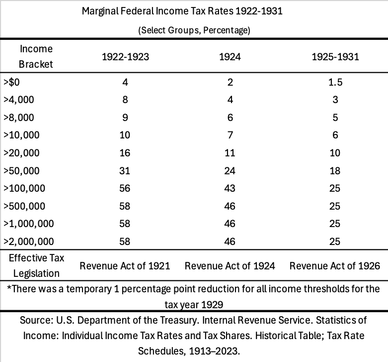
Because Secretary Mellon later became the subject of intense criticism, including congressional investigations during the Hoover administration, it is important to recall how he described the aims of his program. The Mellon tax cuts are the origin of what contemporary and later critics would deride as “tax cuts for the rich.” What is often overlooked, however, is that Mellon had envisioned the income tax as a levy borne almost exclusively by the most affluent—and for a time, it was exactly that. For seven consecutive years following the Revenue Act of 1926, lower-income Americans paid little or no income tax, contributing only a negligible share of total receipts after 1924.
Mellon warned that “the man of large income has tended more and more to invest his capital in such a way that the tax collector cannot reach it.” The value of tax-exempt securities, he argued, “will be greatest in the case of the wealthiest taxpayer” and will be “relatively worthless” to a small investor, with the result that the cost of making up lost revenue must fall on other taxpayers “who do not or cannot take refuge in tax-exempt securities.” It was, in Mellon’s judgment, an “almost grotesque” outcome to impose “higher taxes on all the rest in order to make up the resulting deficiency in the revenues.” He repeatedly urged Congress to end such exemptions, pointing out the economic inefficiencies these instruments created. More troubling to him still was the democratic principle at stake. Mellon found it “repugnant” that there should exist “a class in the community which cannot be reached for tax purposes.” He considered it inconceivable “that a system of taxation which permits a man with an income of $1,000,000 a year to pay not one cent to the support of his Government should remain unaltered.” 13
Andrew Mellon, himself among the nation’s wealthiest citizens, became an obvious target for personal attacks. Yet his position was reinforced repeatedly through both policy and outcome. The data quickly confirmed his central claim: lower rates could yield greater revenue from high earners while broadening productive investment. The tax burden, which during the war years had pushed deeply into middle- and lower-income brackets, receded abruptly upward once the postwar rate reductions were enacted. The most dramatic evidence of this reallocation appears in Table 3, which shows the immediate post-1924 redistribution of tax liability.
Table 3
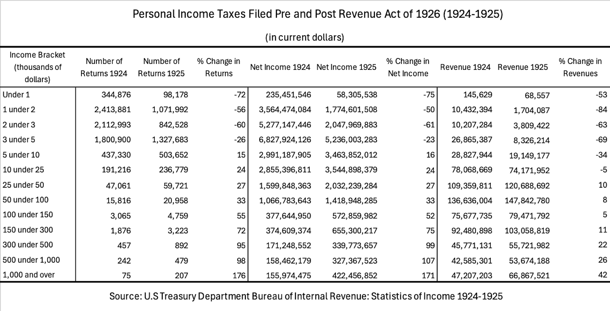
The perception of abrupt rate reductions for those at the top of the income scale—and the public concern they prompted—may be understandable. At first glance, such changes appeared to insulate the affluent from a proportionate fiscal burden. But evaluating the effects of a comprehensive tax reform requires attention to the underlying mechanics and the data that reflect them, rather than to initial impressions. The most common error in these debates is the conflation of tax rates with tax revenue. From the government’s perspective, the purpose of taxation is to raise sufficient revenue to finance legitimate public functions, so the relevant question is which rate structure generates that revenue without suppressing productive capacity. A more informed reading of the evidence shows that periods marked by stronger incentives for production generally coincide with superior economic performance—and that expanding prosperity, rather than intensifying statutory claims on income, has proved the more stable foundation for federal revenue.
The rate schedule is now established, and the immediate shift in the tax burden is evident in Table 3. Attention now turns to how the distributive tax burden and revenue responded once the Revenue Act of 1926 took effect. Table 4 summarizes what transpired in the years immediately preceding and following implementation.
Table 4
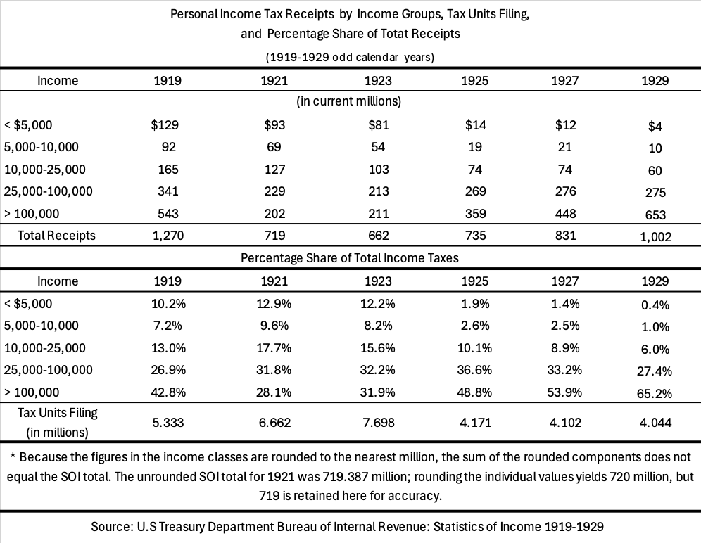
There are several contextual points essential for interpreting Table 4 and the fiscal dynamics of the latter half of the 1920s. Nominal income tax receipts in 1919 exceeded those of any subsequent year through 1929. This outlying year reflected immediate postwar conditions, as extraordinary wartime profits and accumulated gains were realized and taxed under the elevated surtax rates imposed by the Revenue Act of 1918. The episode was not indicative of any durable revenue productivity of high statutory rates. As these temporary realizations dissipated, reported income and tax liabilities at the top retreated considerably. The pattern observed in the ensuing years reflects changes in filing and reporting behavior—deferral, avoidance, and exit from the tax base—rather than a mechanical expansion of taxable income.
More fundamentally, revenue outcomes are best understood as a secondary expression of economic capacity—shaped by statutory design and taxpayer behavior—rather than as a direct measure of economic performance. Federal revenues represent resources transferred from the private economy to the public sector; whatever the government collects is, by definition, no longer available for private consumption, saving, or investment. Revenue totals are therefore not a proxy for economic health or sound fiscal policy, a distinction that will recur throughout this analysis. Reconstructed historical estimates indicate that real GDP in 1929 was roughly forty percent higher than in 1919.14 Accompanied by a population increase of about seventeen million, real per-capita output rose by approximately twenty-one percent over the same period. Because the 1919 GDP figure derives from a backward-extended historical series rather than official BEA accounts, it should be treated as approximate. Still, the comparison underscores that assessments of the decade must account for changes in underlying economic capacity, not isolated movements in revenue.
Also critical, from 1919 through 1924, an average of approximately 2.75 million more tax units filed returns each year than after the Revenue Act of 1926 took effect. This abrupt decline in participation was the principal factor behind the disparate revenue levels across the period. That statute substantially raised the personal exemption beginning in 1925, removing roughly 43 percent of the 7.3 million tax units of 1924 from the tax rolls in subsequent years. As marginal rates fell, both total and per-capita receipts accelerated through the end of the decade. The data reveal that, following the Revenue Act of 1926, the effective distribution of the income tax burden became markedly more progressive, with lower-income groups largely removed from the rolls and upper-income filers paying a rising share of total revenues.
Gene Smiley and Richard Keehn’s reconstruction of 1920s income tax data has become a standard reference for the period.15 Although the authors fully recognized the exemption increases enacted in the early 1920s and incorporated those changes into their revenue-share calculations, their tables of return counts begin at the $3,000–$5,000 bracket. The original Statistics of Income for 1920 show more than 5.2 million filers with incomes between the exemption threshold and $3,000, a group that disappears whenever the distribution is truncated at $3,000. As a result, any presentation using that cutoff makes the early tax base appear narrower than the raw Treasury bulletins reveal. For selected years in the interwar period, returns reporting net income under $5,000 were tabulated on a sampling basis in the Statistics of Income. The scale and persistence of the shifts documented here, however, render estimation variance immaterial to the structural conclusions.
Notwithstanding this caveat, the underlying data are sufficient on their own. The Statistics of Income tables reproduced in Appendix B permit direct inspection of changes in filing participation, reported incomes, and revenues across statutory regimes, providing confirmation of the same patterns identified in reconstructed series. The observed patterns are consistent with the behavioral response anticipated by Mellon. The SOI tabulations likewise show substantial increases in net income across the brackets most affected by the reforms. Taken together, these movements demonstrate the strength of the behavioral response to the Mellon tax program and are unambiguous when comparing the pre- and post-implementation years surrounding the Revenue Act of 1926.
The most pronounced increases occurred at the apex of the distribution, where the number of filers expanded dramatically over the decade. Relative to the previous high mark in 1916, the number reporting incomes above $1,000,000 rose by roughly 148 percent by the peak years of 1928–1929. Measured against the depressed levels of the early 1920s, however, the expansion was far larger, with the number of such filers increasing more than tenfold. The acceleration becomes evident after 1924 and culminates in 1928 and 1929; compared with the pre-1925 average, the average number of top-bracket filers in those peak years was roughly 524 percent higher.
A further anomaly appears when reported high incomes (above $500,000) were greater in 1916 than in any year prior to 1925. Mellon, writing in Taxation: The People’s Business (1924), independently documented this pattern using contemporaneous Treasury statistics. World War I and the subsequent recession offer only a partial explanation, but they do not account for the sustained weakness in the intervening years. In 1916, nominal gross income for this cohort was more than three times the average from 1917 to 1924. The tax environment accounts for the remaining divergence: the marginal rate in 1916 was only 12–15 percent for incomes above $500,000, whereas in the following eight years it averaged 70 percent. Moreover, capital gains were not distinguished from individual income until 1922, leaving realizations fully exposed to the escalated rates. This disparity—and its consequences for reported income—will be examined more fully later, as it is highly revealing.
The SOI tables from the 1920s must be read in context to interpret developments in the latter half of the decade. Viewed superficially, they can suggest that the affluent simply grew richer while lower-income households fell behind. A quick comparison of net income by bracket, combined with knowledge of the 1925 rate reductions, can reinforce the impression that the tax schedule was designed to favor high earners. But, as shown earlier, millions of low-income tax units were removed from the tax rolls altogether. Their reported net incomes declined accordingly not because their pretax incomes fell, but because expanded exemptions eliminated their requirement to file. The apparent contraction in the lower brackets is therefore a statistical artifact, not an economic reversal.
In effect, lower-income filers retained a larger share of their earnings and faced reduced tax liabilities. With unemployment estimated to average roughly 3.5 percent during the latter half of the decade, opportunities for gainful employment were widespread.16 Table 5 illustrates the steep reduction in the tax burden on incomes below $5,000 (about $70,000 in constant 2017 dollars). This group, which included many middle-income households, paid only a negligible share of total income tax receipts. One might argue that this cohort was not contributing its “fair share,” but this pattern was consistent with the distribution Mellon and Coolidge intended: broad relief at the base and a larger share of the burden borne by the highest earners.
Table 5
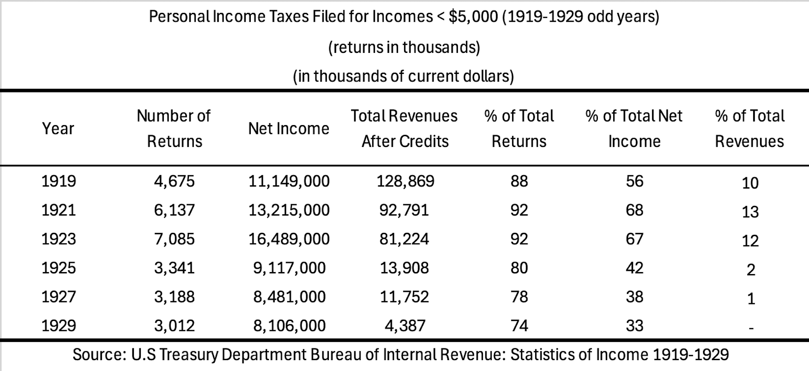
Table 5.1
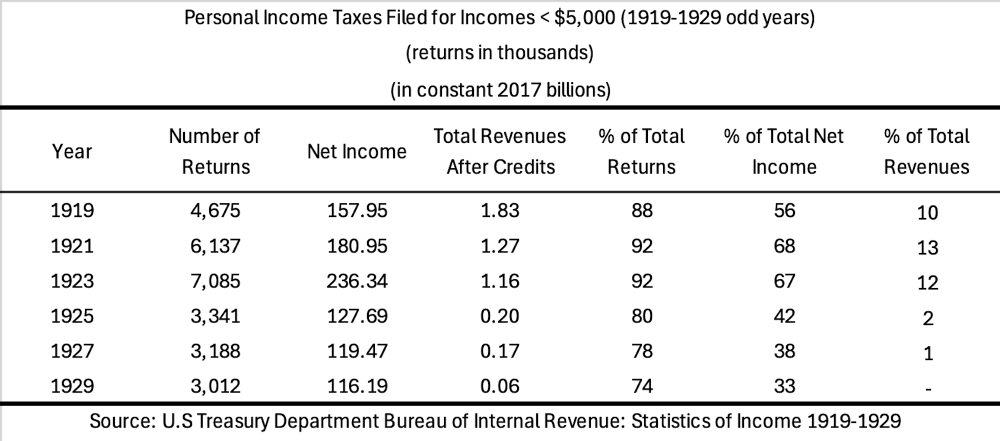
On the other side of the income scale, returns filed by the most affluent—and the net incomes reported—increased substantially. Among tax units with net incomes above $100,000, nominal gains between 1924 and 1929 ranged from 87 to 253 percent. These movements are sometimes interpreted as evidence of widening economic inequality. Yet IRS data record only reported income, a distinction that becomes critical in the decades that follow. The marginal rate does not determine how much pretax income individuals can earn; it shapes the manner in which they report, realize, or conceal income. Economic output expands when the incentives to produce outweigh the disincentives embedded in taxation or regulation. When rates rise beyond certain thresholds, they alter reporting behavior—prompting sheltering, shifting, deferral, or underreporting—thereby affecting the income figures that appear in the data. This mechanism was well understood prior to Mellon’s tenure. Treasury Secretaries Carter Glass and David Franklin Houston, as well as President Woodrow Wilson, each acknowledged that excessively high rates distorted reported income and undermined revenue productivity through behavioral responses.
Economists refer to this responsiveness as the elasticity of taxable income (ETI)—the degree to which reported income changes when marginal tax rates shift. ETI is most pronounced among top earners, whose resources and flexibility allow rapid adjustment. Taxpayers may reduce effort, defer compensation, or reclassify income through deductions, fringe benefits, and tax-exempt vehicles. Any change that alters the after-tax reward to production introduces a wedge into economic decision-making: some individuals work less, others simply report less. The pattern recurs across episodes in the historical record—when top marginal rates rise sharply, reported taxable income from this cohort tends to fall.
It is also important to note that these figures capture flows of reported income earned within a given year rather than stocks of wealth or net assets. The personal income tax reaches income, not accumulated capital, and its taxable base depends on what individuals choose to realize and report. Accordingly, policies that aim to use the income tax for wealth redistribution—or to impose exceptionally elevated burdens on high-asset tax units—confront practical limits. The evidence indicates that they frequently trigger changes in the form, timing, and reporting of income, compromising the achievement of the redistribution sought. As economist Alan Reynolds observed, “What is most important is the marginal rate of all taxes on activities that would add to income—such as working harder, investing time and money in a better education, or saving and investing in a new business. When high marginal tax rates punish added income, they must also punish added production. That slows economic growth. When the economy grows slowly, tax receipts also grow slowly.” 17
Returning to the data, the pronounced increase in income across all brackets above $5,000 following the Revenue Act of 1926 underscores the extent of taxpayers’ behavioral response to marginal tax rates. Millions of low- to mid-income individuals were removed from the tax rolls entirely, and a larger share of the nation’s tax burden was borne by upper-income earners, even as their marginal rates declined. Taken together, these outcomes align closely with the effects Secretary Mellon anticipated. The contemporaneous claim that the cuts relieved high-income tax units at others’ expense was not borne out by the evidence; in practice, the distribution of the tax burden shifted decisively in the opposite direction. Table 6 illustrates this reallocation clearly. For context, $10,000 in the late 1920s equates to roughly $140,000 in constant 2017 dollars.
Table 6
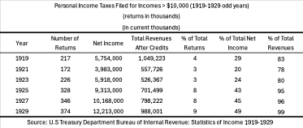
Table 6.1
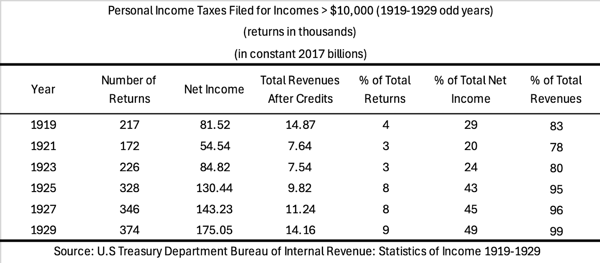
Even in real terms, total revenue from incomes above $10,000 were higher in 1919, despite 157,000 fewer filers. Again, this reflects unusually high wartime profit realizations taxed at the exceptionally high surtax rates of the Revenue Act of 1918. These receipts were the product of a temporary wartime income surge rather than any durable revenue productivity of high rates, as the steep drop in revenues after 1919 plainly demonstrates. Once those temporary effects subsided, and the Mellon reforms replaced the wartime schedule with a stable peacetime structure, the tax base broadened and revenues normalized on a sustainable footing.
The stock market boom in the latter half of the decade and the resulting surge in capital gains at the top reflect the timing of wealth realization rather than the creation of new wealth, underscoring the extent to which high-income tax bases depend on asset turnover and expectations rather than stable income flows. Total tax revenues rose, the share paid by the most affluent increased substantially, and the national debt declined by nearly one-third. 18 Taken together, the period registers as one of fiscal and economic expansion. Policies that reduce marginal tax rates alter the returns to work and investment, and historical data show corresponding adjustments in investment behavior and reported income. Under these conditions, the Mellon tax reductions coincided with broad improvements in living standards across the income distribution.
The analysis of the Mellon tax cuts is properly limited to 1929. Although the Revenue Act of 1926 remained in effect until 1932, observations beyond 1929 are not directly comparable. The Smoot–Hawley Tariff of 1930, an abrupt and substantial change in the tax burden on international commerce, and the onset of the Great Depression introduced shocks that altered both economic conditions and taxpayer behavior in ways unrelated to the late 1920s rate structure. These shifts make it impossible to isolate the effects of the earlier reforms without conflating them with events of a fundamentally different character.
As always, multiple influences interacted throughout the decade, but the record indicates that the tax reforms and stable monetary policy were a meaningful component of the expansion that followed. Any alternative explanation must account for the broad-based increases in output, income, and employment recorded during these years. Whether competing hypotheses can fully explain the pattern is open to interpretation; what is clear is that claims characterizing the tax reductions as harmful are not supported by contemporaneous economic indicators.
Herbert Hoover, the Onset of the Great Depression, and the Revenue Act of 1932
With the prosperity of the 1920s fading, the United States entered the most severe downturn in its history. Some may be inclined to conflate the boom of the 1920s with the calamity that followed, as though the Great Depression were its inevitable consequence. The available evidence does not support that interpretation. The Depression arose from a different constellation of shocks—monetary contraction, collapsing credit, and global deflation following the trade disruptions introduced by the Smoot–Hawley Tariff—along with substantial tax increases enacted later at the federal, state, and local levels. Rapid gains in output, employment, and real income characterized the close of the Mellon era; what followed reflected a marked shift in policy and economic conditions rather than a continuation of the prior decade.
This is not the forum to dissect the full chain of events that produced and prolonged the Depression, an undertaking that has filled volumes and lies beyond the scope of this work. Nevertheless, a prevailing view among economic historians holds that a combination of escalating trade barriers, contractionary monetary policy, and fiscal missteps deepened the downturn after 1930. Acknowledging these limits defines the boundaries of what this analysis seeks to explain. The Great Depression is often said to have begun with the stock market crash of October 1929. In reality, that collapse, though dramatic, did not by itself cause the catastrophe that followed. Unemployment averaged 3.2 percent in 1929, and contemporary monthly labor indicators show no abrupt deterioration in the months immediately following the crash.19 Industrial employment remained essentially stable through mid-1930, deviating only marginally from 1929 levels. By the spring of 1930, the economy was recovering, and stock prices had regained much of their earlier decline.
The post-crash recovery ended abruptly in mid-1930, coinciding with the enactment of the Smoot–Hawley Tariff on June 17—despite an open letter of warning signed by over a thousand economists. The legislation contributed to escalating trade tensions and retaliatory measures abroad at a moment when global demand was already fragile. Monetary contraction and banking distress deepened over the subsequent year, compounding the downturn. The inflection point is visible in the labor data. Unemployment averaged 3.29 percent for the first six months of 1930, virtually identical to the annual rate of 1929. In the latter half of the year, however, unemployment rose each month, culminating in an annual average of 8.52 percent.
What began as a cyclical adjustment evolved into a pronounced contraction. Labor market conditions deteriorated steadily after mid-1930, and unemployment entered double digits the following year before exceeding 20 percent in 1932. With revenues collapsing, the 72nd Congress—Democratic in the House and narrowly Republican in the Senate—and President Herbert Hoover responded with the Revenue Act of 1932, a sweeping set of rate increases intended to restore budget balance. Hoover and Treasury Secretary Ogden Mills, long adherents to fiscal orthodoxy, believed that equilibrium in the federal accounts was essential to restoring confidence, even as contractionary policies deepened the downturn.
In practice, the resulting tax increases compressed the after-tax returns to work, investment, and risk-taking, while simultaneously reducing disposable income. The administration proceeded despite the evidence of the preceding decade: federal revenues rise and fall with output and taxpayer behavior, not with statutory rates in isolation. Fiscal legislation in the early 1930s reflected a continued assumption of a direct relationship between elevated rates and higher receipts—a premise the 1920s record had already undermined and that proved even less tenable under far harsher economic conditions.
In its annual report, the Treasury described the Revenue Act of 1932 as follows:
[The Revenue Act of 1932] effected one of the largest increases in taxes ever imposed by the Federal Government in peace times. In a year in which the enactment of any new revenue measure presented grave difficulties, the placing on the statute books of an act so substantial in scope was an impressive achievement. Viewing the act in relation to the emergency situation which made it necessary, there are a number of major accomplishments which result from it, aside from the provision of substantial additional revenue. These include the broadening of the base of the individual income tax through reduction in personal exemptions; the limitation of deductions from gross income on account of losses from sales of stocks and bonds held for two years or less; the closing of loopholes in certain other administrative provisions of the income tax law; and the inclusion among the new taxes of certain taxes which are levied on a relatively broad base and will yield relatively large amounts of revenue with little administrative cost.20
Hoover signed the Revenue Act on June 6, 1932, with its provisions applying retroactively to the entire 1932 taxable year. Personal exemptions were reduced from $1,500 to $1,000 for single filers and from $3,500 to $2,500 for married couples or heads of family (see Table 7). The lowest rate rose from 1.5 percent to 4 percent, and the top marginal rate increased from 25 percent to 63 percent. The act also eliminated the earned-income credit, raised the corporate rate from 12 to 13.75 percent, increased the top estate tax, and added substantial new excises. Although enacted in an effort to restore budget balance amid collapsing receipts, these measures imposed significantly higher liabilities on households and firms already under severe financial strain.
With output collapsing, Washington was not alone in raising taxes. State and local governments, confronted with falling property values and fixed debt-service obligations, enacted a wave of new and higher levies—including property, sales, and income taxes. By 1932, combined state and local receipts were more than twice federal revenues. The cumulative effect was substantial. At every level of government, higher rates were imposed on a rapidly contracting income base, narrowing the capacity to pay and diminishing the incentive to produce.
The experience of the preceding decades had repeatedly shown that elevated tax rates can shrink the taxable base, particularly among high-income earners. In 1932, Congress and President Hoover repeated the pattern—this time as unemployment reached historic levels during the worst phase of the Depression. Raising rates at both ends of the income distribution compressed incentives to production and disposable income across the economy at precisely the moment when recovery may have been aided by the opposite. Yet because that same act also lowered personal exemptions, the number of filers subject to tax eventually expanded. It took several years, however, for the enlarged base to compensate for the contraction in high-income reporting—a reminder that governments can broaden the statutory reach of taxation even as the underlying incentives that sustain production weaken.
By the time the act took effect, the nation was already in deep economic downturn: industrial output had fallen by nearly half, unemployment exceeded 20 percent, and credit markets were paralyzed.21 But instead of seeking relief through lower tax burdens or measures aimed at restoring confidence, policy moved in the opposite direction. More damaging than the federal tax hikes, the combined federal, state, and local tax increases drove a widening wedge between pre-tax returns and after-tax incentives for productive activity. As the data in the following section will show, the results diverged sharply from the Treasury’s projections of “substantial additional revenue.” Rather than stabilizing the fiscal position or supporting recovery, the 1932 tax increases failed to reverse the downturn and coincided with its continued deterioration. Table 7 traces the evolution of the personal exemption, establishing how changes to a single provision could widen or narrow the tax base depending on the policy environment.
Table 7
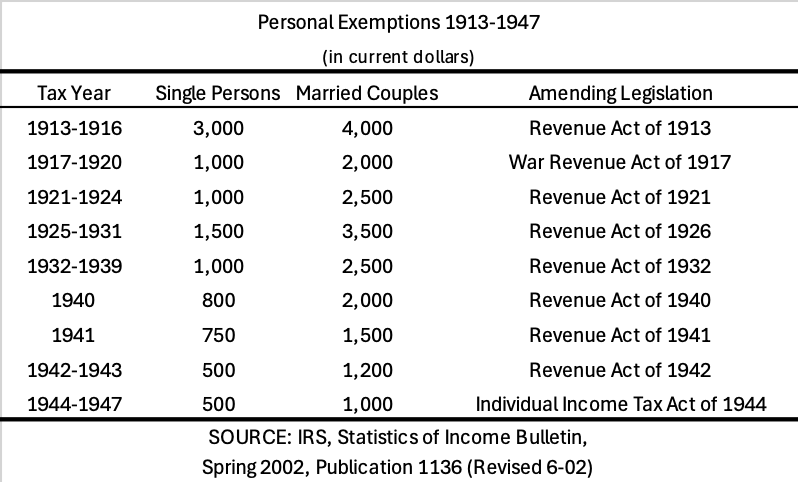
Great Depression, FDR, World War II, and the Postwar Era
With the United States deep in the throes of the Great Depression, President Franklin D. Roosevelt entered office with the steep Revenue Act of 1932 rate schedule. Beginning in 1934, he pursued additional measures aimed at increasing federal revenue from upper-income tax units in advance of the broader revisions introduced in the Revenue Act of 1935. Roosevelt outlined the principles in his June 1935 message to Congress that would become the standard by which his tax program must be judged:
As the fiscal year draws to its close it becomes our duty to consider the broad question of tax methods and policies… these studies have made it very clear that we need to simplify and clarify our revenue laws… If a government is to be prudent its taxes must produce ample revenues without discouraging enterprise; and if it is to be just it must distribute the burden of taxes equitably. I do not believe that our present system… meets this test… Our revenue laws have operated in many ways to the unfair advantage of the few… Because of the very sound public policy of encouraging a wider distribution of wealth, I strongly urge that the proceeds of this tax… be applied to the reduction of the national debt.22
Roosevelt framed higher, targeted taxation and debt retirement as the transmission mechanism through which the policy would progressively lighten the tax burden borne by the average taxpayer, while incidentally assisting in the restoration of budget balance. The analysis that follows evaluates the extent to which the ensuing legislation advanced those stated objectives. It is not evident from contemporaneous fiscal data that such studies substantiated the president’s assertions. The record of prior decades, if anything, pointed in the opposite direction. Roosevelt’s appeal to lighten the tax burden on ordinary tax units and balance the budget echoed earlier Treasury goals. Yet those aims had already been realized under the Mellon program of the 1920s, which virtually eliminated the income tax burden on the least affluent and aided in reducing the national debt by roughly one-third. This section distinguishes three channels through which tax policy shaped outcomes: (1) statutory base expansion, (2) behavioral response at upper incomes, and (3) administrative lock-in during wartime.
Economic conditions of 1935 differed markedly from those of the prior decade, but the empirical record remains clear; lower marginal rates had coincided with stronger growth and steadier public finances. Therefore, Roosevelt’s call for reform must be measured against the actual results of the tax changes that followed. The Revenue Act of 1934 added several new liabilities on upper incomes, but the individual income tax structure itself was not fundamentally revised until tax-year 1936. Roosevelt’s 1935–36 tax program was publicly advanced as a measure aimed squarely at high-income tax units, framed in rhetoric that critics and supporters alike described as “soak-the-rich.” The subsequent analysis details how the tax base, reported income, and the distribution of the federal burden evolved once those measures took effect. Table 8 provides the statutory context in which these responses unfolded.
Table 8
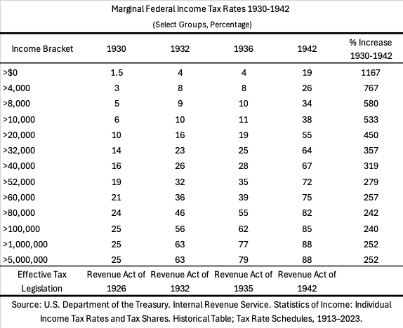
With the Revenue Act of 1935 elevating top marginal rates, the Revenue Act of 1936 introduced an undistributed-profits tax on retained corporate earnings and imposed additional taxes on corporate income. These actions came after earlier increases in the effective capital gains tax rate—from 12.5 percent to 17.7 percent in 1934 and a further rise under the 1936 statute through additional structural changes to the tax treatment of gains. Of critical importance, the 1936 law tied the capital gains rate to the holding period of assets. As Alan Reynolds explained in the Wall Street Journal, “since the capital gains tax rate grew in tandem with income tax rates, the top income tax bracket increased to 79% in 1936, while the capital-gains tax rate jumped to 63% for assets held one year, 47% after two years, 32% after five, and 24% after ten. Even worse, the 1936 law added a surtax on ‘undistributed profits’—those not paid out as dividends but kept to finance business investment.” 23
The combined effect of the Revenue Acts of 1934 and 1936 was a marked increase in the effective tax burden on capital. Even when capital gains are measured on a like-for-like basis—restricted to recognized long-term gains under contemporaneous statutory definitions—the volume of gains reported to the Treasury never fully recovered after the early 1930s. Average annual capital gains declined from roughly $739 million in 1922–1933 to about $503 million in 1934–1944, a nominal reduction of approximately 32 percent.24 Notably, the earlier period includes the worst years of the Depression, indicating that the subsequent shortfall cannot be attributed solely to cyclical compression.
From 1922 through 1933, long-term gains were taxed at a uniform 12.5 percent rate. Beginning in 1934, gains were taxed through partial inclusion in ordinary income, raising the implied statutory burden to roughly 19 percent (30 percent inclusion taxed at a 63 percent top marginal rate). The introduction of holding-period schedules and the undistributed profits tax increased the cost of equity finance and reduced incentives for portfolio turnover. In an economy already constrained by weak investment, the persistent decline in realizations suggests more than temporary caution and is consistent with reduced risk-taking and slower capital formation. The near-total collapse in realized gains between 1929 and 1932, followed by a decade of incomplete recovery despite partial asset-price rebound, illustrates that the high-income tax base depends less on the stock of wealth than on the incentives and conditions governing its realization.
After passage of the Revenue Acts of 1935 and 1936, total personal income tax revenue nearly doubled from 1935 to 1936 and remained elevated in 1937.25 Over the same period, real GDP rose substantially—by roughly $137 billion in 1936 and an additional $61 billion in 1937—suggesting that part of the revenue expansion reflected broader income growth rather than purely statutory change. In isolation, this pattern appeared consistent with President Roosevelt’s stated objective of expanding federal revenue. Yet the composition of the new revenue diverges sharply from the stated aim of distributing the tax burden equitably. The increase also proved short-lived: receipts declined over the following two years and were not surpassed until 1940, when the number of filing tax units had roughly doubled as exemption reductions and filing-rule changes broadened the lower end of the tax base. Contextual figures underscore the point:
· The number of tax units rose by roughly 838,000 in 1936 and 1.78 million in 1937 compared with 1935.
· By 1937, sixty-seven percent of these additional filers reported income below $3,000 (≈ $53,000 in 2017 dollars).
· Eighty-eight percent reported income below $5,000 (≈ $88,000 in 2017 dollars).
· Ninety-six percent reported income below $10,000.
While the upper tier of that range represented comfortable middle-class incomes, these new filers were far removed from the households commonly described as holding concentrated economic power. The revenue surge stemmed primarily from the expansion of the lowest income brackets, driven by several interacting developments:
1. Tax-code mechanics. The sharply reduced personal exemptions under the Revenue Act of 1932 greatly broadened the filing base, pulling large numbers of low- and moderate-income households into the federal income tax system for the first time. These reductions, enacted under President Hoover rather than Roosevelt, remained in place throughout the New Deal with no restoration.
2. One-time veterans’ bonuses. In 1936, Congress overrode President Roosevelt’s veto of the Adjusted Compensation Payment Act, authorizing the immediate redemption of World War I service certificates through the issuance of approximately $1.75 billion in Adjusted Service Bonds.26 Although the bonds carried a formal maturity date of 1945, redemption occurred rapidly following issuance, effectively converting the program into an immediate cash disbursement.
3. Income shifting. The undistributed profits tax encouraged the distribution of corporate earnings, shifting income from the corporate to the individual tax base. Dividend payments rose sharply in 1936 and 1937, providing direct evidence of this shift. At the same time, heightened policy uncertainty and the prospect of future tax changes likely contributed to a surge in capital-gains realizations, which reached a 1930s peak of roughly $974 million in 1936.
4. Bracket creep. Annual inflation of roughly 3.6 percent in 1937 raised nominal incomes within a non-indexed tax schedule, modestly contributing at the margin to higher tax liabilities even where real purchasing power changed little.
This combination of factors elevated both the number of returns and the revenues drawn primarily from the lowest income groups. Although the economy had recovered much of the ground lost earlier in the decade, the increase in low-income tax receipts reflected administrative and statutory dynamics rather than a surge in real prosperity. The results diverged from Roosevelt’s stated aim of distributing the tax burden more equitably.
On the question of debt reduction, by the late 1930s federal debt had risen to levels that Treasury officials themselves regarded as alarming, prompting growing internal concern over continued peacetime borrowing and the long-run implications for fiscal stability. New Deal legislation accelerated government spending across a wide range of relief, public works, and recovery programs. The individual initiatives varied in scope and design, but their combined budgetary impact was substantial. In May 1939, Treasury Secretary Henry Morgenthau offered an unsparing assessment of the results before Congress: “We have tried spending money. We are spending more than we have ever spent before and it does not work. … We have never made good on our promises. ... After eight years of this Administration we have just as much unemployment as when we started—and an enormous debt to boot.” 27
From the government’s perspective, the barometer for gauging tax policy is how much revenue was collected. A more meaningful benchmark, however, is identifying the rate structure that maximizes productive capacity—since revenues follow output, not the reverse. Only when 1.3 million additional filers were added to the rolls in1936 did real net income narrowly exceed the 1925-1929 average. Real GDP per capita lagged as well, not surpassing its 1929 level until ten years later. The pattern was similar for revenue; apparent gains followed the downward extension of the tax base rather than a genuine economic recovery.
Because statutory brackets and filing thresholds were fixed in nominal terms, taxpayer participation and tax burden in this period must be assessed initially in nominal dollars. Deflating the series does not materially alter the underlying relationships. From 1925 through 1929, the Treasury collected a nominal annual average of $893 million from roughly 4.1 million tax units. Between 1930 and 1940, total collections exceeded that pre-Depression benchmark only three times: in 1936 ($1.21 billion from 5.4 million filers), in 1937 ($1.14 billion from 6.3 million), and in 1940 ($1.44 billion from 14.6 million). Figure 1 illustrates the scale of fluctuation due to behavioral responses to the incentives and constraints embedded in the tax code. It also bears recalling that the filing population fluctuated substantially—by more than three million tax units prior to 1925 and by an additional one to three and a half million filers from 1936 forward—magnifying the apparent distributional changes captured in the raw Statistics of Income, independent of cyclical variation.
Figure 1
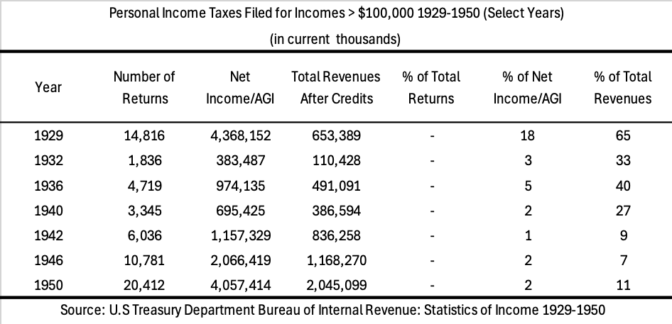
Roosevelt maintained that tax policy should raise sufficient revenue without discouraging enterprise. Revenue did eventually rise substantially, but the more critical question is whether this occurred at the expense of enterprise itself. By 1939, Secretary Morgenthau would offer what was, by all indications, a painfully candid appraisal of that shortcoming. His words summarized what the economic data already showed; massive expenditures failed to produce durable employment or growth. Morgenthau’s admission stands as one of the clearest internal acknowledgements of the limits of New Deal stimulus, consistent with the persistent weakness and volatility observed in private investment throughout the late 1930s. Former Federal Reserve Chairman Arthur F. Burns later drew a similar conclusion from an outside vantage point, observing that the new taxes of the 1930s, imposed amid deep unemployment, eroded confidence and reinforced the perception that the system was punishing success rather than fostering recovery.28
Unemployment rose into the double digits in 1931, exceeded 20 percent from 1932 through 1935, and remained above 14 percent for the rest of the decade. Rates declined sharply only with wartime mobilization, a boost driven by armament production rather than any genuine revival in private sector activity. Moreover, although not all sixteen million Americans who served in World War II would otherwise have been in the civilian labor force, their induction materially reduced the civilian labor-force denominator. This contraction mechanically lowered the measured unemployment rate, masking the continued underlying weakness of the domestic economy.
This analysis does not attempt to adjudicate the macroeconomic impact of the New Deal or the counterfactual question of whether additional spending might have altered the business cycle. It instead evaluates the administration’s tax program against its own stated objectives. On that narrower standard, the record is clear: the policies adopted under Roosevelt produced neither a durable expansion of the high-income tax base, nor an equitable distribution of the tax burden, nor a reduction in the federal debt. On every count, the empirical outcome ran in the opposite direction. Having identified the downward shift in the tax burden, the corresponding developments among top-income filers follow directly. Subsequent tables illustrate this divergence.
The selection of benchmark years for the following tables reflects clear structural transitions in federal tax policy and economic conditions. 1929 represents the final equilibrium of the Mellon reforms before Smoot–Hawley and the onset of the Depression. The changes in 1932 and 1936 correspond to the Revenue Acts enacted in those years, which redefined rates, exemptions, and the filing population. 1940 captures the mature New Deal tax structure as modified by the Revenue Act of 1940, enacted in anticipation of large-scale defense spending, just before full wartime mobilization altered both incomes and compliance patterns. The Revenue Act of 1942 marks the largest expansion of the tax base in U.S. history, while 1946 provides the first stable postwar year following the distortions of 1941–1945. The series concludes in 1950, a natural endpoint at mid-century. These dynamics are reflected in the distributional patterns summarized in Table 9.
Table 9
Table 9.1
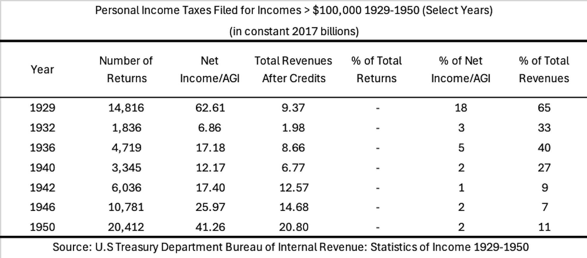
Evidently, the number of tax units reporting incomes above $100,000 declined rapidly, and their share of total revenues was nearly halved by 1932. The partial rebound in 1936 reflects temporary reclassification effects rather than a durable recovery of the high-income tax base. Even as aggregate income and output recovered through 1950, the top-income share of total tax receipts never again approached its pre-Depression level. The apparent post-Depression “equalization” of income most plausibly reflects contraction and avoidance, not genuine redistribution.
The fiscal patterns of 1941–1945 reflect wartime mobilization rather than normal peacetime dynamics and must be interpreted as such. But these years do not alter the underlying trend. By the time the United States entered the war, the tax base had already expanded dramatically downward, and reported income at the top had already contracted. Comparable top-end disparities appeared even when measured against the First World War era. By 1936, the number of high-income filers had fallen far below 1916 levels despite much higher national output, underscoring the sensitivity of reported income to tax policy. In 1916, there were roughly 29 percent more tax units reporting incomes above $100,000 than in 1936, and their combined net income was about 91 percent greater in nominal terms. Over the same period, nominal GDP rose by roughly 69 percent and real GDP by about 51 percent. Such figures are difficult to reconcile with diminished productive capacity alone and are more consistent with distortionary effects of the intervening rise in marginal rates and the migration of income into sheltered or deferred forms.
These episodes were not confined to the Depression decade. The number of returns reporting incomes over $100,000 did not exceed its 1928 level again until 1948—the same year in which both net income and revenue for this group rebounded substantially. The timing was not coincidental. The Revenue Act of 1948 included the income-splitting provisions that altered marginal incentives on a permanent basis for married tax units. By effectively doubling surtax bracket widths, income splitting reduced the marginal cost of reporting additional income, particularly at the upper end of the distribution.29 Consistent with this incentive structure, the post-1948 period shows a marked increase in high-income married filers relative to singles, suggesting that income splitting contributed to higher reported incomes beyond the transitory effects of temporary credits. Although inflation was elevated in 1948, the magnitude and concentration of the increase in top-income filings far exceeded what nominal price changes alone could plausibly account for, pointing instead to the discrete incentive effects of income splitting. Moreover, inflation was substantially higher in 1947, yet no comparable increase in top-income filings or reported income occurred.
The greater effect was to modestly reintroduce some marginal incentives that had been largely suppressed since the early 1930s, after the Revenue Act of 1932 displaced the incentive structure established under the Mellon reforms of 1926. These gains were reinforced, though not initiated, by postwar adjustments—most notably the Revenue Act of 1945—that unwound the extraordinary fiscal measures of World War II. The repeal of emergency levies, the expiration of temporary excises, and the removal of wartime controls eased effective tax burdens as the economy returned to peacetime conditions. Much of this relief was mechanical rather than programmatic, but it nonetheless produced a lighter statutory landscape heading into 1948.
Additional relief arrived at the end of the decade. Despite statutory top rates of 91 percent in 1947–1949, tax units did not generally face those liabilities. Congress enacted temporary postwar tax-reduction credits that applied after liability was calculated under the regular schedule. The Revenue Act of 1948 granted a 5 percent credit against individual liabilities, reducing the effective top marginal rate to roughly 86.45 percent. The Revenue Act of 1949 provided a 9.75 percent reduction for tax on income above $100,000, lowering the effective top rate to about 82.13 percent. Although these credits were temporary, they materially altered marginal incentives and, in combination with income splitting, produced the strongest resurgence in reported high-income earnings since the Mellon years. The subsequent graphs (Figure 2 and Figure 3) make this pattern unambiguous.
If these figures seem difficult to reconcile with a larger economy, the proximate cause is not obscure. Marginal rates on incomes above $100,000 ranged from 7 to 15 percent in 1916, peaked at 25 percent during 1925–1931, and rose to between 62 and 79 percent by 1936. Changes of this magnitude predictably shaped taxpayer behavior and align with well-established evidence of high elasticity of taxable income at upper brackets. More pointedly, the rate structure reduced the after-tax return to additional enterprise and investment at the margin, contributing to weaker output and a slower recovery in the upper tax base. The steep 1930s decline in high-income filers and their reported income is most plausibly explained by avoidance, deferral, and shifting—rather than by any sudden disappearance of underlying productive capacity.
The anomaly is striking. In 1929, the cohort earning more than $100,000 included about 5,600 fewer tax units than in 1950. Yet in real terms, the smaller 1929 contingent still reported approximately $21 billion more in total net income than the 1950 group’s adjusted gross income. This divergence becomes more dramatic when viewed against macroeconomic conditions. By 1950, real GDP was more than twice as large as in 1929. Across the entire 1925–1929 period—the full stretch of comparable years following the Revenue Act of 1926—average aggregate income among tax units reporting above $100,000 was not matched again until 1948 in nominal terms, and in real terms not at any point through 1960. The evidence, therefore, cannot be attributed to a single anomalous year. Such a trend is difficult to interpret as an actual contraction in the nation’s ability to generate high-income output. In an economy whose prosperity is measured by the production of goods, services, and capital formation, this would imply regression rather than progress. Figure 2 illustrates these data.
Figure 2
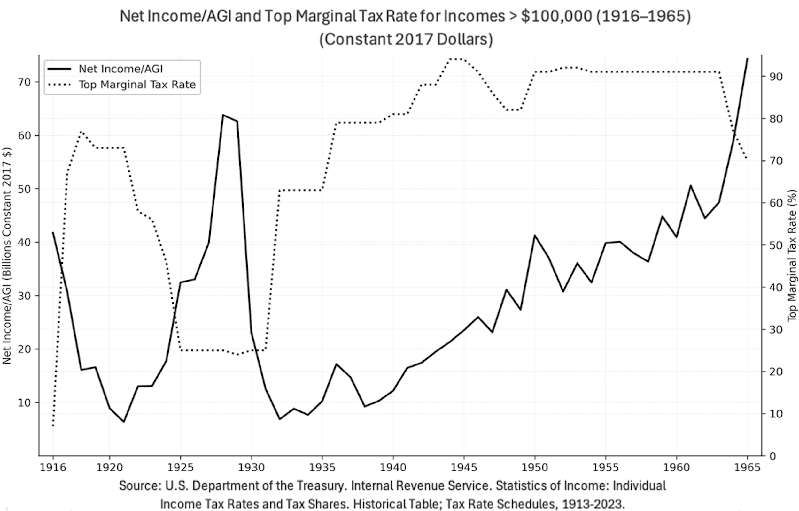
If these data alone do not convey the behavioral impact of confiscatory tax rates, Roosevelt himself supplied confirmation. In his June 1, 1937, message to Congress, he warned that Treasury analyses of 1936 returns revealed “efforts at avoidance and evasion… so widespread and so amazing both in their boldness and their ingenuity, that further action without delay seems imperative.” He acknowledged that many such
practices had “the color of legality.” Others were “plainly contrary to the law,” but all were “contrary to the spirit of the law.” 30
Roosevelt’s message to Congress came three days after a letter from Secretary Morgenthau detailing the increasingly elaborate methods by which citizens were sheltering income from taxation. The episode underscores what the filing data repeatedly show: when rates rise to punitive levels, taxpayers adjust their behavior accordingly. During these years, high statutory rates coincided with shifts into shelters, deferral strategies, and the underreporting or non-reporting of income, all of which reduced the amount of income appearing on returns. The consequence was not only diminished top-end revenue but a visible misallocation of resources, as capital and effort moved away from productive activity and toward legally minimizing liability.
Across multiple administrations, Treasury secretaries and presidents acknowledged the same basic principle: that sufficiently high marginal tax rates induce avoidance and suppress reported income. Yet a common interpretation in the economic history literature depicts the early 1940s through the 1970s as a model era of equality attributed to redistributive fiscal policy. It is often conceded that avoidance occurred but assumed that, even allowing for such behavior, the reported tax data still approximate the underlying income distribution. That assumption is dubious. Reported incomes and corporate profits can be measured, but no statistic can capture the income the tax authority never sees—offshore holdings, deferred capital gains, and other legal or illicit shelters. More fundamentally, these data describe pretax income. High marginal rates can narrow inequality only after tax; if they instead reduce pretax earnings by lowering the after-tax return to labor effort, saving, or investment, they redistribute not wealth but output itself. While later distributional national accounts allocate broader components of national income, behavioral responsiveness in taxable pretax income remains central to interpreting long-run inequality measures.
The same caution applies even more strongly to estimates of wealth. Income can be estimated only with difficulty; wealth is even less tractable, as decades of debate in the economic literature demonstrate. Modern wealth series—whether derived from estate multipliers, capitalization of income flows, or reconstructed balance sheets—ultimately rest on the same income data and therefore inherit their behavioral distortions. Under such conditions, the claim that confiscatory tax rates reduced wealth concentration is empirically fragile; when reported top incomes collapse, inferred wealth shares must decline automatically.
The following data points illustrate why such caution is necessary. The record shows that the number of returns reported by tax units earning over $500,000 failed to exceed their 1929 level for thirty-five years. In constant 2017 dollars, that threshold equaled about $7.1 million in 1929 but only $4 million in 1964—a substantially lower real benchmark reached by fewer tax units more than three decades later. This despite real GDP more than three times greater in 1964 than in 1929. Equally striking, the 1929 real net income for this cohort was not surpassed until 1968.
More revealing still, aside from the brief interval of 1925–1929, the number of returns in this bracket never again reached its 1916 total until 1950. For context, $500,000 represented roughly $11.2 million in 1916 and just over $5 million in 1950. The pattern is even starker when examining real reported income for this cohort, which did not exceed its 1916 level until 1965. Outside the late twenties, there is not a single year between 1917 and 1964 in which real top-end income returned to its pre-World War I scale, despite an economy that was vastly larger. By 1965, the number of top filers was 3.5 times higher than in 1916, and real GDP was more than five times greater.
Such patterns strain the interpretation that high-income opportunities had materially contracted at a time when the economy was expanding at historic scale. Only after the Revenue Act of 1964 reduced the top rate to 70 percent did the number of high-income returns, and their aggregate reported income, begin to recover. The evidence speaks plainly; the apparent disappearance of high-income tax units was less an economic reality than a statistical artifact of the prevailing rate structure. What disappeared was reported income, not underlying economic activity or wealth—at least not on the scale the tax data would imply. The accompanying graph in Figure 3 illustrates this divergence.
Figure 3
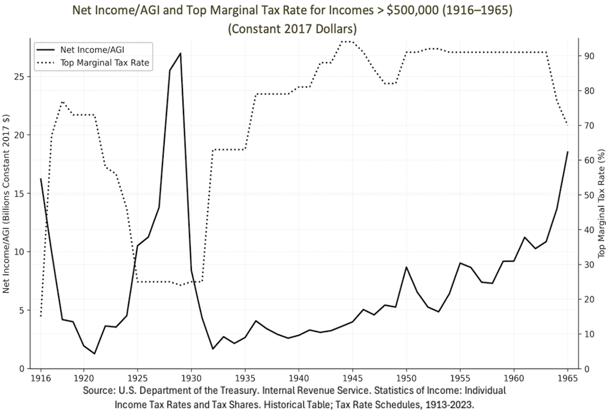
These figures reveal a clear M–W inversion: top marginal tax rates trace an M over time, while reported high-income output responds inversely in a W. The turning points align with statutory changes rather than with secular economic trends. Because 1916 income data are reported on a gross-income basis, whereas 1917 onward uses net income after allocated deductions, slight definitional differences may affect strict comparability at threshold margins; however, the magnitude of the inversion observed in Figures 2 and 3 is not driven by this reporting distinction. The retreat of high-income filers is evident in the data and conflicts with the redistributive aims articulated in 1935. What emerged was not a redistribution of wealth from rich to poor, but a redistribution of tax liability onto those least able to bear it. These comparative data reveal the magnitude of the shift:
• Tax units reporting under $3,000 of income averaged 1.9 million from 1925 to 1929.
• By 1942,
that number had reached 31.8 million—an increase of more than sixteen-fold.
• Between 1936 and 1942, the under $3,000 group expanded by 28.1 million
filers, and their tax payments rose by more than $2.8 billion—over one hundred
times their earlier level.31
• From 1936 to 1942, roughly 30.5 million additional tax units with incomes
below $5,000 entered the system.
• Their share of the total tax burden rose from 5 percent to 48 percent.
• During the same period, the over $100,000 group’s share of revenues fell from
40 percent to 9 percent.
• Their share of total net income declined from 5 percent to 1 percent.
Roosevelt’s presidency (1933–1945) spanned this entire realignment, though using 1933 as the base year and auditing through 1945 would magnify the contrasts still further. The year 1936 is used here because it marked the first full year under the individual income tax code of the Revenue Act of 1935. It is true, of course, that wartime mobilization demanded unprecedented revenue and required a broader tax base. Yet the groundwork for that expansion had been laid years before the war began. Under President Hoover’s Revenue Act of 1932, the personal exemption fell to $1,000 for single filers and $2,500 for married couples—substantially increasing liabilities for many moderate earners even before the Depression had run its course. By the time the first major wartime tax bill was passed in 1940, the base of taxable income had already expanded far beyond its late-1920s limits. Legislators had seven years to lighten the burden on lower-income households before war financing rendered such relief impracticable, yet no such relief was enacted. On the contrary, the personal exemption was reduced twice before the U.S. was officially engaged in the war and two additional times during Roosevelt’s tenure (see Table 7).
The Current Tax Payment Act of 1943 completed this transformation by introducing withholding at the source, taxing wages and salaries directly as they were earned. What began as an emergency wartime measure soon became a permanent feature of federal finance. The mass-income tax created by measures enacted between 1932 and 1944 redefined the fiscal structure of the United States. Exemption thresholds never returned to their prewar real values, and the share of Americans subject to income tax remained permanently higher. The wartime rationale faded, but the policy endured. The downward shift of the tax burden toward lower- and middle-income groups was not a temporary expedient—it was institutionalized inertia.
These outcomes ran directly counter to Roosevelt’s stated objectives for tax policy. The large increase in tax units earning under $5,000 did not coincide with full labor-market recovery but occurred during a decade marked by persistent unemployment and uneven income growth. Unemployment remained in the double digits throughout the 1930s—reaching nearly 25 percent at its height—whereas rates had averaged about 5 percent during the 1920s (roughly 3.5 percent from 1925–1929). Under these conditions, the downward expansion of the tax base appears to reflect statutory changes more than a broad-based surge in real earnings. Between 1929 and 1950, the burden of federal taxation inverted; Table 10 details this reversal.
Table 10
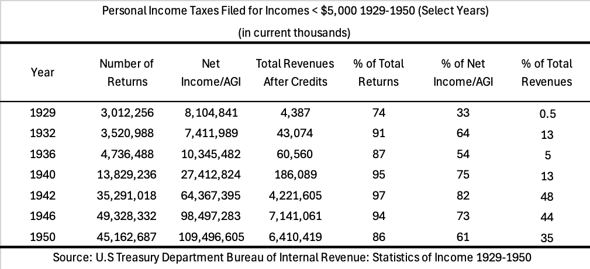
Table 10.1

The analysis of the FDR era necessarily spans the extraordinary fiscal and economic conditions of World War II. Unlike the interruption posed by the Depression and Smoot–Hawley in the early 1930s—events that overwhelm any attempt to isolate the incentive structure of the Mellon-era tax system despite statutory continuity—the wartime years can be examined on their own terms, because the tax system was deliberately scaled to finance mobilization rather than rendered observationally opaque by an uncontrolled breakdown. This examination therefore traces how the tax system functioned under those radically different fiscal demands and how taxpayer participation and reported income responded to statutory changes once the emergency receded.
While millions of new low-income households entered the filing base, it bears noting that throughout the 1930s, federal excise taxes—not the individual income tax—were the government’s principal source of revenue. In every year from 1934 through 1942, excise receipts exceeded income tax collections, and in several years by more than a two-to-one margin. Because these levies were embedded in the prices of widely purchased goods—fuel, tobacco, telephone service, transportation—they fell most heavily on those with the least discretionary income. In practice, the revenue system of the 1930s shifted the tax burden decisively downward and did so long before wartime mobilization expanded the income tax into a mass obligation.
A revenue system so heavily reliant on regressive consumption taxes operated alongside a monetary environment undergoing its own upheaval. On April 5, 1933, President Roosevelt issued Executive Order 6102, requiring the surrender of most privately held monetary gold and suspending domestic gold convertibility, with limited exemptions. The following year’s Gold Reserve Act raised the official gold price from $20.67 to $35 per ounce, devaluing the dollar by roughly 41 percent. The consequences were immediate and far-reaching; holders of public and private debt saw the real value of their claims eroded, while debtors—including the federal government—found their obligations effectively reduced.
British economist John Maynard Keynes criticized Roosevelt’s monetary strategy, arguing that the administration’s suspension of domestic gold convertibility and its erratic revaluation policies created uncertainty that undermined confidence and delayed recovery. In an open letter to the New York Times in December 1933, he wrote: “In the field of gold devaluation and exchange policy, the time has come when uncertainty should be ended. This game of blind man’s bluff with exchange speculators serves no useful purpose and is extremely undignified. It upsets confidence, hinders business decisions, occupies the public attention in a measure far exceeding its real importance, and is responsible both for the irritation and for a certain lack of respect which exists abroad.” 32 Though many forces contributed to the Depression’s persistence, fiscal and monetary policy choices—however constrained by contemporary circumstances—remain subject to analytical scrutiny. The devaluation of the dollar relative to gold is often treated as a step toward monetary stabilization, but it came after several years of severe deflation and was accompanied by continuing policy uncertainty, limiting its capacity to reverse the Depression’s accumulated damage.
Fiscal measures enacted during World War II belong to a different category. Although the United States did not enter the conflict until after Pearl Harbor in December 1941, it was already supporting the Allied effort through the Lend-Lease program, proposed in 1940 and enacted in March 1941. Given the stakes, extraordinary taxation and borrowing were unavoidable. In that context, the fiscal measures adopted during wartime reflect fundamentally different objectives and constraints. The issue is that the war ended in 1945, yet the fiscal structure established during the emergency persisted long afterward. This discussion is not intended to suggest that taxation alone caused or prolonged the Great Depression; rather, it isolates the measurable effects of fiscal policy within a broader set of economic dynamics. Many forces converged, and hindsight simplifies what contemporaries faced amid uncertainty. The purpose here is not to evaluate the wider New Deal program or Roosevelt’s leadership, but to identify how specific statutory changes in the tax system affected participation, reported income, and revenues.
The record leaves little ambiguity about what policymakers said, what they enacted, and what the data reveal. The combined tax policies of Hoover and Roosevelt placed a disproportionate burden on lower-income households while diminishing the relative income tax contribution of those at the top. The paradox that emerges from this period is straightforward: the expansion of public responsibilities did not translate into a greater capacity to tax upper-income filers. Confiscatory top marginal rates reduced the effective base by encouraging avoidance and reclassification, limiting the revenue obtainable from high-income tax units even as national output recovered and expanded. In practice, behavioral responses—not statutory intentions—determined the system’s yield, a reality often overlooked in retrospective assessments of mid-century taxation.
What began as an effort to restore confidence and recovery evolved into wartime exigency—and ultimately into a permanent mass-tax system. The personal exemption for married couples would not exceed its 1932–1939 nominal level until 1987, and even that increase left it below the amounts allowed from 1913 to 1916. In nominal terms, the married-couple exemption did not match its pre–World War I value until 1989, and the single-filer exemption would not reach its 1913–1916 level until 2002. Adjusted for inflation, the real value of the personal exemption had become almost negligible by the mid-1980s, when it stood at $3,800 for married couples and $1,900 for single filers—only a small fraction of its prewar purchasing power.33 The standard deduction, introduced in 1944 and capped at $1,000, offered little relief. Taken together, these figures show how readily emergency measures can solidify into enduring features of the tax code, resistant to reversal once institutionalized.
This tendency was recognized by eventual Nobel Laureate economist Paul Samuelson, who observed in 1948 that “Each period of emergency—each war, each depression—expands the activity of government. After each emergency has passed, expenditures never seem to go back to their previous levels.” 34 The pattern was evident as early as 1916–1925; even after the Revenue Act of 1926, rates remained several times higher than before World War I. The pronounced rate increases imposed during the Great Depression carried forward into the wartime tax regime, and the persistence of that structure thereafter exemplified the ratchet effect in fiscal policy.
Top marginal rates reached 94 percent in 1944 and—aside from the temporary postwar credits that reduced effective burdens in 1947–1949—remained in the low 90s until the Revenue Act of 1964. Throughout this period, the lowest statutory rate never fell below 20 percent. Such a structure sharply altered marginal incentives, even as aggregate capital deepening proceeded under the exceptional conditions of the postwar period. At these levels, statutory rates nonetheless discouraged incremental risk-taking and distorted the allocation of capital at the margin. By mid-century, high-income individuals and business owners had nearly two decades of experience minimizing exposure to elevated personal rates. With corporate rates roughly fifty points below the top individual schedule, shifting income toward the corporate base became the economically rational response wherever feasible, reducing effective personal tax burdens without altering statutory rates. Compensation practices evolved in parallel, with a growing share delivered through perks, deferred pay, and other non-taxable forms.
Nevertheless, the period commonly described as the “golden years,” from 1947 to 1973, did exhibit the strongest average growth by many conventional metrics. The inference that fiscal policy must therefore have been approximating optimality, because it was not misaligned enough to prevent this outcome, does not follow. The postwar expansion is frequently interpreted as evidence that the prevailing tax regime did not impede growth and that its high marginal rates contributed materially to the era’s more equal income distribution. A more precise interpretation is that extraordinary underlying conditions—postwar normalization, demographic tailwinds, suppressed global competition, and pent-up demand—were sufficiently powerful to generate strong outcomes even in the presence of significant policy constraints.
A closer analogy is an elite athlete performing exceptionally under unusually favorable conditions while using equipment later understood to be suboptimal. Strong performance demonstrates resilience and talent, not that the constraint enhanced performance. Once those extraordinary conditions receded, slower growth does not retroactively validate the earlier constraint; it reflects an economy approaching its frontier rather than evidence that the prior policy configuration was optimal.
As for the perception of greater parity in incomes, the cumulative effect was that official income data likely understated the true concentration of earnings. Measured solely through reported pretax incomes, inequality appeared to narrow, but much of this compression was statistical rather than substantive. Throughout the period, tax policy and economic behavior diverged; structures intended to promote equity encouraged avoidance and shifted income out of the individual tax base. The result was a prolonged stagnation in reported upper-income earnings that reflected reporting incentives rather than underlying economic reality—a distortion that persisted until postwar rate reductions altered the incentives governing how income was earned, realized, and disclosed. Reported income understates both concealed earnings and foregone production; the data cannot distinguish between them, but either mechanism complicates simplistic redistributive claims.
What emerges from this record is not a period-specific aberration, but a recurring fiscal mechanism. When marginal tax rates rise beyond levels compatible with incentivizing sustained production and accurate reporting, the income tax can cease to scale proportionally with economic growth. Output may expand, employment may rise, and aggregate receipts may increase—particularly under conditions of strong postwar growth and capital deepening—yet the upper end of the tax base becomes progressively hollowed out. Apparent equalization follows, not because incomes converge upward or wealth is redistributed downward, but because reported high-income activity contracts. The result is a tax system that appears more progressive while becoming less effective, less transparent, and less capable of financing its own ambitions.
This mechanism is most clearly illustrated by the M–W inversion (Figures 2 and 3), which makes the underlying relationship explicit. A fivefold increase in real GDP alongside near-stagnant top-bracket income is difficult to reconcile without one of two conditions: either (1) a genuine collapse in high-income productivity or (2) a collapse in reported income driven by tax-induced behavioral responses. The broader economic record offers scant evidence for the first; the post-1932 tax regime made the second predictable.
JFK, The Revenue Act of 1964, and the 1960s
The two decades following World War II left the American income tax system frozen in its wartime mold. Nominal stability in the tax schedule obscured structural distortion; top marginal rates of 91 percent endured through the 1950s, a period that coincided with persistently depressed high-end reporting and an increasing premium on tax-avoidance strategies relative to productive investment. President John F. Kennedy broke with orthodoxy, mounting one of the first major postwar challenges to the wartime tax regime and helping generate bipartisan support for structural reform.
Three years into his presidency, Kennedy speaking to Congress about the state of taxation in 1963:
Originally designed to hold back war and postwar inflation, our present income tax rate structure now holds back consumer demand, initiative, and investment. After the war and during the Korean conflict, the outburst of civilian demand and inflation justified the retention of this level and structure of rates. But it has become increasingly dear--particularly in the last five years-that the largest single barrier to full employment of our manpower and resources and to a higher rate of economic growth is the unrealistically heavy drag of Federal income taxes on private purchasing power, initiative and incentive. Our economy is checkreined today by a war-born tax system at a time when it is far more in need of the spur than the bit.
Middle- and higher-income families are both consumers and investors, and the present rates—ranging up to 91 percent—not only check consumption but discourage investment and encourage the diversion of funds and effort into activities aimed more at the avoidance of taxes than the efficient production of goods. The oppressive impact of those high rates gave rise to many of the undue preferences in the present law--and both the high rates and the preferences should be ended in the new law. Under present conditions, the highest rate should not exceed 65%, a reduction of 29% from the present rate-accompanied by appropriate reductions in the middle-income ranges. This will restore an idea that has helped make our country great--that a person who devotes his efforts to increasing his income, thereby adding to the nation's income and wealth, should be able to retain a reasonable share of the results.35
John F. Kennedy’s role in the development of federal tax reduction is less frequently emphasized than other aspects of his presidency. His fiscal program faced substantial resistance during his lifetime, particularly within his own party. The Revenue Act of 1964 was enacted on February 26, 1964, after Kennedy’s assassination, but the plan was fundamentally his; President Lyndon B. Johnson and Congress advanced the proposal largely as Kennedy had framed it. Emerging from a Democratic Congress, the legislation passed with broad bipartisan support on a final conference adoption (House 326–83; Senate 74–19), reflecting a policy consensus that lower marginal rates would strengthen incentives to produce, invest, and report income.36
At the beginning of Kennedy’s administration, the economic setting bore a partial resemblance to the early 1920s: high marginal rates persisted in peacetime, avoidance incentives were entrenched, and policymakers sought to restore stronger private investment and hiring. Kennedy, Treasury Secretary C. Douglas Dillon, and their economic advisers recognized many of the same structural distortions identified by earlier tax reformers—punitive rates, investment drag, and a tax code that rewarded avoidance over productivity.
Kennedy had campaigned on a promise to “get America moving again,” and to that end, a succession of revenue acts was designed to reverse course. The Revenue Act of 1962 and the Revenue Act of 1964 were not conceived as temporary measures but as long-term reforms aimed at restoring sustained economic expansion. The 1962 Act initiated the process by allowing faster depreciation schedules and providing incentives for business investment. The comprehensive 1964 Act advanced the program, instituting across-the-board rate reductions and modernizing key elements of the tax code. These reforms were followed by a renewed expansion of private investment and consumer activity. In the years that followed, unemployment declined to its lowest level in a decade, business confidence strengthened, and the economy experienced a sustained period of prosperity—one that persisted until later shifts in fiscal and monetary policy in the opposite direction.
As always, multiple forces were at work, and no single policy can be isolated as the sole cause of the ensuing expansion. Yet it is appropriate to recognize that the tax cuts formed a central component of a deliberate policy environment conducive to growth. Fiscal and monetary conditions operated in tandem—sound monetary policy alongside rate reductions—to reinforce stability and investment. This interaction was later articulated by Robert Mundell, who observed: “The correct policy mix is based on fiscal ease to get more production out of the economy, in combination with monetary restraint to stop inflation. The increased momentum of the economy provided by the stimulus of a tax cut will cause a sufficient demand for credit to permit real monetary expansion at higher interest rates.” 37
The fiscal half of the policy mix has been identified; on the monetary side, Kennedy adhered closely to Secretary Dillon’s insistence on maintaining a strong dollar. Early reliance on Operation Twist, an effort to stimulate growth through yield-curve manipulation while simultaneously defending the balance of payments, proved limited and did not become a sustained operating framework. Monetary policy returned to a conventional emphasis on price stability, external balance, and dollar credibility. Taken together, the easing of marginal tax burdens and the restoration of a disciplined, strong-dollar monetary stance established a policy environment combining growth-oriented fiscal reform with monetary stability, reprising conditions associated with the expansion of the 1920s.
The Revenue Act of 1964 marked the first major statutory reduction in marginal tax rates since the Mellon reforms of the 1920s. It included a phased implementation—partial in 1964, with the full effect realized in 1965. A parallel goal was reform: closing loopholes and reducing distortions that made tax sheltered or speculative ventures more attractive than productive enterprise. Table 11 shows the scale of these rate reductions.
Table 11
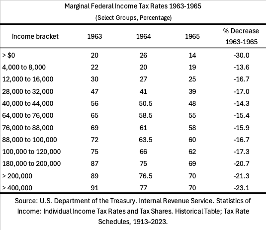
The peak corporate income tax rate was also reduced from 52 to 48 percent. In both magnitude and breadth, the package was one of the more extensive general tax reductions enacted up to that time, with the largest nominal cuts accruing to upper-income tax units under the progressive rate schedule. Neither Kennedy nor Johnson faced accusations of enacting “tax cuts for the rich,” and the program was not framed as “trickle-down” economics. Both contemporary discussion and later historical assessments treated the reform as a standard, growth-oriented adjustment rather than as an ideological tax-cutting agenda. This is notable given the scale of the reform; the top marginal individual rate was reduced by 21 percentage points, matching the magnitude of the Revenue Act of 1926 reduction and exceeding the initial reduction enacted under the Economic Recovery Tax Act of 1981.
A common explanation is that the Kennedy tax cuts were presented as “Keynesian,” meaning a demand-side fiscal stimulus aimed at raising aggregate spending. “Keynesian” here refers to the doctrines of John Maynard Keynes, whose framework dominated mid-twentieth-century macroeconomics and was widely associated with demand-driven growth. Yet Kennedy’s own justification—repeated in his messages to Congress—did not fit neatly within that category. He anticipated that lower rates would expand output, reduce unemployment, and eventually yield higher revenues through stronger real growth. The underlying logic echoed a long-standing view that marginal rate reductions can encourage productive activity, a line of reasoning articulated by classical economists and reflected in Mellon’s 1920s arguments.
Determining which, if any, elements of the demand-side prescription applied to the Revenue Act of 1964 requires examining both the policy’s stated intentions and the historical record. It is therefore useful to consider what Keynes himself had written about tax policy. Writing in 1933, Keynes observed, “Nor should the argument seem strange that taxation may be so high as to defeat its object, and that, given sufficient time to gather the fruits, a reduction of taxation will run a better chance, than an increase, of balancing the Budget.” 38 The statement closely parallels the arguments advanced in the early 1920s and, notably, makes no reference to deficit spending or public outlays as the primary means of stimulating demand. Additional remarks from Keynes on taxation will be addressed in the following analysis.
Kennedy’s Council of Economic Advisers (CEA) was composed of leading Keynesians, including Chairman Walter Heller, James Tobin, and Kermit Gordon. Another prominent voice, though holding no official post, was Paul Samuelson, whose views exerted influence on the administration’s initial economic thinking. By the early 1960s, Keynesian analysis had become the dominant framework in American macroeconomics, and the period was frequently characterized as the “Keynesian Revolution.” They were widely described as architects of the “New Economics,” a program informed by postwar Keynesian theory as synthesized by economists such as Samuelson and rooted more broadly in the ideas introduced by Keynes in The General Theory of Employment, Interest, and Money (1936).
As noted, the first major step toward tax reform was the Revenue Act of 1962, which targeted business investment. The act accelerated depreciation schedules, introduced a 7-percent investment tax credit, and allowed firms to deduct a larger share of capital expenditures more rapidly from taxable income. These measures were designed to encourage modernization and capital formation and thus began the process of restoring investment incentives that the Revenue Act of 1964 would advance two years later.
During the first year of Kennedy’s presidency, the spending initiatives advanced by the Council of Economic Advisers represented the most readily available policy options. At the same time, Kennedy directed the Treasury Department to begin developing a comprehensive program of tax reform, fully aware that such a measure would face greater political resistance. Yet as the expansion progressed and concerns persisted about the strength of private investment, Kennedy’s focus shifted toward a broad-based tax reduction aimed at reviving productivity and long-term growth. Kennedy consulted widely within his administration, but there was a clear hierarchy of influence. As historian James N. Giglio later observed, “It was obvious that Keynesian economists such as [John Kenneth] Galbraith, who opted for more public expenditures, or [Walter] Heller, who favored a general tax cut, had limited influence on Kennedy during this period. Kennedy listened more to Dillon, the Republican secretary of the treasury, who had close ties with the financial community.” 39
In the decades since, some interpretations have emphasized the Keynesian framing of the 1964 tax cuts or attributed the proposal primarily to the Council of Economic Advisers. These views, while common, understate Kennedy’s own reasoning and the documented role of Treasury Secretary Dillon. Although the CEA referenced the plan using Keynesian terminology of the period, Kennedy’s public statements were more closely aligned with incentive-based reasoning than with demand-side stimulus. This distinction is reflected in a December 20, 1962, memorandum from Walter Heller to the president, included in his “Brief Book on Economic Matters.” The memorandum takes the Treasury’s tax proposal as given and supplies a macroeconomic justification rather than claiming authorship of the program.
Two years after passage, Heller claimed that “the rationale of the 1964 tax-cut proposal came straight out of the country’s post-war economic textbooks.” 40 While he did not cite a specific volume, the reference presumably evokes the Keynesian stabilization framework typified by Paul Samuelson’s Economics (1948), the dominant macroeconomics text of the era. The rationale Kennedy publicly advanced—lower marginal rates to encourage work, saving, and investment—was hardly novel. Treasury officials and presidents between 1918 and 1925 had made analogous arguments, drawing on an older classical tradition running from Hume and Smith to Jean-Baptiste Say. Nonetheless, later accounts often describe the Kennedy program as Keynesian. The contemporaneous record is more revealing: the speeches, official messages, and legislative sequence establish the program’s rationale and custody as it moved from proposal to enactment.
In 1961, President Kennedy directly identified his instruction to the Secretary of the Treasury to research and prepare a comprehensive tax reform program. This effort built on earlier congressional studies of tax reform during the mid-1950s and, more specifically, on reviews undertaken by the House Committee on Ways and Means in the late 1950s. After extended deliberation, the Committee had recommended an across-the-board rate reduction of roughly 30 percent, though no formal bill was introduced. Before joining the Kennedy administration in 1961 as Assistant Secretary of the Treasury for Tax Policy, Stanley S. Surrey had participated in a task force that developed detailed recommendations for tax reduction. In Kennedy’s 1961 address to Congress, he referred to the Secretary of Treasury, the Committee on Ways and Means, and the Joint Economic Committee but made no mention of Heller, Samuelson, or the Council of Economic Advisers.
Kennedy stated:
While it is essential that the Congress receive at this time this Administration's proposals for urgent and obvious tax adjustments needed to fulfill the aims listed above, time has not permitted the comprehensive review necessary for a tax structure which is so complicated and so critically important to so many people. This message is but a first though urgent step along the road to constructive reform.
I am directing the Secretary of the Treasury, building on recent tax studies of the Congress, to undertake the research and preparation of a comprehensive tax reform program to be placed before the next session of the Congress.
Progressing from these studies, particularly those of the Committee on Ways and Means and the Joint Economic Committee, the program should be aimed at providing a broader and more uniform tax base, together with an appropriate rate structure. We can thereby work toward the goal of a higher rate of economic growth, a more equitable tax structure, and a simpler tax law. I know these objectives are shared by—and, at this particular time of year, acutely desired by—the vast majority of the American people.41
In addition to Kennedy’s 1961 address, no source is more definitive on the origins of the tax program than Treasury Secretary C. Douglas Dillon, who confronted the question directly in two oral-history interviews recorded shortly after the legislation’s enactment. His testimony is unequivocal; the tax program was conceived, structured, and drafted within the Treasury Department, and the Council of Economic Advisers entered the process only at the final review stage. Importantly, these interviews were conducted before the effects—favorable or otherwise—of the tax cuts had materialized, leaving little incentive for retrospective reinterpretation.
In an interview with Harvey Brazer in Washington D.C. on September 21, 1964, this exchange occurred:
BRAZER: To what extent were the developing Treasury proposals, both with respect to structural reforms and rate reduction, as well as overall net reduction? To what extent were these discussed with or cleared with other agencies, or was it purely an internal matter?
DILLON: Both these tax bills were developed purely internally in the Treasury and only at the very end of the process were they given as a package to the Budget Bureau who then brought in the Council of Economic Advisers and the White House advisers to look them over. As far as I can recall, there weren’t any substantive changes made in either of the two bills from the packages originally suggested by the Treasury, certainly no changes of any moment.42
A second interview, recorded two months later with Dixon Donnelly, was even more explicit on the chain of custody for the Revenue Acts:
DONNELLEY: What about the statement that has often been made in print that the tax cut was Walter Heller’s idea, and that he sold it to President Kennedy?
DILLON: Of course, there is no truth in that at all. This was something that was originally discussed by me with the President before my appointment. It was part of our original policy that was mentioned in the tax message of 1961. Our idea then was that the first tax bill would be passed in 1961, and that we would come along the next year with the overall tax cut. We didn’t, at that time know the exact size of the tax cut that we would propose, but we did know that we wanted to reduce the top rates to the area of 65 or 70 percent and other rates accordingly. We didn’t know how much we could make up in the way of reforms that would broaden the base. At that time we thought we could make up more than later proved possible.43
Despite this contemporaneous record, a number of later commentators have advanced a different account, attributing the Kennedy tax program primarily to Walter Heller, Paul Samuelson, and the Council of Economic Advisers. Although this interpretation has become common, it lacks documentary support. Reflecting this view, Alan S. Blinder—former Vice Chairman of the Federal Reserve Board and a member of President Clinton’s
Council of Economic Advisers—offered the following characterization of the Kennedy program:
Indeed, the premier such textbook of the day was written by MIT’s Paul Samuelson (1948), who was the acknowledged intellectual leader of Kennedy’s team of economists even though he never took a position in Washington. Perhaps the most important and obvious feature of the New Economics was that the Kennedy–Johnson tax cut was the first deliberate and avowedly Keynesian action ever taken by the U.S. government. While the ideas were not new, acting on them was.44
Blinder correctly observes that the ideas behind the Kennedy tax cuts were not original to the 1960s, but he contends that acting on them was novel. Yet the essential rationale had already been applied in the Mellon tax program of the early 1920s, where reductions in marginal rates were similarly justified as a means of stimulating work, investment, economic growth, and reducing avoidance. Further evaluating that interpretation requires distinguishing between Keynes’s own writings and the later Keynesian framework developed by his interpreters. Keynes offered no sustained analysis of income taxation in his early book-length works, including: Indian Currency and Finance (1913), The Economic Consequences of the Peace (1920), and A Treatise on Probability (1921), and he did not address the subject directly until A Tract on Monetary Reform (1923), where his remarks concerned the fiscal effects of inflation. In one representative passage from 1923, he wrote:
Just as a toll can be levied on the use of roads or a turnover tax on business transactions, so also on the use of money. The higher the toll and the tax, the less traffic on the roads, and the less business transacted, so also the less money carried. But some traffic is so indispensable, some business so profitable, some money-payments so convenient, that only a very high levy will stop completely all traffic, all business, all payments. A Government has to remember, however, that even if a tax is not prohibitive it may be unprofitable, and that a medium, rather than an extreme, imposition will yield the greatest gain.45
This analogy illustrates the principle that taxation beyond a certain point becomes self-defeating—a concept well established among classical economists and later reaffirmed by Treasury Secretaries Carter Glass, David Houston, and Andrew Mellon. Presidents from both parties adopted similar reasoning, among them Democrat Woodrow Wilson and Republicans Warren G. Harding and Calvin Coolidge. Each described a similar behavioral response to excessive taxation: that rates set too high defeat their own purpose by discouraging productive effort and eroding the revenue base.
In The General Theory, Keynes returned to this theme. Although he wrote only briefly about taxation, his observations reveal an awareness of the practical limits of redistribution:
Since the end of the nineteenth century significant progress towards the removal of very great disparities of wealth and income has been achieved through the instrument of direct taxation—income tax and surtax and death duties—especially in Great Britain. Many people would wish to see this process carried much further, but they are deterred by two considerations; partly by the fear of making skilful evasions too much worth while and also of diminishing unduly the motive towards risk-taking, but mainly, I think, by the belief that the growth of capital depends upon the strength of the motive towards individual saving and that for a large proportion of this growth we are dependent on the savings of the rich out of their superfluity.46
Here Keynes acknowledges behavioral mechanics that are central to incentive-based analysis: excessively high marginal rates discourage risk-taking, encourage avoidance, and divert capital from productive use, while more moderate rates sustain saving and investment. Though he never developed this point into a formal doctrine of tax-incentive policy, his recognition of these limits accords with the classical principles of public finance. While Keynes advocated deficit-financed public spending as a response to severe economic contraction in the early 1930s, he did not articulate a general or symmetric framework of countercyclical fiscal policy. That conception was formalized only after the war by economists such as Abba Lerner, Alvin Hansen, and Paul Samuelson. Late in his life, Keynes had already grown wary of the doctrinal certainty forming around his ideas. Reflecting on a 1946 meeting in Washington dominated by economists invoking his framework, he remarked, “I found myself the only non-Keynesian present.” 47
Contemporary and retrospective debates often frame the Kennedy tax program as a contest between demand-side and supply-side theories. This distinction is overstated. Supply and demand are complementary aspects of the same economic transactions, and any reduction in marginal tax rates necessarily increases households’ disposable income. The relevant distinction is therefore not whether demand is affected—it invariably is—but how. Incentive-based tax reform can raise private demand indirectly by improving the expected returns to work, investment, and risk-taking, rather than through deficit-financed public expenditure. President Kennedy’s frequent references to “demand” reflected the political language of the period and do not imply that the program relied on government spending to substitute for private activity. The subsequent pattern of fiscal receipts and outlays therefore allows the program’s operative mechanisms to be tested empirically rather than inferred from rhetoric.
Clarifying the origins of the Kennedy tax program helps to resolve the interpretive dispute; the historical record that followed its enactment shows how taxpayers responded in practice. Following the full implementation of the act, the number of tax units reporting incomes above $100,000 increased substantially, alongside rising real adjusted gross income and a marked increase in real receipts from this group. The observed expansion in high-income filers, real AGI, and receipts indicates that marginal tax rates materially shape reporting behavior and the breadth of the tax base.
Although this analysis focuses on the upper strata of income earners, the same pattern appears across the higher brackets. While some rate reductions took effect in 1964, the full impact of the act appeared in 1965. Rational economic behavior implies that more labor will be supplied and greater risks undertaken when the taxpayer retains thirty cents of every additional dollar earned above the top threshold rather than nine—a 233 percent increase in the marginal after-tax return. If the incentive effects were illusory, an alternative mechanism would need to explain the abrupt increase in both the number of high-income filers and their growing share of total federal income tax receipts documented in Table 12.
Table 12
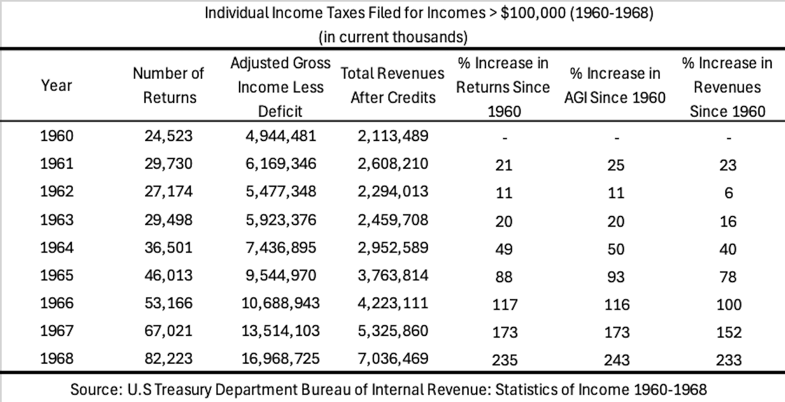
Table 12.1
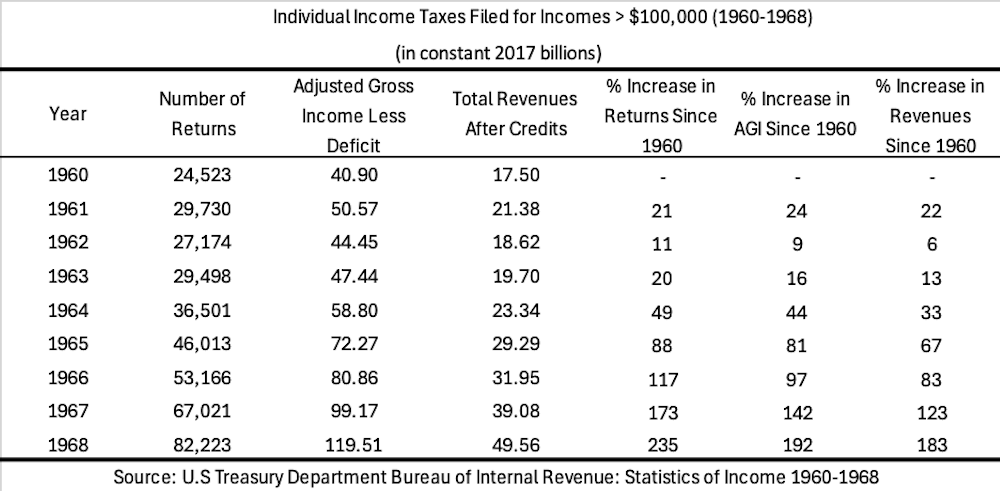
Data from several decades have been reviewed, and the only other period exhibiting a comparable surge in top-strata filers occurred in the latter half of the 1920s. Table 13 presents data from the preceding decade, illustrating the extent of the structural break from prior norms. The 1950s, shaped by the Korean War and several recessions, saw only modest and intermittent changes to the tax code. The Internal Revenue Code of 1954 reorganized and modernized existing law but left marginal rates, exemptions, and the basic structure virtually unchanged. As a result, its effects on taxpayer behavior and revenue appear limited, and the disincentives of the postwar tax regime largely remained in place throughout the period. During the entire decade, marginal rates for the cohort earning above $100,000 never fell below 75 percent at the low end and remained as high as 91 percent at the top. The number of returns, adjusted gross income, and revenues recorded in those years all pale in comparison with the figures observed after the Revenue Act of 1964.
Table 13
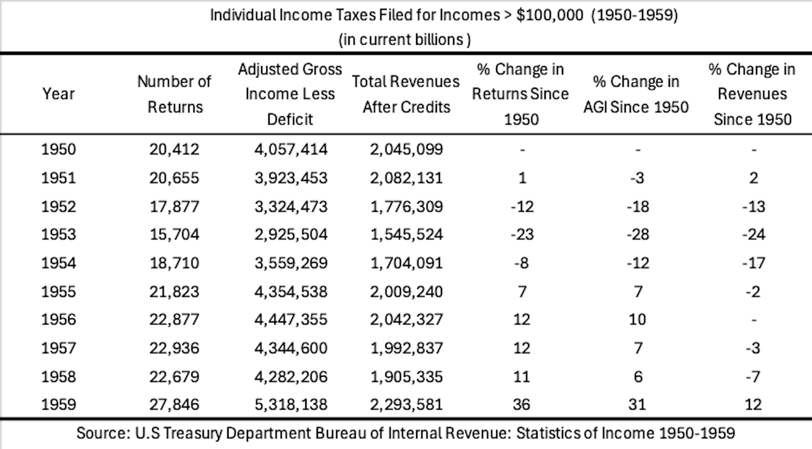
Table 13.1
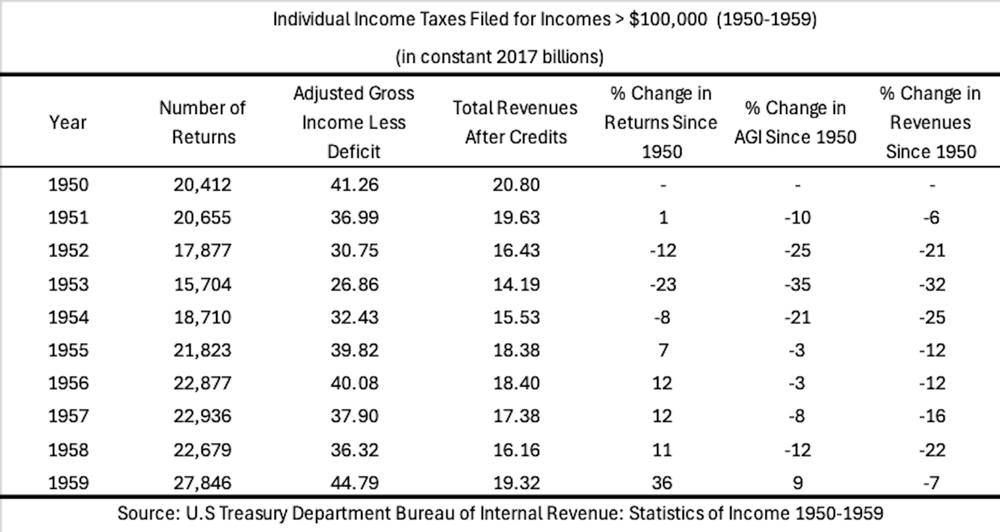
Several features of these tables warrant closer inspection. The absence of observable bracket creep among top incomes during the 1951 inflation spike (7.9 percent annual rate) suggests that reported income at the top had already become largely decoupled from nominal growth. Even as reported top incomes rose through the late 1950s, receipts did not keep pace. High marginal rates discouraged taxable exposure, and the postwar code—systematized in 1954—made deferral and incorporation increasingly attractive. A comparison of high-income filers in 1950 and 1959 is particularly revealing. In 1959, roughly 7,400 additional returns were filed, real AGI was higher, yet revenue was lower. This episode followed the 1958 recession, when profits and capital gains rebounded strongly, but the muted revenue response underscores the behavioral effects of high marginal rates—deferral, incorporation, and selective realization—that persisted throughout the decade. These distortions were cited explicitly by Kennedy’s Treasury as justification for rate reform in 1963.
Once again, the high marginal tax rates of the 1950s appear misaligned with the incentive structure required to translate economic growth into reported top-end income and revenue. Despite strong aggregate performance in years such as 1950–51, 1955, and 1959, reported income and tax payments at the top of the distribution remained largely flat. Data from the fourteen years preceding 1964 show remarkable stability in the number of filers, adjusted gross income, and total revenue collected from tax units earning above $100,000. As previously shown in Figures 2 and 3, reported top incomes had remained persistently depressed in every year since 1916 outside the brief window following the Mellon reforms. It is therefore difficult to attribute the sharp acceleration in top-end reporting after 1964 to coincidence, given that it occurred immediately following substantial reductions in top marginal rates.
Although revenue outcomes are not the primary metric of economic performance, they were explicitly cited by Kennedy. In that context, contemporaneous forecasts issued by the Bureau of the Budget (later the Office of Management and Budget) provide an additional point of reference. These projections were not fixed forecasts made prior to reform, but rolling estimates updated annually by the Bureau of the Budget as part of the federal budget process. In the year immediately preceding the cuts, the Bureau’s projection exceeded actual revenue by $6.9 billion. For each of the four years following the Revenue Act of 1964, however, its estimates fell well short of realized receipts—by a cumulative $23.6 billion between 1964 and 1967, with individual income tax revenue undershot by $15.7 billion. Taxpayer behavior adjusted in ways that static revenue projections were not designed to capture. While the projections assumed that individual receipts would drop mechanically in line with the rate decrease, this is not what transpired. There was a real individual revenue increase in 1964 followed by a slight drop in 1965, but this occurred as the top strata receipts increased significantly. Even as the Bureau revised its forecasts annually to incorporate the latest data, projections continued to undershoot realized receipts through the mid-1960s
Table 1448
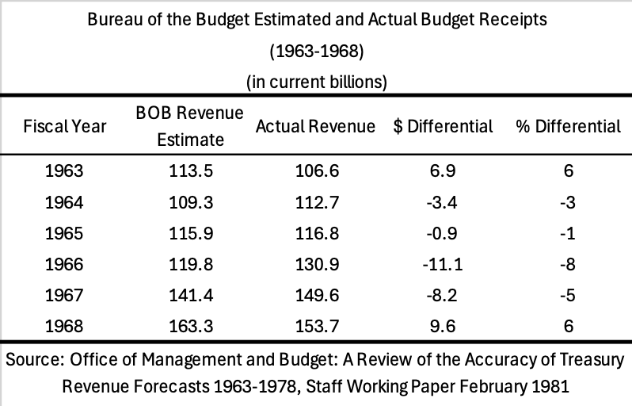
After four consecutive years of revenue underprojection, the Bureau did not overestimate receipts again until 1968—coinciding with the enactment of a temporary 10 percent surtax—when its forecasting assumptions shifted abruptly. This episode highlights the fragility of static revenue forecasting in periods of structural tax change. Projections that hold taxpayer behavior constant implicitly assume that changes in statutory rates do not alter reporting, realization, or participation decisions—an assumption that the historical record challenges. During periods of rate reduction, static models systematically understated revenues by failing to anticipate behavioral expansion of the tax base.
In 1968, despite robust output growth and rising nominal individual income tax receipts, total federal receipts declined in real terms. A surge in capital-gains realizations temporarily inflated nominal collections, but accelerating inflation eroded their real value. At the same time, corporate tax receipts contracted sharply, offsetting gains elsewhere. This divergence reflects the extent to which short-run revenue movements reflect compositional and timing effects rather than changes in underlying economic capacity. Moreover, the year 1968 exposed a rational behavioral mechanism that would recur in later decades. Anticipation of higher future capital gains taxation prompted an extraordinary acceleration of realizations, producing a record year relative to GDP that would not be exceeded until 1985. As in subsequent episodes, the surge proved transitory, reflecting intertemporal shifting rather than a durable increase in taxable capital income. Short-run revenue responses of this kind are neither evidence of nor refutation against the long-run effects of tax policy on economic growth, which depend on sustained incentives rather than transitional timing effects.
Returning to the mechanics of the Revenue Act of 1964, it has been claimed that cutting taxes to sustain an expansion, rather than to counter a recession, was unique to the Kennedy program. Yet the Revenue Acts of 1924 and 1926 were enacted under similar circumstances—a healthy economy and the conviction that improved incentives could enhance, not merely sustain, performance. A related assertion is that the 1964 cuts functioned as Keynesian-style stimulus, reinforced by contemporaneous increases in domestic spending. A demand-stimulus interpretation would imply declining revenues and an expansion of public outlays—neither appears in the data. The historical record allows these claims to be tested empirically
President Kennedy pointedly rejected the claim that his tax program was intended as a deficit-financed stimulus. In his December 1962 address to the Economic Club of New York, he stated:
But the most direct and significant kind of Federal action aiding economic growth is to make possible an increase in private consumption and investment demand--to cut the fetters which hold back private spending. In the past, this could be done in part by the increased use of credit and monetary tools, but our balance of payments situation today places limits on our use of those tools for expansion. It could also be done by increasing Federal expenditures more rapidly than necessary, but such a course would soon demoralize both the Government and our economy. If Government is to retain the confidence of the people, it must not spend more than can be justified on grounds of national need or spent with maximum efficiency.
In short, to increase demand and lift the economy, the Federal Government’s most useful role is not to rush into a program of excessive increases in public expenditures, but to expand the incentives and opportunities for private expenditures.
Other national problems, moreover, will be aided by full employment. It will encourage the location of new plants in areas of labor surplus and provide new jobs for workers that we are retraining and facilitate the adjustment which will be necessary under our new trade expansion bill and reduce a number of government expenditures.
Nevertheless, as Chairman Mills of the House Ways and Means Committee pointed out this week, the size of the deficit is to be regarded with concern, and tax reduction must be accompanied, in his words, by "increased control of the rises in expenditures." This is precisely the course we intend to follow in 1963.49
Kennedy’s emphasis on private investment, expenditure restraint, and the limits of deficit spending contrasts sharply with later characterizations of the 1964 tax cut as a countercyclical, demand-driven measure. A month later, in his Special Message to the Congress on Tax Reduction and Reform (January 24, 1963), he clarified his position:
It would be a grave mistake to require that any tax reduction today be offset by a corresponding cut in expenditures. In my judgment, I have proposed the minimum level of Federal expenditures needed for the security of the Nation, for meeting the challenge facing us in space, and for the wellbeing of our people. Moreover, the gains in demand from tax reduction would then be offset—or more than offset—by the loss of demand due to the reduction in Government spending. The incentive effects of tax reduction would remain, but total jobs and output would shrink as Government contracts were cut back, workers were laid off and projects were ended.
On the other hand, I do not favor raising demand by a massive increase in Government expenditures. In today’s circumstances, it is desirable to seek expansion through our free market processes—to place increased spending power in the hands of private consumers and investors and offer more encouragement to private initiative. The most effective policy, therefore, is to expand demand and unleash incentives through a program of tax reduction and reform, coupled with the most prudent possible policy of public expenditures.50
The 1964 tax cut is often framed as a Keynesian initiative, with emphasis placed on Kennedy’s assertion that tax reductions need not be matched by immediate spending cuts, while giving less attention to the incentive-oriented design and longer-run supply considerations embedded in the legislation. From this, it is inferred that the economy exhibited “slack” and that the tax cut therefore operated as countercyclical stimulus. Neither inference establishes mechanism. Measures of economic slack—output gaps, capacity utilization, and related estimates—are inherently model-dependent and uncertain ex ante. For that reason, the presence of slack does not, by itself, identify whether subsequent expansion reflects demand-driven stimulus or incentive-induced changes in work, investment, and reporting behavior. To treat any tax reduction enacted during a period later judged to exhibit slack as inherently countercyclical risks collapsing the distinction between stabilization and incentive reform and substitutes classification for causal demonstration.
Kennedy’s statements clarify the logic of his program. In this context, “demand” did not denote government expenditure as an autonomous source of spending, but to the private side of every transaction—consumption and investment—whose magnitude is shaped by after-tax incentives rather than by public outlays. Demand effects and incentive effects are not mutually exclusive; the question is which mechanism predominated. The experience following the Revenue Act of 1964 reinforces this logic: revenue outcomes cannot be inferred from statutory rate changes alone, but depend critically on timing, income composition, and behavioral response—precisely the mechanisms illustrated in the preceding tables. Table 15 extends this view to the broader fiscal mechanics of the decade.
Table 15
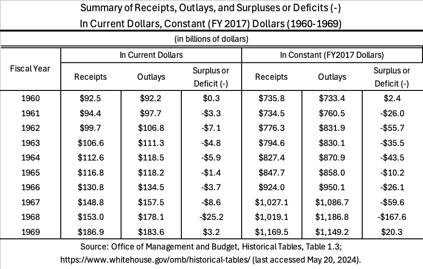
If the post-1964 expansion had been driven chiefly by short-run, deficit-financed fiscal stimulus, we would expect the policy environment to exhibit characteristics typical of demand-management episodes: a deliberate reliance on public borrowing to elevate aggregate spending, temporary relief calibrated to cyclical conditions, and revenue performance broadly consistent with static rate reductions absent strong base effects. The historical record does not align with that pattern. Revenues rose in real terms, the federal revenue share of GDP increased, and growth was accompanied by expanding private activity without immediate inflationary absorption of nominal gains. Only toward the end of the decade, as fiscal and monetary policy shifted, did those relationships deteriorate.
The stated philosophy and observed mechanics are more closely aligned with the economic logic that would later be described as “supply-side,” although that terminology did not emerge until the 1970s. Because the term has often been caricatured in subsequent debates as endorsing tax cuts without accompanying spending discipline, it is important to recall the analytical logic that originally motivated it. As Alan Reynolds explained, “Supply-side tax policy is about raising tax revenues in ways that do the least damage to the private economy. Spending cuts are entirely consistent with supply-side theory because (1) transfer payments that phase out with rising income are a disincentive to work and (2) government purchases divert real resources into unproductive uses.” 51
GDP growth was robust in 1962, and federal receipts had already begun accelerating prior to the enactment of the Revenue Act of 1964. These developments coincided with the implementation of the Revenue Act of 1962, alongside cyclical recovery and broader structural forces, making it difficult to disentangle incentive effects from contemporaneous macroeconomic dynamics. The 1964 tax reform therefore operated on an economy already in expansion rather than initiating the upswing itself, a pattern consistent with the mid-1920s reforms. At the same time, the postwar economy had experienced earlier output surges in 1955 and 1959 that failed to develop into sustained growth. It was this pattern of episodic acceleration followed by stagnation that informed Kennedy’s emphasis on tax reform as a means of reinforcing durable expansion rather than relying on recurrent stimulus alone. In that context, the fiscal easing associated with the Revenue Act of 1964 helped extend and stabilize an expansion that might otherwise have proven transient.
Although Kennedy did not live to see the 1964 tax program carried into effect, the spending pattern of 1964–65 remained consistent with the policy framework he had articulated. The subsequent upswing in federal outlays reflected the Vietnam buildup rather than any contemporaneous departure from that design. Defense accounted for the largest share of the 1966 increase, but several civilian agencies—including Health and Human Services, Education, NASA, and Social Security—also expanded during this period, indicating that rising expenditures were not confined to military commitments.
This pattern is instructive. The major Great Society initiatives of the late 1960s were not legislatively linked to the Revenue Act of 1964 and were conceptually distinct from its design. Subsequent revenue growth and strong economic performance appear to have encouraged Congress to undertake additional domestic commitments. In that sense, the sequence aligns with Kennedy’s own argument that lower marginal rates would stimulate growth and expand the revenue base—while also illustrating a recurring feature of U.S. fiscal history: when revenues rise, they are often treated as usable fiscal capacity rather than as an opportunity for balance. Table 16 provides the agency-level detail.
Table 16
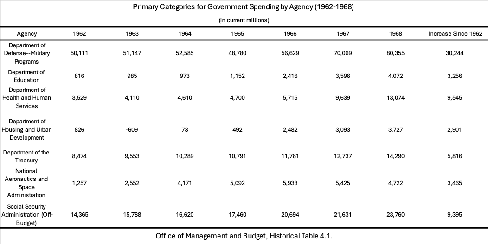
One notable distinction between the Kennedy tax cuts and those of the 1920s, or of later reforms, is the limited relief provided to the least affluent. Rates fell across all brackets, but personal exemptions—unchanged since 1948—and the standard deduction remained fixed in nominal terms. While the largest statutory rate reductions occurred at the top, the distributional effects of the 1964 tax program were more balanced than the schedule alone might suggest. Even without targeted provisions, the share of the federal tax burden borne by these groups declined over the latter half of the decade as real income gains moved many tax units into higher brackets. Table 17 shows the pronounced reduction in the relative burden on lower-income tax units following the Revenue Act of 1964. For context, per capita personal income was approximately $2,752 and median family income about $6,600 in 1964.52
Table 17

Table 17.1

The Revenue Act of 1964 was not intended to alleviate poverty or redistribute income, but to alter taxpayer behavior by improving incentives for work, investment, and productive activity. As capital is committed to new plants and enterprises, the earliest observable effects typically appear in hiring and production, with rising labor demand lifting wages. The marked decline in filers reporting under $5,000 after 1964 aligns with expansion-driven income gains rather than alterations to filing requirements. Many tax units moved out of the lowest income bracket, while those who remained faced substantially lower liabilities under the new rate schedule.
Although President Johnson made enactment of Kennedy’s tax program a top priority, he approached it as a political expedient, useful for securing early legislative momentum and advantageous for the 1964 campaign. His view of the cuts as a near-term measure contrasted with Kennedy’s aim of a lasting restructuring of fiscal policy. Speaking to the Economic Club of New York in December 1962, Kennedy made clear that he was not seeking a transient stimulus:
I am not talking about a “quickie” or a temporary tax cut, which would be more appropriate if a recession were imminent. Nor am I talking about giving the economy a mere shot in the arm, to ease some temporary complaint. I am talking about the accumulated evidence of the last 5 years that our present tax system, developed as it was, in good part, during World War II to restrain growth, exerts too heavy a drag on growth in peace time; that it siphons out of the private economy too large a share of personal and business purchasing power; that it reduces the financial incentives for personal effort, investment, and risk-taking.53
These statements further clarify the fiscal tenets that accompanied the general policy environment of the early 1960s, when monetary discipline remained a central objective. Johnson gradually moved away from that framework. During his presidency, pressure for easier credit coincided with an acceleration in liquidity that accommodated rapidly rising federal outlays—roughly 38 percent higher in real terms between 1965 and 1968.54 The resulting policy mix departed sharply from the earlier emphasis on monetary restraint paired with growth-oriented taxation.
A temporary surcharge was introduced under the Tax Adjustment Act of 1966 as a limited demand-management measure. It raised effective tax burdens by applying a proportional add-on to computed liabilities, without altering statutory marginal rate schedules or income brackets. The Revenue and Expenditure Control Act of 1968 marked the first explicit and comprehensive countercyclical consolidation. Signed that June, the act paired general tax increases with spending restraint, imposing a temporary 10-percent income tax surcharge on individual and corporate liabilities and effectively reversing much of the Kennedy-era rate relief.
This sequence aligns closely with the countercyclical fiscal doctrine articulated by Paul Samuelson, who argued that when private investment rises excessively, government should compensate through higher taxes and restrained expenditures. The policies adopted in 1968–1969 broadly reflected that logic: federal taxes were raised, the growth of expenditures slowed and then reversed, and the budget moved into surplus by 1969. This tightening offset a substantial portion of the earlier impetus from the 1964 tax reductions and marked a clear departure from the policy framework that had supported the mid-decade expansion. Economic conditions deteriorated soon thereafter. By 1970, unemployment had risen, real GDP growth slowed to near zero, and inflation continued to accelerate.
The difficulty with attributing the Revenue Act of 1964 to this countercyclical framework is chronological as much as theoretical. There was no depression or recession when the act was proposed or enacted. Kennedy’s program was intended to reinforce an ongoing expansion by improving incentives and expanding productive capacity—not to restrain a boom or counteract “overheating.” The conditions to which Samuelson’s prescription applied simply did not exist in 1963–1964.
As Kennedy stated plainly in his 1962 address to the Economic Club of New York:
Our true choice is not between tax reduction, on the one hand, and the avoidance of large Federal deficits on the other. It is increasingly clear that no matter what party is in power, so long as our national security needs keep rising, an economy hampered by restrictive tax rates will never produce enough revenue to balance our budget just as it will never produce enough jobs or enough profits. Surely the lesson of the last decade is that budget deficits are not caused by wild-eyed spenders but by slow economic growth and periodic recessions, and any new recession would break all deficit records.
In short, it is a paradoxical truth that tax rates are too high today and tax revenues are too low and the soundest way to raise the revenues in the long run is to cut the rates now. The experience of a number of European countries and Japan have borne this out. This country's own experience with tax reduction in 1954 has borne this out. And the reason is that only full employment can balance the budget, and tax reduction can pave the way to that employment. The purpose of cutting taxes now is not to incur a budget deficit, but to achieve the more prosperous, expanding economy which can bring a budget surplus.
I repeat: our practical choice is not between a tax-cut deficit and a budgetary surplus. It is between two kinds of deficits: a chronic deficit of inertia, as the unwanted result of inadequate revenues and a restricted economy; or a temporary deficit of transition, resulting from a tax cut designed to boost the economy, increase tax revenues, and achieve--and I believe this can be done--a budget surplus. The first type of deficit is a sign of waste and weakness; the second reflects an investment in the future.55
Kennedy’s reasoning stood in contrast to the stabilization framework advanced in postwar Keynesian textbooks, which emphasized deliberate fiscal restraint during periods of prosperity. While Samuelson acknowledged that revenues rise automatically during expansions, his model centered on discretionary tax increases and spending restraint to temper growth. With the exception of the modest and temporary surcharge in 1966, fiscal conditions from 1964 through 1967 moved in the opposite direction; revenues rose because growth accelerated following rate reductions, not because policymakers tightened fiscal policy.
A genuinely countercyclical shift occurred only in 1968, when taxes were raised and expenditures restrained in accordance with the compensatory doctrine. That shift preceded—not followed—the subsequent slowdown. The empirical record therefore distinguishes between the incentive-based framework under which the mid-decade expansion unfolded and the stabilization logic that governed policy at the decade’s end.
Following the Revenue Acts of 1962 and 1964, the U.S. economy sustained an expansion at a pace not previously observed in peacetime. While demographic growth, education, and technological progress contributed to this outcome, fiscal and monetary stability were central in converting those structural advantages into durable gains. The expansion unfolded within the policy mix Kennedy outlined, while the subsequent slowdown coincided with departures from that framework. Table 18 summarizes the principal indicators of economic performance throughout the decade.
Table 18
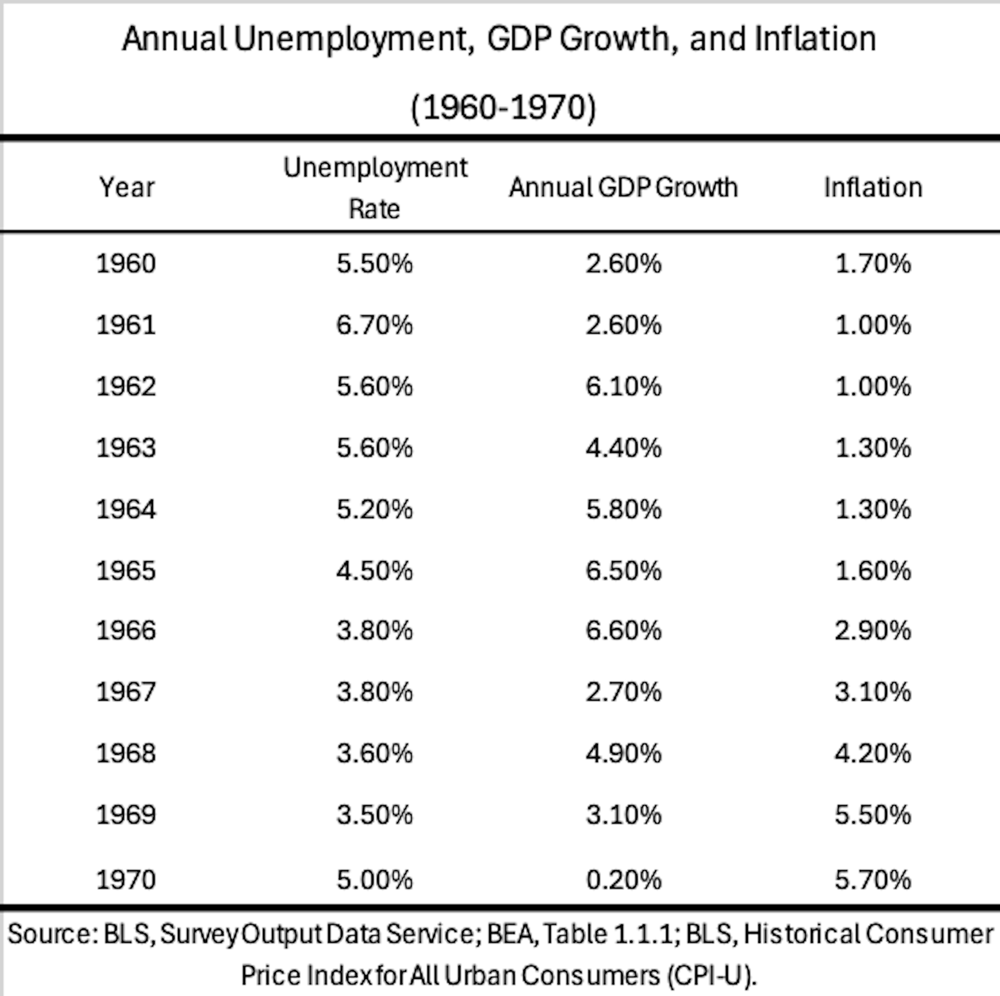
Paul Samuelson’s postwar textbook exerted wide influence, and his contributions to the study of economics were substantial. His articulation of countercyclical compensatory policy is discussed here because Heller and Blinder later attributed the intellectual origins of the Revenue Act of 1964 to the Keynesian framework popularized in postwar textbooks—an attribution that is not supported by the contemporaneous record, the stated rationale of the act, or the mechanics of the legislation itself. Kennedy’s statements on taxation and economic growth drew on a long-standing tradition that emphasized incentives, investment, and the productive use of capital. Viewed in that context, the continuity is evident: Kennedy’s logic drew from an established analytical lineage that later came to be described—though not at the time labeled—as supply-side economics.
Alan Reynolds summarizes the framework succinctly: “The supply-side innovation, from Nobel Laureate Bob Mundell, was to suggest that (1) monetary policy is the right tool to keep inflation in check, and (2) the focus of tax policy should be shifted from short-term accounting results (deficits) toward improving longer-term incentives for productive work and investment. The first part of that package is actually monetarist, and neither part ever ceases to be relevant to inflation and economic growth, respectively.” 56
The difficulties of the late 1960s and 1970s are more plausibly associated with a retreat from mid-decade fiscal and monetary discipline, compounded by major external shocks, than with Kennedy’s earlier policy approach. The policy mix later associated with Robert Mundell—fiscal ease paired with monetary restraint—had antecedents in the 1920s and was realized again in the 1980s. The term “supply-side economics” did not enter common usage until the late 1970s and has since become entwined with political debates, but the mechanism it describes is neither new nor unique to any later period. Its central elements trace back through Kennedy and Mellon to the classical economists of the eighteenth century, whose analyses emphasized incentives, production, and the efficient allocation of capital. Analyses that confine supply-side theory to statutory tax changes alone omit a central component of its logic. Fiscal incentives operate within a monetary framework that shapes credit conditions, capital formation, and the translation of incentives into real activity; abstracting from this interaction leaves the analysis incomplete.
Ronald Reagan and The Economic Recovery Tax Act of 1981
Upon President Ronald Reagan taking office in 1981, the economy stood at the center of the new administration’s agenda. Reagan and his advisers inherited a profound economic crisis that persisted for most of the prior decade. The late 1970s had been defined by a policy mix directly at odds with the framework that had guided the Kennedy program: loose monetary policy, steadily rising effective tax burdens through bracket creep, and expanding federal outlays. The result was a sustained period of economic deterioration. Output slowed, real incomes stagnated, and the country endured the damaging combination of high unemployment and high inflation—stagflation. By 1980, the term itself understated the severity of conditions; the economy had begun to contract even as inflation accelerated to among the highest sustained peacetime levels in American history, leaving many Americans struggling simply to maintain their standard of living. Table 19 illustrates the depth and duration of this crisis and the economic environment confronting the Reagan administration on taking office.
Table 19
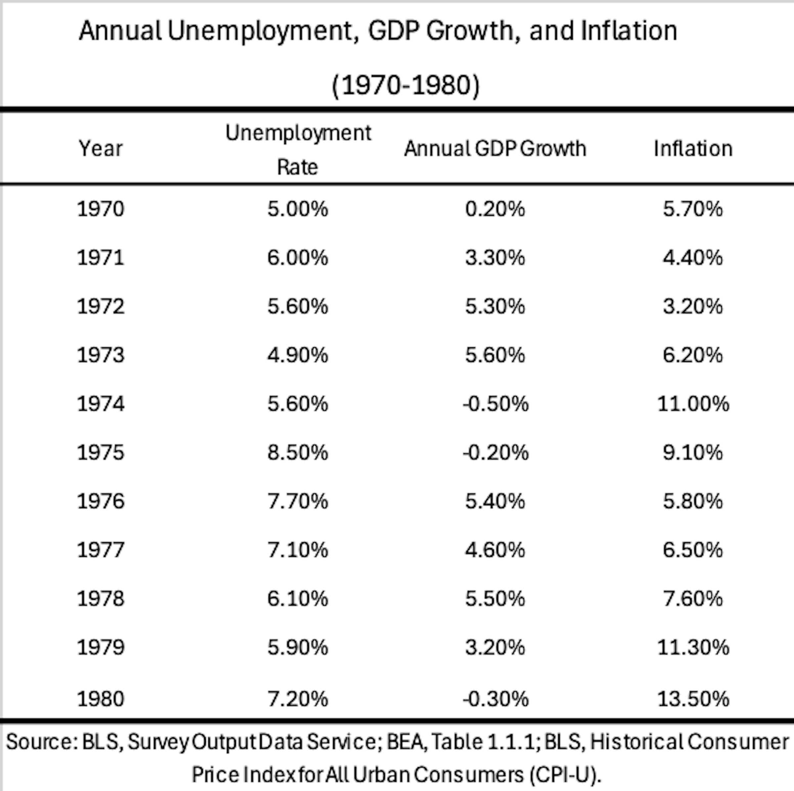
The incoming president framed these conditions in his Inaugural Address on January 20, 1981, emphasizing both their human cost and the time required to reverse them: “The business of our nation goes forward. These United States are confronted with an economic affliction of great proportions. We suffer from the longest and one of the worst sustained inflations in our national history. It distorts our economic decisions, penalizes thrift, and crushes the struggling young and the fixed-income elderly alike. Idle industries have cast workers into unemployment, human misery, and personal indignity. Those who do work are denied a fair return for their labor by a tax system which penalizes achievement and keeps us from maintaining full productivity. The economic ills we suffer have come upon us over several decades. They will not go away in days, weeks, or months, but they will go away.” 57
These concerns reflected the prevailing economic conditions rather than mere rhetoric. By the end of the 1970s, the federal income tax was being administered under statutory rates that had not permanently changed since the Revenue Act of 1964, even as the economic context shifted dramatically. The Tax Reform Act of 1969 introduced a 50 percent maximum marginal rate on income classified as “earned,” but the scope was narrow, its interaction with existing shelters and income reclassification muted any impact on actual liabilities, and it left most ordinary investment income—such as interest and dividends—subject to rates up to 70–77 percent. It did not generate clearly measurable behavioral or revenue effects comparable to earlier or later tax reforms.
Throughout the 1970s, persistent inflation—combined with an unindexed rate schedule—pushed tax units into higher nominal brackets without corresponding gains in real income. Effective tax burdens rose mechanically, through bracket creep, rather than through deliberate legislative choice. Table 20 and Table 21 present high income returns between 1970 and 1978.
Table 20
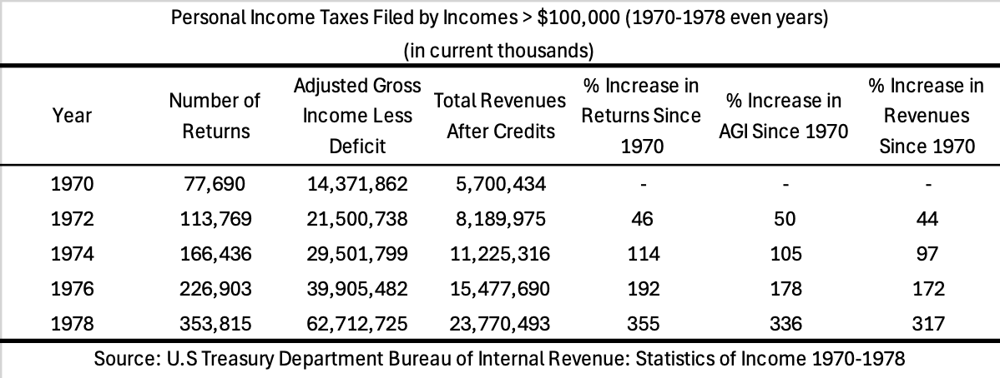
Table 20.1
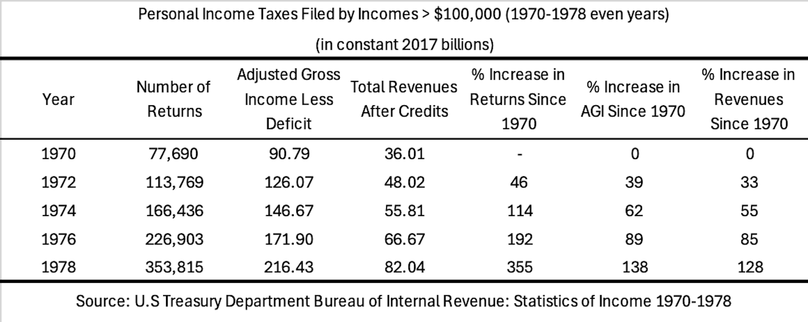
In nominal terms, the percentage increase in tax units and adjusted gross income bore nearly a one-to-one relationship. Measured in real terms, however, the 1970s saw adjusted gross income rise by only 41 percent of the increase in the number of returns—a pattern reminiscent of the postwar 1950s, when real AGI actually contracted despite a larger filing base. However, the figures are not directly comparable. The earlier distortion arose from avoidance behavior induced by confiscatory rates; in the 1970s, similar responses persisted but were compounded by inflation and nominal bracket drift. Both episodes show how a static rate structure, whether the rigid postwar schedule or unindexed brackets, separated reported income from the real economy.
By contrast, the same relationship measured 81 percent from 1960 to 1968, 90 percent from 1980 to 1988, and 80 percent from 1992 to 2000—periods when rate structures were better aligned with real growth. This occurred when inflation was relatively subdued, and, after 1985, brackets were indexed to maintain that alignment. While this relationship provides a useful indicator of how closely the tax code tracks underlying economic conditions, it is shaped by changes in filer composition, capital gains realizations, demographic shifts, and evolving definitions of taxable income. These influences do not negate the pattern but caution against treating the ratios as a pure behavioral metric. Table 21.1 further illustrates this dynamic.
Table 21
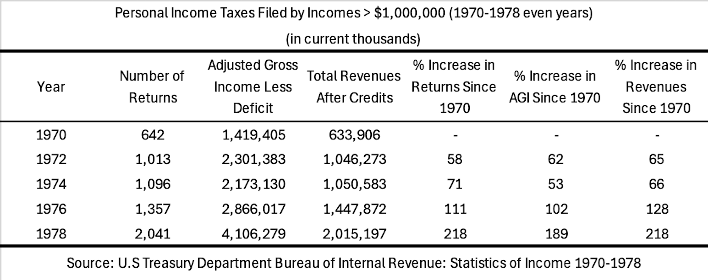
Table 21.1
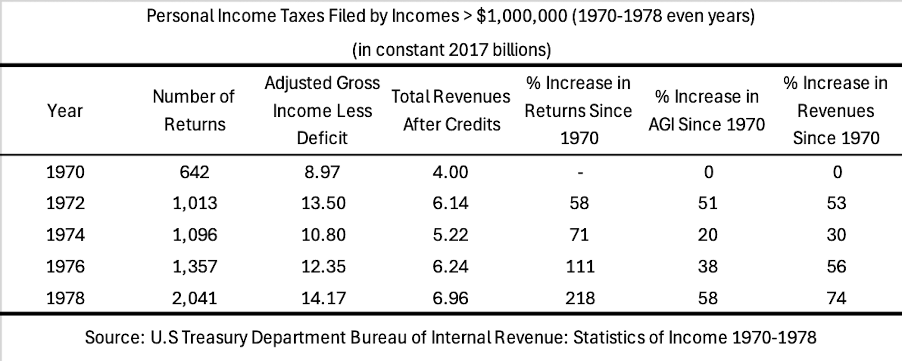
These figures indicate that the apparent buoyancy of late-1970s income tax receipts was largely an artifact of inflation interacting with an unindexed code. A marked increase in top end filers did not produce proportionately higher real AGI or revenues; instead, inflation eroded the real value of exemptions and brackets, pulling tax units upward and distorting the distribution of reported income. The later implementation of rate reductions and the adoption of indexation were, in this sense, not simply tax cuts but a correction of a system whose nominal structure had drifted far from real economic conditions.
President Reagan explained the mechanics of bracket creep in 1981: “For all practical purposes, this was the equivalent of taxes being significantly raised every year. Bracket creep is an insidious tax. Let me give an example. If you earned $10,000 a year in 1972, by 1980 you had to earn $19,700 just to stay even with inflation. But that's before taxes. Come April 15th, you'll find your tax rates have increased 30 percent. Now, if you've been wondering why you don't seem as well-off as you were a few years back, it's because government makes a profit on inflation. It gets an automatic tax increase without having to vote on it. We intend to stop that.” 58 A central objective of the Economic Recovery Tax Act of 1981 (ERTA) was thus not only to reduce marginal rates but to end bracket creep by indexing the tax system to inflation beginning in 1985. In effect, Reagan sought to close a structural feature of the tax code—one that expanded federal fiscal capacity at the expense of taxpayers and concealed a rising tax burden behind unchanged nominal rates.
Because the prevailing monetary regime sets the binding constraints under which both fiscal and monetary policy operate, it is important to frame the general landscape of monetary policy. With President Richard Nixon’s closure of the gold window in 1971, the United States fully abandoned the Bretton Woods system and the dollar’s gold convertibility. Freed from that external discipline, the Federal Reserve gained far greater latitude over monetary policy. Nominal conditions shifted repeatedly as policymakers alternated between restraint and accommodation: when inflation accelerated, the Fed briefly tightened; when it appeared to ease, policy quickly reversed course. Although its stability was increasingly questioned, the Phillips Curve remained influential during the 1970s, and policymakers repeatedly attempted to manage inflation and unemployment within a perceived short-run tradeoff framework. Inflation in the 1970s reflected both real shocks and repeated policy accommodation; what mattered for the tax system was not the initial impulse, but the persistence of nominal instability, which is clearly visible in the behavior of monetary aggregates and other nominal indicators.
The consequences were severe. Inflation expectations became unanchored, price instability compounded real economic stagnation, and capital fled to hard assets. Gold, trading around $38 per ounce in early 1971, rose to roughly $653 per ounce by January 1980—a seventeen-fold nominal increase and a stark market verdict on monetary credibility. Gold briefly spiked to $850 intraday that month, reflecting acute inflation anxiety. By the end of the decade, inflation remained above ten percent despite repeated anti-inflation measures, wage-price controls, and political assurances that relief was imminent.
Following President Jimmy Carter’s appointment of Paul Volcker as Federal Reserve Chair in 1979, the policy regime began to shift. Volcker viewed inflation as a structural problem requiring restored monetary discipline. In October 1979, the Federal Reserve altered its operating procedures, moving away from interest-rate smoothing toward reserve-based targets, allowing short-term rates to adjust as needed. Although the Fed never achieved precise control over money growth, the shift signaled a credible commitment to disinflation. As policy tightened through 1980–81, inflation expectations gradually broke—a painful but ultimately successful correction. The 1979–82 period became known as the Federal Reserve’s “monetarist experiment.”
The Federal Reserve operates independently, but the success of its disinflation policy required political backing. The incoming Reagan administration understood that restoring price stability would entail recession, high interest rates, and considerable short-term hardship, but it supported the effort nonetheless.59 That political alignment reduced pressure on the Federal Reserve to reverse course prematurely and allowed monetary restraint to persist long enough to reanchor inflation expectations. Inflation was reversed not by chance but through sustained monetary discipline. Incentive-based fiscal reforms would operate on a separate margin, supporting productivity, investment, and growth once the end of accelerating inflation had been achieved.
With the Federal Reserve imposing monetary restraint, fiscal policy debates returned to the legislative arena. The intellectual and political reorientation toward tax reform had begun before Reagan’s election. In 1978, President Carter signed legislation reducing the top statutory capital gains rate from 49 percent to 28 percent, reflecting a growing recognition that elevated rates were discouraging investment and constraining longer-term job creation. Against this backdrop, Representative Jack Kemp and Senator William Roth advanced sweeping marginal rate reductions, first introduced in 1977 and debated throughout 1978. The proposal gained visibility but did not advance to enactment amid congressional opposition and persistent concerns over inflation and deficits. Nonetheless, it provided the legislative template for the reforms that soon followed.
Many economists viewed the Kemp-Roth tax cuts with caution. In 1978, the Congressional Budget Office voiced concerns, warning: “The fundamental issue arising from a commitment to Roth-Kemp tax cuts can be stated simply: Will the growth in productive capacity induced by greater incentives to work, save, and invest be large enough and rapid enough to prevent widespread shortages and accelerated inflation? The available evidence provides no reason for an optimistic answer to this question.” 60 Such views affirmed the uncertainties surrounding major fiscal reform when both inflation and unemployment were at modern highs.
The economic turmoil of the 1970s translated into electoral change. After enduring rising prices, eroding real wages, and repeated policy failures, voters signaled a decisive shift in 1980. Ronald Reagan won a commanding victory, Republicans gained significant ground in the House, and—for the first time since 1955—secured a majority in either chamber by taking the Senate. That twenty-six-year lapse in Republican control is notable, as it underscores the magnitude of the shift; fiscal reform now had both electoral legitimacy and a viable legislative path. This realignment, combined with sustained advocacy from supply-side proponents and Reagan’s own commitment to tax reform, created the conditions in which the Kemp–Roth framework could finally be enacted. These forces converged in the Economic Recovery Tax Act of 1981, making fundamental tax reform both politically feasible and economically necessary.
President Reagan articulated the core of his economic program to Congress in February 1981. He argued that spending restraint and comprehensive rate reductions had to proceed together if recovery was to take hold, and that restoring incentives was essential to job creation and renewed productivity. The proposed 30-percent phased reduction, he stressed, was not a giveaway but a correction—an offset to the automatic tax increases embedded in an unindexed code. Unlike prior reforms that shifted liabilities among different groups, the administration presented its plan as an equal, across-the-board rate cut designed to broaden prosperity by improving incentives for work, saving, and investment—expanding opportunities for all Americans.61
The Economic Recovery Tax Act originated in the Democratic-controlled House and ultimately passed both chambers with large bipartisan majorities on final conference adoption in August 1981 (House 282–95; Senate 67–8), underscoring that the shift toward marginal-rate reduction extended beyond partisan alignment.62 The act followed the same principles evident in earlier episodes of successful tax reform: broad, across-the-board marginal rate reductions, with the largest percentage decreases applied to the highest brackets. The purpose was to restore incentives to work, save, and invest, redirect capital toward productive activity, and promote economic expansion.
Although the administration originally proposed a 30-percent across-the-board reduction in marginal personal rates, the enacted measure yielded a phased-in 25-percent reduction in overall individual tax liability between 1981 and 1983. The statutory rate schedule (Table 22) shows that marginal rates declined unevenly across brackets, generally between 16 and 28 percent, reflecting the mechanics of the phase-in and bracket adjustments rather than a uniform percentage cut.
ERTA’s major provisions included comprehensive reductions in marginal income tax rates, inflation indexing, and measures to encourage capital formation. The top marginal rate, previously 70 percent, fell to 50 percent effective January 1, 1982. All other brackets received reductions totaling 25 percent, phased in as a 5-percent cut on October 1, 1981, followed by 10-percent cuts in mid-1982 and mid-1983. Beginning in 1985, tax brackets were indexed to inflation, ending the bracket-creep mechanism that had raised effective tax burdens throughout the 1970s. The capital gains rate was reduced from 28 percent to
20 percent, extending the shift toward lower taxation of investment returns begun in 1978. The act also introduced the Accelerated Cost Recovery System (ACRS), shortening depreciation schedules and expanding investment incentives, including rehabilitation credits for older structures.
In his first address to a joint session of Congress, Reagan laid out a comprehensive economic agenda: “The plan consists of four parts: (1) a substantial reduction in the growth of Federal expenditures; (2) a significant reduction in Federal tax rates; (3) prudent relief of Federal regulatory burdens; and (4) a monetary policy on the part of the independent Federal Reserve System which is consistent with those policies.” 63 These four priorities soon became known collectively as “Reaganomics,” reflecting their presentation as a unified economic program. In practice, three of the four were substantially implemented: Federal Reserve policy remained tight, marginal tax rates were reduced, and regulatory rollback continued (though not beyond the scale initiated in the late-Carter years). The fourth element, spending restraint, proved far more difficult. While some non-defense discretionary outlays slowed, overall expenditure growth was dominated by pre-existing entitlement commitments and the lagged effects of prior inflation.
Defense outlays also rose substantially but represented only one component of a broader and largely inherited spending trajectory. Even before ERTA’s enactment, President Reagan was adamant that restoring military capacity to keep pace with the Soviet Union was non-negotiable. He emphasized that “cutting” spending referred to slowing the rate of growth rather than reducing nominal levels: “An expanding population, a growing economy, and a difficult international environment all lead to the need for year-to-year rises in government spending. The effort to ‘cut’ the budget really refers to reducing the amount of increase in spending requested from one year to the next.” 64
The early 1980s brought a severe contraction, the deepest recession since the 1930s in terms of unemployment. This downturn, however, had roots predating President Reagan’s inauguration. Inflation had been running in double digits for nearly two years and peaked above 14 percent in 1980. To break the inflation cycle, the Federal Reserve implemented a forceful monetary contraction. The federal funds rate climbed into the high teens, and the prime rate exceeded 20 percent in late 1980.65
Nominal monetary conditions tightened sharply. Short-term rates were allowed to rise without restraint, credit conditions deteriorated, and growth in monetary aggregates slowed markedly. The adjustment was deliberate and severe, and its effects spread quickly through interest-sensitive sectors of the economy. The resulting recession was painful and reflected the monetary constraint required to restore price stability; the tax reforms were only beginning to influence behavior during this period.
This timing left monetary discipline operating without the offsetting fiscal expansion prescribed by the Robert Mundell framework. Indexing had not yet begun, and most marginal rate relief would not materialize until 1983. While counterfactuals must be framed cautiously, earlier and more complete rate reductions—combined with contemporaneous indexation—could plausibly have softened the downturn by strengthening labor supply and investment incentives at the outset of the tightening cycle. As implemented, the monetary contraction operated against a still-unreformed tax structure, with the full ERTA phase-in not yet in effect. This sequencing mirrors earlier reform episodes. As with the Revenue Act of 1964, reductions in individual tax rates trailed declines in business tax liabilities by several years. Firms thus faced improved incentives for production and investment before households experienced meaningful relief. The individual taxpayer—the ultimate consumer of goods and securities produced by business—remained constrained by high marginal rates and inflation-driven bracket effects during the early recovery phase. Table 22 reports the statutory individual rate changes as scheduled to take effect by mid-1983.
Table 22
The United States entered a severe recession beginning in July 1981 that lasted through November 1982. This was not a routine contraction; unemployment approached 11 percent, and interest-sensitive sectors such as manufacturing, construction, and autos were hit particularly hard. Public frustration mounted, and members of Congress increasingly demanded a change in policy direction. Yet the Federal Reserve, committed to breaking inflation, held firmly to its restrictive stance, and the Reagan administration did not attempt to interfere with monetary policy or abandon its fiscal strategy. As conditions worsened, political patience eroded. Many legislators had been skeptical of ERTA from the outset, and the tax cuts became a convenient explanation for the downturn—even though the recession was driven overwhelmingly by the monetary tightening necessary to reverse a decade of inflation. Mounting pressure in Washington set the stage for “corrective” legislation.
In September 1982, Congress enacted the Tax Equity and Fiscal Responsibility Act (TEFRA), often described at the time—based on Joint Committee static scores—as the largest peacetime tax increase in U.S. history. This characterization rested on projected rather than realized revenue effects and has frequently been misinterpreted as a reversal of the 1981 tax reforms. In practice, the act left ERTA’s marginal rate reductions and forthcoming indexing provisions entirely intact. Its changes fell primarily on depreciation rules, the investment tax credit, certain business deductions, and a set of excise tax and compliance provisions.
The Joint Committee estimated sizable revenue gains on a static basis, but the data tell a different story. As Table 29.1 will show, corporate receipts continued to decline in the recession’s aftermath, excise tax revenues fell in every year following enactment, and aggregate federal receipts in 1983 and 1984 remained suppressed by disinflation that restrained nominal income growth. TEFRA was therefore not a repudiation of ERTA’s rate structure but a mid-recession attempt to narrow projected deficits through base adjustments—an attempt whose actual revenue impact was modest relative to the far larger macroeconomic forces shaping fiscal totals.
Criticism of Reagan’s program was intense even before ERTA’s passage. Walter Heller rejected the idea that large marginal rate reductions would meaningfully expand output through supply-side channels. In his assessment:
Nothing in the history of tax cuts, econometric studies, studies of taxpayer responses, or field surveys of incentives suggests that the effects of a big tax cut on the supply of output even begin to match its effect on demand for output. A $114 billion tax cut… would simply overwhelm our existing productive capacity with a tidal wave of increased demand and sweep away all hopes of curbing deficits and containing inflation.66
Such warnings reflected the prevailing Keynesian view that large tax reductions would stimulate demand far more than supply. Yet the sequence that unfolded—steep disinflation first, followed by recovery alongside the phased-in rate reductions—offered a revealing contrast between theoretical expectations and observable outcomes. Sustained marginal rate cuts influence both sides of the economy: they raise incentives to work, save, and invest through higher after-tax returns, which in turn can support demand. ERTA, once fully phased in, delivered a permanent change in marginal rates rather than a temporary fiscal stimulus. The relevant question, therefore, is not whether tax cuts influence supply or demand, but how the balance of behavioral responses evolves over time. As the subsequent data show, labor supply, reported income, and capital formation all rose meaningfully as rates declined—results inconsistent with the prediction that supply responses would be negligible.
Concerns about rising deficits persisted after ERTA’s passage, and federal red ink did widen in the early 1980s. But deficits reflect both sides of the fiscal ledger. It is accurate to note that the tax reductions did not produce lower federal debt, yet it is equally necessary to account for spending growth and the effects of recession and disinflation on nominal tax bases. Much of the fiscal imbalance stemmed from the rise in outlays rather than a simple shortfall in revenues. Since 1960, the federal government has recorded budget surpluses in only six fiscal years—1960, 1969, and the four consecutive years from 1998 through 2001. This rarity underscores a persistent structural tendency for federal expenditures to outpace revenues across administrations and economic cycles, regardless of the prevailing tax regime. Even under static assumptions, higher pre-ERTA marginal rates could not have erased the fiscal gap; the scale of spending growth and the recession-driven contraction of nominal tax bases made that highly implausible within any possible rate structure. Table 23 shows total federal receipts and outlays across President Reagan’s two terms, illustrating the interaction between tax policy, spending decisions, and deficit outcomes.
Table 23
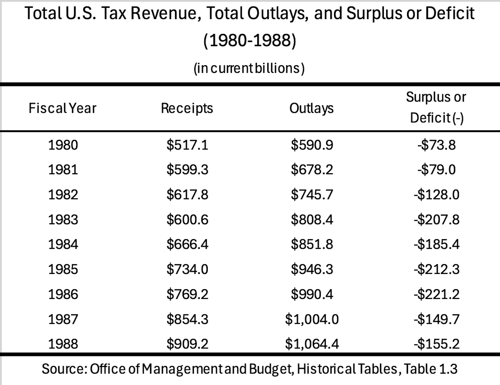
Table 23.1
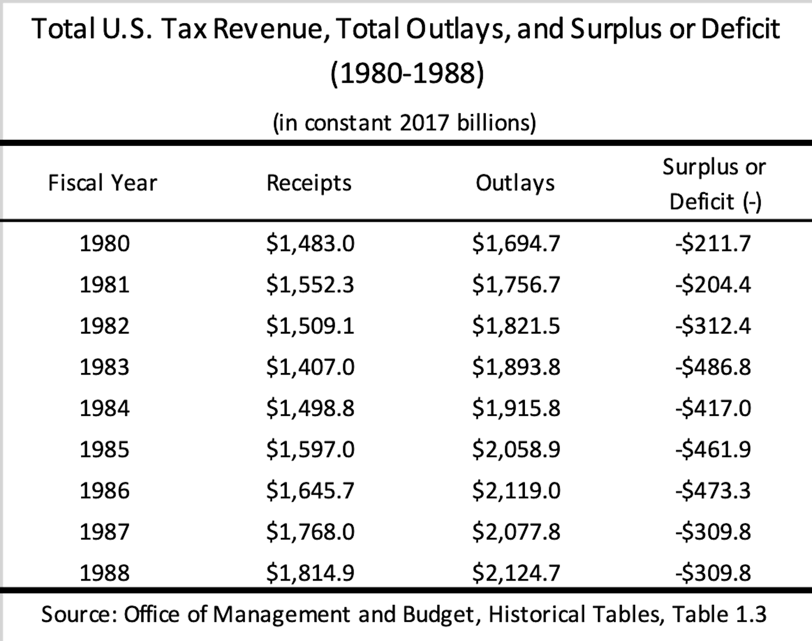
A review of real revenues shows that inflation-adjusted federal receipts were higher in 1981–82 than in 1980; a sustained real decline does not appear until 1983. This timing reflects the interaction of ERTA’s phased-in rate reductions, delayed bracket indexation, and the disinflationary collapse of nominal income growth. Through 1981 and into 1982, receipts remained elevated because the legacy of 1970s inflation continued to push tax units into higher nominal brackets even as statutory rates began to fall. Once disinflation took hold in mid-1982, nominal income growth slowed sharply and the inflation-driven support to revenues disappeared. The result was a delayed adjustment: revenues held up through 1982 and then fell in real terms in 1983 as recession, slower nominal income growth following disinflation, and the cumulative effect of ERTA’s rate reductions took hold. With stabilization and the full rate and indexation framework in place, revenue growth subsequently resumed alongside sustained real expansion.
By contrast, in the 1970s, rising inflation pushed tax units into higher nominal brackets, inflating revenues in ways that outpaced underlying real income gains. Several years—such as 1978 and 1979—recorded solid headline GDP growth, but these figures masked deepening structural weakness: real wages stagnated, productivity growth slowed, and inflation steadily eroded purchasing power. These pressures culminated in the steep 1980 downturn, with real GDP contracting and unemployment rising materially. The surge in federal receipts during this period primarily reflected bracket creep rather than genuine improvements in real economic performance.
Revenue, as a share of GDP, averaged roughly 18.6 percent from 1979 to 1982—among the highest peacetime levels of the postwar era. If national prosperity were measured simply by the volume of federal receipts, then bracket creep might appear desirable. But this conflates fiscal arithmetic with economic welfare. The elevated revenue share reflected a transfer of purchasing power from the private sector to the federal government during a period of pronounced monetary and real-economy stress. Economic well-being is better measured by national income than by the volume of tax collections.
This premise is sharpened by Martin Feldstein’s observation in a 2010 survey of economists: revenue maximization is the wrong criterion for evaluating tax policy. Asked what tax rate would yield the most federal revenue, he replied: “Why look for the rate that maximizes revenue? As the tax rate rises, the ‘deadweight loss’ (real loss to the economy) rises, so as the rate gets close to maximizing revenue the loss to the economy exceeds the gain in revenue…. I dislike budget deficits as much as anyone else. But would I really want to give up, say, $1 billion of GDP in order to reduce the deficit by $100 million? No. National income is a goal in itself. That is what drives consumption and our standard of living.” 67 Feldstein’s statement reinforces the general point; tax policy should aim to expand real income and productive capacity, not simply the government’s ability to tax the economy.
This directly contradicts one of the most persistent distortions in treatments of supply-side economics. Critics routinely treat revenue yield as the measure of success, as if the objective were to identify the peak of the Laffer curve or to “pay for” rate reductions through higher collections. But revenue maximization has never been a tenet of supply-side theory. That framing substitutes a fiscal scorecard for the actual mechanism at issue—the behavioral and incentive-driven changes in work, saving, investment, and reported income that arise when marginal tax rates are reduced. Evaluating supply-side policy through the lens of government receipts alone not only misstates the theory; it obscures the economic responses such policies are designed to elicit. Across the major historical episodes examined here, marginal rate reductions were justified on different grounds and in different vocabularies, but they shared a common emphasis on incentives, output, and income reporting rather than on revenue maximization. In these varied cases, revenues eventually rose as marginal rates fell, with the largest gains coming from high earners. Those increases, however, were treated as contingent outcomes of stronger incentives and higher reported income—not as the primary objective of the reforms.
Moreover, the timing of ERTA’s implementation created predictable behavioral responses. Economic actors adjust decisions based on expected after-tax returns, and during periods of scheduled reform, high-income individuals with flexibility had incentives to adjust the timing of realizations as the new rate structure took effect. The data reflect this pattern: the number of tax units reporting incomes above $100,000 rose sharply as the post-reform regime stabilized, consistent with deferral and timing behavior rather than an immediate expansion or collapse of taxable capacity. A similar anticipatory response followed the Revenue Act of 1964, when taxpayers adjusted the timing of reported income in advance of scheduled rate reductions.
By late 1982, the Federal Reserve had moved away from strict M1 targeting—central to the 1979 monetarist experiment—in favor of a more discretionary framework that relied on a broader set of indicators, including commodity prices, credit conditions, and interest-rate movements. Monetary historians describe this shift as replacing rigid M1 “target ranges” with monitoring ranges, reflecting diminished confidence in any single aggregate as a reliable policy guide. In this context, Arthur Laffer and Charles Kadlec maintained that a “price rule for monetary policy—the final precondition for the roaring ’80s—is being put into place.” 68 Viewed alongside ERTA’s incentive-oriented reforms, the transition toward a more stable nominal environment resembled the fiscal–monetary mix long emphasized by Robert Mundell: sound monetary policy paired with lower marginal tax rates to support long-run growth.
Inflation had declined to roughly 5 percent by the fall of 1982, and the stock market began to rebound strongly after its August trough, yet unemployment remained above 10 percent. Public frustration reflected the difficult transition period; in late January 1983, Gallup recorded the lowest approval rating of Reagan’s presidency at 35 percent, with disapproval at 56 percent, a measure of how little of the turnaround had yet registered publicly.69 But this trough marked the inflection point. Economic conditions soon began to improve as disinflation took hold, interest rates fell, and the phased-in ERTA provisions moved toward full effect, coinciding with the expansion that followed.
The final stage of the ERTA rate reductions took effect in July 1983, completing the phased-in portion of the reform. By that point, inflation had fallen below 4 percent following the Federal Reserve policy shifts. With monetary restraint established and the major elements of incentive-oriented tax policy in place, the economic environment changed materially. Beginning in late 1982 and continuing through 1983 and beyond, output accelerated, unemployment began a sustained decline, inflation remained contained, and federal revenues eventually rose as real activity expanded. The result was one of the most durable peacetime expansions in modern U.S. history, extending through the late 1980s before giving way to the brief 1990–91 recession.
Every administration confronts conditions specific to its time; policy does not unfold in a vacuum. The early 1980s involved unusually difficult trade-offs, with persistent stagflation and eroding public confidence leaving no option that promised immediate economic relief. Inflation was ultimately arrested through sustained monetary restraint, followed by recession and recovery. A sharp decline in oil prices in the mid-1980s later reinforced the expansion but it did not initiate it; policymakers neither controlled the timing nor the sequence of these shocks.
Concerns about inflation following major tax reductions were not limited to the CBO or Walter Heller; they reflected a longstanding belief that expansionary fiscal policy risked exceeding productive capacity. The subsequent record did not align with those expectations. Inflation declined sharply after 1980, while unemployment began a sustained fall after 1982, even as real GDP expanded strongly. As shown in Table 24, disinflation coincided with recovery rather than renewed price pressures. The episode reinforced a lesson evident in earlier periods examined here: the relationship between inflation and unemployment is not stable across policy regimes, and improved supply incentives can coexist with disinflation when monetary discipline is credible.
Table 24
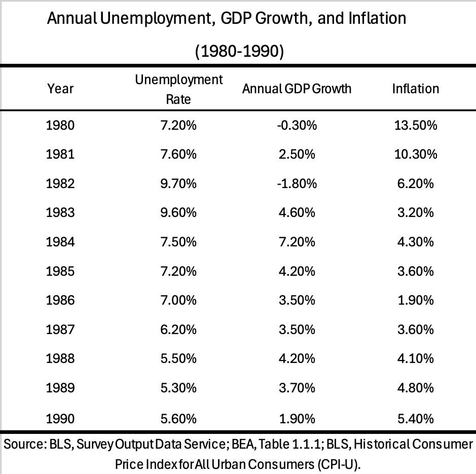
As part of the administration’s formal forecast, the February 1981 White House Program for Economic Recovery set out the expected effects of the policy mix on inflation, employment, output, and living standards. The projections were neither instant nor dramatic; they described a multi-year adjustment path consistent with the collapse of inflation volatility and improving incentives. The report stated:
The benefits to the average American will be striking. Inflation—which is now at double digit rates—will be cut in half by 1986. The American economy will produce 13 million new jobs by 1986, nearly 3 million more than if the status quo in government policy were to prevail. The economy itself should break out of its anemic growth patterns to a much more robust growth trend of 4 to 5 percent a year. These positive results will be accomplished simultaneously with reducing tax burdens, increasing private saving, and raising the living standard of the American family. 70
Evaluated ex post, the outcomes were as follows:
|
Observed Results |
|
|
Inflation will be cut in half by 1986. |
Inflation fell from roughly 11.8% in early 1981 to about 3-4% by early 1986; the annual CPI increase for 1986 was 1.9%. |
|
American economy will produce 13 million new jobs by 1986. |
Nonfarm payroll employment increased by approximately 9.6 million between 1981 and 1986, recovering losses incurred during the 1981–82 recession. |
|
Growth will shift to a 4–5% trend rate. |
Real GDP grew an average of roughly 3.5% from 1981-1988 and about 4.5% from 1983-1988, once the policy framework was fully in place. |
|
Tax burdens will fall, savings and living standards will rise. |
Marginal tax rates were reduced; inflation and unemployment fell; the misery index dropped from roughly 21% to about 9% by 1986; real per-capita income trended upward; aggregate saving did not rise. |
Unlike earlier episodes, the Reagan reforms were implemented under conditions—disinflation, recession, and fiscal stress—that would have rendered marginal rate reductions ineffective if incentive-based explanations were spurious. The subsequent recovery therefore serves as a stringent test of the mechanism identified in earlier sections.
President Reagan’s Second Term and the Tax Reform Act of 1986
By the end of Reagan’s first term the economy had entered a strong recovery, coinciding with the combined effects of tax reform and sustained monetary disinflation. With stability established and wide recognition that the income tax still contained deep structural distortions, the policy focus shifted toward comprehensive base reform. The Tax Reform Act of 1986 (TRA-86) paired this agenda with further rate compression, while eliminating or tightening many long-standing preferences—making it the most far-reaching structural reform of the federal income tax since its modern inception. Following conference reconciliation in October 1986, the legislation cleared Congress with overwhelming bipartisan support (House 292–136; Senate 74–23), demonstrating the durability of base-broadening rate reduction as a shared legislative objective.71
Because the Tax Reform Act of 1986 fundamentally rewired the structure of the income tax, a brief accounting of its mechanics is necessary before turning to its empirical effects. Although the act sharply reduced marginal rates, it was engineered to be revenue neutral under conventional static scoring assumptions. Its broad bipartisan support reflected a shared view that rate reduction and base broadening operated within the same incentive tradition associated with the Kennedy reforms, amid growing frustration with deductions, shelters, and special-interest carve-outs. TRA-86 addressed the problem by restructuring the incentive framework. The code shed preferences and closed shelters, and in exchange compressed the rate schedule. With the payoff to avoidance reduced and the statutory structure simplified, neutrality improved, compliance costs fell, and the system’s credibility strengthened.
For decades the tax code had sprawled across more than two dozen brackets. The early 1980s compression had reduced that number to fourteen, but TRA-86 went much further; it collapsed the architecture to five brackets in 1987 with a phased-in reduction of marginal rates. By 1988, the rate structure had been compressed to two statutory brackets: taxable income above $29,750 faced a 28 percent marginal rate, while income below that threshold was taxed at 15 percent. A 5 percent phase-out surtax, however, created an effective 33 percent marginal rate within a limited upper-income band as the benefit of the 15 percent bracket was recaptured. Standard deductions and personal exemptions were expanded and indexed thereafter. On paper, this amounted to a 22-point reduction in the top statutory rate relative to the pre-TRA-86 regime and a modest nominal increase at the bottom. But the distributional picture requires the full mechanics. Although the lowest statutory rate rose from the 11–14 percent range to 15 percent, the enlarged deduction and exemption thresholds lightened the burden on low-income tax units.
Across the income distribution, representative filing scenarios show materially lower liabilities under TRA-86 than under prior law. Table 25 makes the point directly. For married couples with no dependents using the standard deduction and personal exemptions, tax owed falls in each of the illustrated income ranges, with the largest dollar reductions appearing in the middle of the distribution. This pattern indicates that the reform shifted the tax burden upward. The combination of expanded base exemptions and compressed statutory rates reduced liability for typical filers across a wide span of incomes.
Table 25
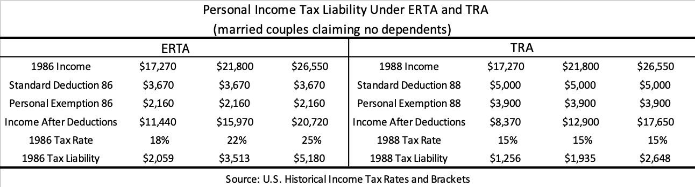
*Table 25 is illustrative of representative returns rather than population-weighted averages and assumes only the standard deduction and personal exemptions, with no other deductions or credits; aggregate distributional results are examined separately using IRS Statistics of Income.
President Reagan outlined the aims of tax reform in a national radio address on May 25, 1985. He argued that the long erosion of the personal exemption had imposed a hidden tax increase on ordinary families and stressed that reform must deliver direct relief to low- and middle-income earners. Expanding the personal exemption, raising the standard deduction, and lowering rates, he said, would make it easier for working households—especially those at the lower end of the income scale—to gain ground. Simplification and the curbing of shelters were integral to that effort.
Reagan also addressed the frustration driving demand for change. Americans were willing to pay taxes, he noted, but resented a system that left typical workers facing high rates while those with resources and advisers could legally avoid them. The code’s complexity, he warned, had damaged the economy, burdened ordinary filers, and undermined confidence in government.72
Consistent with earlier revenue acts, TRA-86 made sweeping changes beyond reducing individual rates. Evaluating their effects requires examining the statutes’ specific provisions and empirical record. Viewed as a whole, the act substantially increased the zero-tax threshold by enlarging personal exemptions and the standard deduction, while also lowering marginal rates across most income levels. The combined effects are reflected in post-implementation data showing meaningful reductions in tax burdens for lower- and middle-income households.
TRA-86 included the following changes:
· Reducing the individual income tax schedule from 14 brackets to 2.
· Setting the top marginal rate at 28 percent for taxable income above $29,750.
· Setting the bottom marginal rate at 15 percent for taxable income below $29,750.
· Increasing the capital gains rate from 20 percent to 28 percent as part of the compromise required to secure the lower top ordinary-income rate.
· Reducing the corporate top rate from 46 percent (or 51 percent for certain income ranges between 1984 and 1986) to 34 percent for corporations with taxable income above $335,000.
· Increasing the standard deduction: single filers from $2,480 to $3,000; heads of household from $2,480 to $4,400; married joint from $3,670 to $5,000 (1986 to 1988 values; interim adjustments occurred in 1987).
· Increasing the personal exemption: single filers from $1,080 to $1,950; married joint from $2,160 to $3,900; dependents from $1,080 to $1,950 (1986 to 1988 values; interim adjustments occurred in 1987).
· Increasing the Earned-Income Tax Credit from 11 percent of the first $5,000 earned to 14 percent of the first $5,714 earned.
· Establishing the Low-Income Housing Tax Credit (LIHTC) program.
In addition to rate compression and increased exemptions, TRA-86 eliminated many of the tax-shelter mechanisms prevalent in prior decades. Limitations on passive losses, repeal of the investment tax credit, slower depreciation schedules, and expansion of the Alternative Minimum Tax significantly reduced opportunities to shield income, reinforcing the relative incentive to earn and report income rather than shelter it.
The act also instituted substantial changes affecting tax units at different points in the income distribution. The standard deduction and personal exemptions, essentially stagnant since 1979, were substantially increased. As noted earlier in the Depression-era discussion, the personal exemption’s nominal value rose above its pre–New Deal peak for the first time since 1931, with the increase taking effect fully by 1988. The exemption was also phased out at higher income levels, ensuring that the largest relative gain accrued to low- and middle-income households. These reforms represented a structural shift: deductions and exemptions were raised, indexed thereafter for inflation, and arranged in a way that lifted the tax threshold for lower-income families while preventing bracket creep from eroding relief over time.
The Low-Income Housing Tax Credit (LIHTC), also established under TRA-86, became the central federal mechanism for supporting the development of affordable rental housing and remains so today. Although the rate reductions receive most of the historical attention, the distributional mechanics and base-broadening changes were equally significant. Together, these measures produced tangible gains for low- and middle-income tax units. In the following section, IRS Statistics of Income data provide an empirical account of how reported income, tax liabilities, and taxpayer behavior evolved in the wake of the 1980s reforms.
As covered previously, real individual income tax receipts softened in 1983-84. This reflected the transition from high inflation to disinflation and the lingering effects of the double-dip recession, not a contraction of the tax base. Disinflation slowed nominal income growth, while the downturn depressed profits and capital income realizations, removing the inflation-driven revenue effects that had characterized the prior decade. Although critics attributed the temporary decline to the tax cuts themselves, the timing of receipts across income categories and the simultaneous fall in inflation indicate that recession and disinflation were the dominant drivers of the decline, rather than changes in marginal rates.
Once the phased-in reductions and indexation had taken full effect, following the achievement of monetary stabilization, the economy and revenues rebounded strongly. Real output expanded substantially through 1984, marking the end of stagflation and the beginning of one of the strongest sustained expansions of the postwar era—an outcome inconsistent with static predictions about tax-policy effects. The relevant question is not whether revenues dipped during the transition but whether the long-run effects of lower marginal rates aligned with observed behavior and economic performance.
Table 26 presents federal receipts by major source from 1980 through 1988, allowing comparison of revenue composition before, during, and after the ERTA and TRA-86 reforms.
Table 26
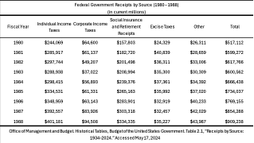
Table 26.1
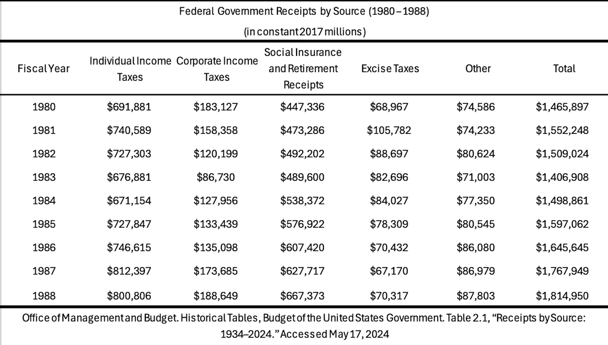
Rising nominal revenue following ERTA’s enactment can be cited as evidence that revenues increased after the tax cuts. While that inference is defensible in narrow terms, it obscures the timing, interactions, and real-dollar dynamics that shaped fiscal outcomes during the period. As Table 26.1 shows, real individual income tax receipts increased in the two years following ERTA’s implementation despite the recession. Crucially, effective tax burdens did not fall immediately; bracket creep persisted, and statutory indexing did not begin until 1985. As a result, average effective rates rose for many tax units even as marginal rates were being reduced, producing higher receipts before real revenues dipped at the recession’s trough and in its immediate aftermath.
As the recovery took hold and incentives for sheltering and deferral diminished, reported income increased, and a larger share of economic activity moved into the individual tax base. These developments align with empirical findings on the elasticity of taxable income and with the pronounced shift toward wage, pass-through, and capital income reporting over the decade. Although base broadening under the Tax Reform Act of 1986 and changes in organizational form also contributed, the real-dollar revenue pattern is more consistent with incentive-driven responses and transitional effects than with static projections of persistent revenue loss.
Corporate income tax receipts rose considerably between 1986 and 1988, even as the top corporate rate fell from 46 percent to 34 percent under TRA-86. To understand this pattern, it is important to identify why corporate receipts had been unusually high in 1980 and, to a lesser extent, in 1981. In addition to double-digit inflation, the top individual rate remained at 70 percent, creating strong incentives for high-income tax units to defer or recharacterize income through the corporate form. Evidence from retention behavior, organizational choice, and reported income patterns indicates that closely held C-corporations increasingly functioned not only as operating entities but as tax-advantaged repositories for income that would otherwise have faced much higher individual rates. As individual and corporate rates converged in the mid-1980s, this arbitrage narrowed substantially. Concurrently, ERTA accelerated depreciation rules and front-loaded deductions precisely when profits were weakest, mechanically depressing corporate receipts in 1982 and 1983. TRA-86 further deepened the corporate base by repealing the investment tax credit, slowing depreciation, restricting passive losses, and expanding the AMT. Even as narrower rate differentials encouraged pass-through status and curtailed many corporate shelter opportunities, the strengthening economy expanded taxable corporate income, resulting in higher corporate receipts despite markedly lower statutory rates.
Behavioral and Distributional Effects of the 1981 and 1986 Reforms
The 1980s provide the most consequential test of incentive-based tax policy since the Kennedy reforms of 1964 and the most extensive restructuring of the federal income tax since the Mellon era of the 1920s. Through the Economic Recovery Tax Act of 1981 and the Tax Reform Act of 1986, marginal rates fell sharply, brackets compressed, and long-standing shelters were curtailed or eliminated. The empirical questions follow directly: how did taxpayers adjust to lower marginal rates and a restructured code, and how did reported income and federal receipts evolve across income groups?
As the data show, the responses to the major rate changes of the 1980s align with the patterns observed after the Mellon and Kennedy reforms: shifts in reported income, reductions in avoidance, and changes in the composition and level of federal revenue that reflect behavioral adjustment rather than static projections. Lower marginal rates, combined with an expanded base, shifted the income tax burden away from lower-income earners and toward higher-income tax units. In the 1980s, this effect was reinforced by reforms that preserved real incomes at the lower end of the distribution through higher statutory exemptions and standard deductions, with indexing playing a critical role. Across the decade, tax units earning under $10,000—largely representing individuals at the early stages of the income ladder, given an average wage index of roughly $16,000—bore a smaller share of the income tax burden even as real receipts increased. 73
Economic expansion, falling unemployment, and moderating inflation amplified these effects. Consistent with the behavioral response framework developed throughout this analysis, improvements in the incentives to work, invest, and report income broadened the taxable base. Rising revenues often occurred as a secondary consequence, though not the objective, of the policy. As Tables 27–29 show, the distributional shifts of the 1980s contrast sharply with those of the Great Depression and the ensuing decades, when the burden increasingly moved onto lower- and middle-income tax units.
Table 27
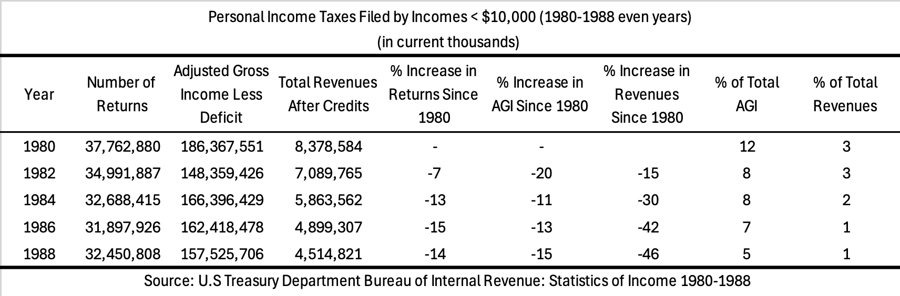
Table 27.1
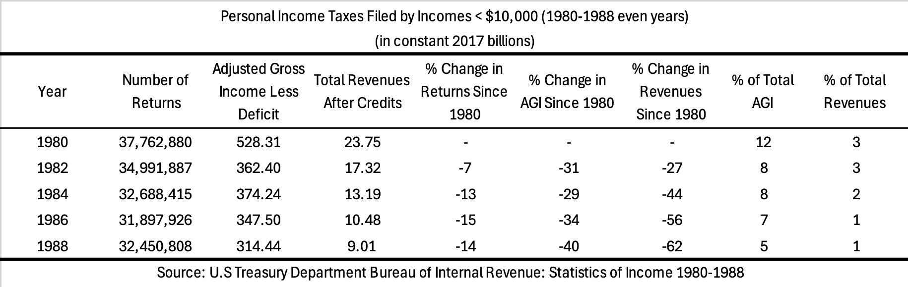
The U.S. population increased by roughly 18 million between 1980 and 1988, yet the number of tax returns reporting incomes below $10,000 declined by an average of about 4.5 million per year over the same period. These figures also exclude transfer payments and employer-provided benefits, which constituted a growing share of resources for households at the lower end of the distribution. Viewed alongside expanded personal exemptions, indexing, rising real earnings, enhanced employer provided benefits, and increased transfer-payment support, the decline in low-income filings does not indicate falling real income among lower-earning households. Rather, consistent with the upward shifts observed after the Revenue Act of 1964, a substantial portion of tax units who had been in this range appear to have moved into higher brackets as real incomes increased.
By contrast, the number of returns reporting incomes above $100,000 increased by roughly 2 million between 1980 and 1988. This cohort registered large gains in reported adjusted gross income and in total revenue collected. As Table 28.1 shows, real revenues from higher-income tax units rose substantially during a period in which marginal tax rates were materially reduced, consistent with the behavioral patterns observed in earlier episodes of rate reductions.
Table 28
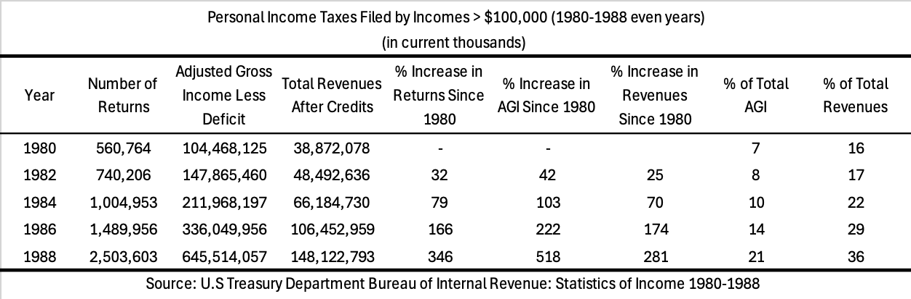
Table 28.1
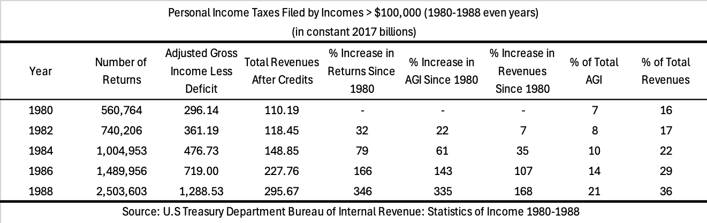
Although the gains in the above $100,000 cohort were pronounced, they were smaller in scale than the increases observed among the highest income filers. The behavioral pattern persisted: reported income and revenue contributions rose most sharply at the top of the distribution.
Table 29
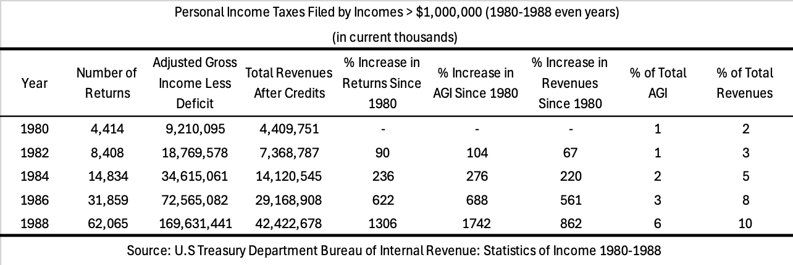
Table 29.1
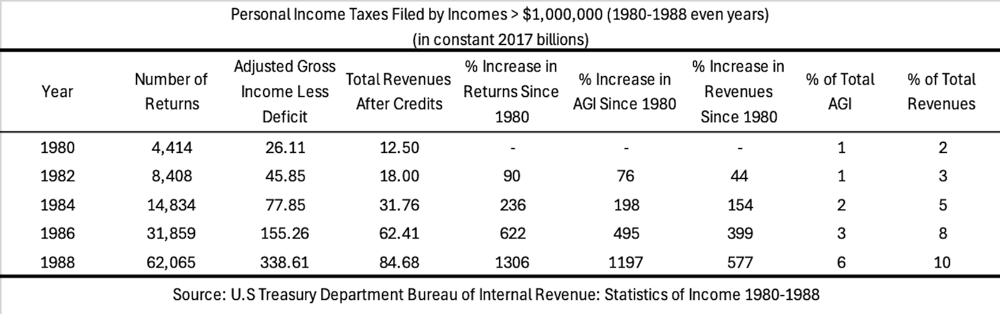
Throughout this period, the most affluent tax units accounted for a substantially larger share of federal income tax revenues, while the share borne by lower-income filers declined, with the largest reduction among those reporting under $10,000 in income. These shifts did not arise from a redistribution of income toward the top at the expense of others; rather, they coincided with general income growth, increased movement into higher income brackets, and a marked contraction in the number of returns at the lowest income levels. As in the periods following the Mellon and Kennedy cuts, reductions in top marginal rates during the 1980s were accompanied by more filers reporting higher incomes, greater revenue contributions from upper-income tax units, and expanding economic activity across the distribution.
While reported top incomes expanded aggressively during this span, a significant portion of that growth reflected realizations of capital gains. It is important to note that a realized capital gain, by itself, does not make a taxpayer wealthier in any substantive economic sense. It simply converts one asset—equity, real estate, or another capital holding—into another form, cash. The individual’s net worth does not increase by selling the asset but only changes composition. Yet because realizations are recorded as income in the year they occur, they enter IRS data as spikes in reported income even though no new wealth has been created, only reclassified. For this reason, changes in capital gains realizations often reveal timing responses to tax incentives rather than genuine increases in underlying economic inequality.
Figure 4 places these effects in sharp relief. Capital gains realizations climbed steadily after 1981 as equity values recovered and as lower effective marginal rates made the recognition of gains less costly. But the most dramatic movement occurred in 1986, when taxpayers anticipated the statutory increase in the capital gains rate from 20 to 28 percent that would take effect on January 1, 1987. The result was an unprecedented surge in realizations in the final year of the lower rate, followed immediately by a collapse in 1987 once the higher rate applied. The pattern of a one-year increase of that magnitude followed by an immediate retrenchment of equal force is entirely consistent with a tax-induced shifting of realizations across years.
Figure 4
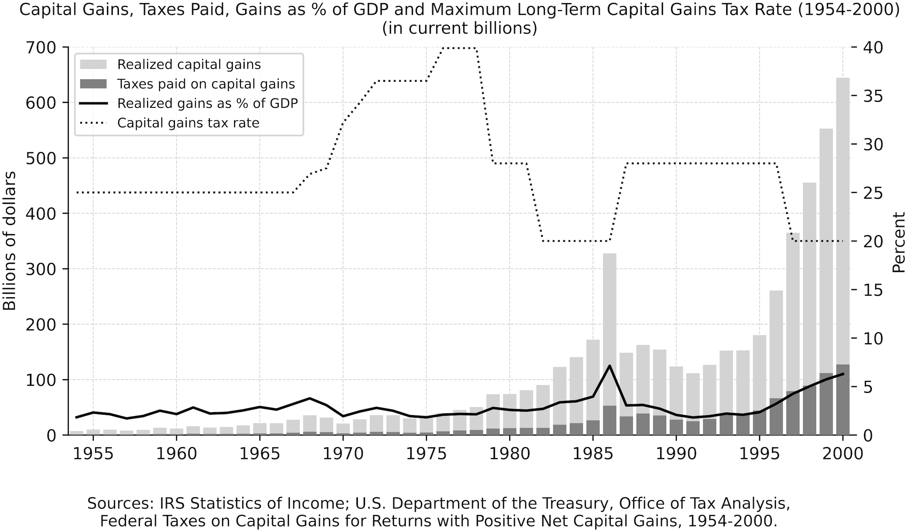
The jump in 1986 does not reflect a sudden improvement in top-end economic conditions nor a worsening of the distribution for lower- or middle-income tax units. Instead, it reveals how taxpayers with appreciable capital holdings deliberately adjust the timing of transactions when rate changes are known in advance. After the statutory rate rose in 1987, realizations fell back to levels more closely aligned with long-run behavior, confirming that the earlier spike was a temporary reporting response rather than a durable structural shift. A one-year surge in income produced by a realization also does not imply that the same tax unit will report similar income again in subsequent years, and such tables should not be interpreted as evidence of persistent identity within brackets.
These dynamics are critical for interpreting the wider distributional patterns. To the extent that rising top-end shares in the mid-1980s were driven by the bunching of capital gains realizations, many of which were the culmination of long-term asset accumulation rather than new income, they cannot be taken as evidence of a deterioration in the position of lower-income filers. The distributional data for 1986 and 1987 are incredibly sensitive to the capital gains provision of the Tax Reform Act of 1986, and assessments of inequality trends that treat these years as representative without adjusting for realization behavior risks overstating the degree of underlying change.
Moreover, this is just one of several factors that exaggerate the apparent widening of inequality in pretax IRS data. The mid-1980s coincided with multiple, overlapping shifts: the reclassification of business income onto individual returns as partnerships and S corporations expanded; changes in AGI definitions under the Tax Reform Act of 1986; the consolidation of previously sheltered income as preferences were curtailed; and the migration of professional and closely held firms into pass-through form in anticipation of lower individual rates. As a result, business income’s share of adjusted gross income for the top 1 percent increased from approximately 7.8 percent in 1981 to about 21.2 percent in 1988.74 This change reflects income being reported in a different form and location within the tax system and does not necessarily imply a commensurate increase in underlying income.
Each of these developments increased the flow of income reported at the top without requiring any deterioration in the condition of lower-income filers. Nor do they necessarily reflect greater concentration of economic resources. They simply altered where income appeared on tax returns. At the same time, the pretax income recorded for lower-income filers excludes a growing share of non-taxable resources—transfer payments, employer-provided benefits, and expanding retirement vehicles—that do not enter AGI but materially support living standards. The result is that the measured distribution in IRS data can widen from both directions: the top appears higher because more income is routed onto individual returns, while the lower end appears flatter because significant components of economic resources never reach the tax base at all. Bureau of Economic Analysis data illustrate the magnitude of this change: real transfer payments rose by $19.2 billion between 1981 and 1989, a 256 percent increase. 75 By contrast, from 1973 to 1980 real transfers increased by $4.2 billion.
The combined effect is a statistical magnification of top-end income shares at precisely the moment when structural reforms were reshaping the tax base. When realizations bunch in response to scheduled rate changes, business income shifts from the corporate to the individual sector, and formerly untaxed or lightly taxed components of income enter AGI, the resulting distributional picture captures changes in reporting conventions at least as much as it captures changes in underlying economic reality. Any interpretation of the period that does not adjust for these mechanical influences risks attributing to inequality what is more plausibly explained by the interaction of incentives, reclassification, and tax-base expansion.
The general point is straightforward. The 1981 and 1986 reforms altered both incentives and definitions. Taxpayer responses to marginal rates are visible in earned income, but they are even more pronounced in capital gains realizations because taxpayers can decide when, within wide bounds, to recognize gains for tax purposes. The observed movements in capital gains income during the 1980s illustrate a core theme of this study: tax-policy changes shape the timing and volume of reported income more than they align with independent economic conditions. Ignoring the role of realizations converts temporary timing behavior into misleading narratives of long-run inequality. As the capital gains data show, realizations again surged in the late 1990s, reflecting repeated timing responses to changing tax incentives.
Furthermore, movements in tax burden shares need not mirror movements in the pretax income distribution. If pretax incomes become more equal, the share of taxes paid by higher-income filers will fall mechanically, and the share paid by lower-income filers will rise, even in the absence of any statutory change. Conversely, when structural reforms expand the tax base at the top—through reclassification of business income, the curtailment of preferences, or shifts in the timing of realizations—tax-burden shares can rise even if underlying economic inequality has not. Evaluating these shifts without reference to taxpayer behavior, statutory adjustments, and reporting dynamics risks drawing conclusions that the data themselves do not support. Contemporary analysts have recognized this interaction for decades, noting that changes in measured progressivity often reflect the evolving structure of the tax base rather than isolated changes in economic conditions. The broader implications are taken up in the conclusion; for present purposes, the point is narrower: the distributional outcomes of the 1980s reforms cannot be understood apart from the behavioral and definitional changes that shaped the reported income on which those outcomes rest.
For illustration, consider a counterfactual in which marginal tax rates on top incomes were set at 90 percent and every dollar of revenue collected from that cohort—abstracting from behavioral responses—were redistributed in the form of transfers to lower-income households. Under such a regime, the distribution of pretax, pretransfer income would appear unchanged, because the underlying data record only incomes before taxes and transfers are applied. The statistical picture would therefore be identical, even under complete and perfectly targeted redistribution.
This highlights a fundamental limitation of tax return–based inequality measures: the analytical tool is mismatched to the question being asked. A precise metric can nonetheless be an inappropriate one. For example, an individual changing their diet may gain or lose substantial body weight, yet a thermometer used to quantify such changes will continue to register readings around 98.6 degrees. Equally, large changes in redistribution can occur without producing corresponding changes in pretax income distributions. Instruments designed to measure one variable cannot be repurposed to evaluate another. When applied beyond their domain, such metrics offer little guidance for policy design.
Returning to the analysis of Reagan-era policy, ERTA did not achieve all of its stated fiscal objectives. The administration’s projected revenue gains and deficit-reduction paths did not fully materialize—owing partly to optimistic baseline assumptions and partly to the interaction of the slow phase-in of the tax cuts, monetary tightening, recession dynamics, and later fiscal decisions that diverged from the original program. Yet shortfalls relative to projections differ materially from a continual macroeconomic deterioration. The early-1980s recession, which predated the full implementation of ERTA, was followed by sustained declines in inflation, steady year-over-year reductions in unemployment after 1982, and strong growth in real GDP and real income per capita. These developments indicate that the economy rebounded strongly from the high-inflation, unstable growth environment of the prior decade and entered a prolonged expansion.
As shown earlier, federal tax receipts rose substantially in real terms over the latter half of the decade, though not nearly enough to keep pace with federal spending—a pattern consistent with the postwar era generally. Table 30 shows that federal receipts as a share of GDP during the Reagan years exceeded those of every administration since Truman except Carter’s. The Carter-era peak, however, was driven by severe bracket creep under high inflation, whereas by late 1982 inflation had fallen to roughly 5 percent and income tax brackets were indexed beginning in 1985. Real GDP growth during the 1980s was also historically strong. Although federal debt rose substantially over the decade, the evidence does not support attributing that increase to marginal rate reductions.
Treasury estimates summarized by Jerry Tempalski indicate that ERTA reduced federal revenues by an average of 2.89 percent of GDP over its first four years.76 At that estimated level, revenues as a share of GDP would have exceeded any peacetime four-year period to date and approached the wartime revenue levels recorded during World War II. The estimate is derived from conventional Treasury revenue scoring, but the counterfactual revenue path it implies is not fully specified. Even taken at face value, the counterfactual implied by the estimate resembles the high-inflation, bracket-creep environment of the late 1970s rather than any stable baseline. The early 1980s were defined by disinflation, the double-dip recession, and major changes in reporting incentives—all of which complicate static comparisons between projected and realized revenue paths. Tempalski’s estimate therefore cannot be treated as evidence that ERTA’s revenue effects caused the subsequent fiscal deficits. The inference runs backward; it presumes that revenues suppressed by disinflation reflect a policy failure, rather than recognizing such outcomes as an expected feature of restoring price stability and real growth.
Table 30
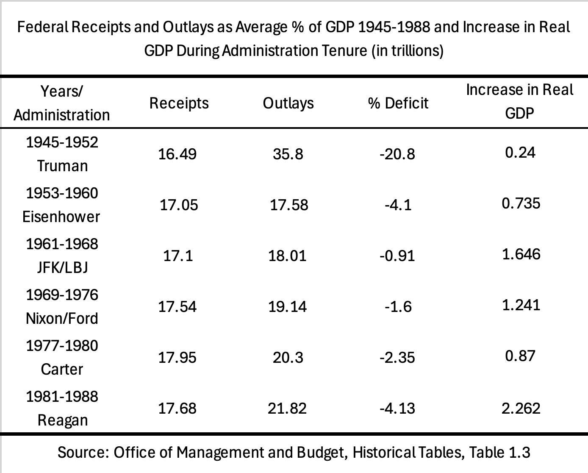
Table 30 shows that federal receipts during the 1980s remained well within the postwar norm, underscoring that the 1981 reforms did not produce an anomalous revenue collapse. The reforms were not designed to maximize short-term receipts, but to realign marginal incentives, widen the tax base, and improve long-run economic performance. In real terms, revenues dipped briefly during the early recovery, then rose steadily as growth resumed, bracket indexation reduced inflation-driven distortions, and reported income increased. More directly to the present inquiry, the individual income tax under Reagan generated roughly 8.2 percent of a substantially larger GDP, compared with 8.25 percent under Carter and sub-8 percent averages throughout the 1960s and 1970s.
Outlays, by contrast, averaged 21.82 percent of GDP, driven by the defense buildup, the fiscal effects of disinflation, and the rigidity of preexisting mandatory spending commitments. The resulting deficits stemmed primarily from expenditure levels rather than a deterioration in revenue capacity. Over the same period, real GDP expanded by more than $2.2 trillion—the largest increase recorded by any postwar administration up to that point—highlighting the need to evaluate fiscal and economic outcomes together rather than rely on forecast variances or static revenue expectations.
These fiscal dynamics unfolded within a broader geopolitical environment that shaped budget priorities and policy tradeoffs. The Cold War remained the dominant national security priority, and policymakers in both parties regarded the Soviet Union as a strategic threat. The defense buildup of the early and mid-1980s, supported on a bipartisan basis, consisted largely of long-lived capital investments rather than short-run consumption. These outlays lifted federal spending as a share of GDP and should be distinguished from domestic discretionary increases or the entitlement growth embedded in earlier legislation. The peaceful resolution of the Cold War and the subsequent rapid success of U.S. forces in the Gulf War frame the strategic context in which these fiscal choices were made, even though the counterfactual cannot be observed. Any evaluation of the decade’s budgetary record must therefore consider both economic policy and the security imperatives shaping federal spending.
To contextualize the scale of defense outlays, it is useful to compare the Reagan buildup with Cold War spending in the early 1960s. Although average annual defense spending in real dollars was higher during 1981–1988 than in the pre-Vietnam Cold War years, the fiscal burden was materially lighter. Measured against total output, defense outlays absorbed approximately 7.5 percent of GDP from 1962 to 1966, compared with 5.5 percent over 1981–1988—a reduction of roughly 25 percent.77 This indicates that military spending in the 1980s was not unprecedented and cannot alone account for the decade’s debt dynamics.
Beyond the defense buildup and preexisting, non-discretionary commitments at the Department of Health and Human Services and the Social Security Administration, most departments experienced only modest expenditure growth. The principal exception was the Treasury, driven by forces discussed earlier. Most notably, the successful reduction of inflation sharply weakened bracket creep, eliminating a major source of automatic revenue growth that had characterized the 1970s. Second, debt accumulated during the high-inflation years now had to be serviced in a lower-inflation environment with historically high interest rates, raising the real cost of interest payments. These fiscal dynamics contributed to the early-1980s deficits and are often attributed to steep revenue losses following the tax cuts. The spending data, however, indicate that entitlement growth and rising interest burdens played central roles. Accounting for these factors is essential to evaluating the fiscal record of the 1980s in proper context. Table 31 demonstrates the agency level spending by major category.
Table 31
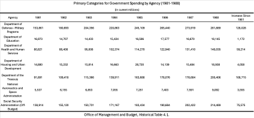
Policy development in the 1980s must also be situated within its institutional environment. Throughout 1981–1989, partisan control of Congress was divided: Democrats held the House for the entire period, and the Senate shifted from Republican to Democratic control after 1986. Under Article I, Section 7 of the Constitution, revenue legislation originates in the House, and both the Economic Recovery Tax Act of 1981 and the Tax Reform Act of 1986 passed with bipartisan support. Fiscal policy during the decade therefore reflected negotiated legislative outcomes rather than unilateral executive action. The contrast between contemporary voting coalitions and later narratives highlights how retrospective accounts can diverge from both the legislative record and the fiscal results of the period.
With the composition of federal spending now established, the rise in federal debt during the 1980s can be properly contextualized. Revenues did not collapse in response to rate reductions; spending, much of it driven by programs enacted before 1981 and by ongoing defense commitments, expanded more rapidly than receipts. Although the Reagan tax cuts were not solely responsible for the economic recovery, the timing and subsequent performance of key indicators—real GDP, unemployment, investment, and real tax receipts—align with the view that lower marginal rates improved economic incentives and supported stronger output.
The macroeconomic recovery of the 1980s reflected several forces operating at once—monetary stabilization, demographic growth, and changes in the global economic environment among them. These influences mattered, but the scale and persistence of the expansion are difficult to reconcile with assertions that marginal rate reductions played no meaningful role. Nor does the evidence support the converse claims that the tax cuts were harmful or that rising inequality stemmed primarily from lower statutory rates. Structural shifts in the economy—technology adoption, globalization, the transition toward services, skill-biased demand, and evolving compensation practices—shaped distributional outcomes well beyond the reach of any single tax statute. Contemporary accounts often obscure this complexity. Monetary tightening, phased-in rate reductions, indexing, and shelter elimination all interacted during a turbulent decade, and simplified interpretations cannot capture these dynamics. Yet three distinct historical episodes—the 1920s, 1960s, and 1980s—show a consistent pattern: when marginal rates fall substantially and the base is broadened, reported income rises, avoidance declines, and federal receipts from upper-income tax units increase.
Real median income data illustrate this broader backdrop; despite nominal growth, living standards stagnated through the late 1970s as inflation eroded real purchasing power. A clear shift in trend becomes visible following the early-1980s recession, with real income consistently rising thereafter. This inflection is not attributable to tax cuts alone, but the timing aligns with the restoration of productive incentives, monetary stability and the removal of the bracket-creep mechanism. Figure 5 illustrates this transition directly: the lived economic conditions of ordinary Americans improved in the 1980s after a decade in which real gains had been largely wiped out by inflation and bracket creep.
Figure 5
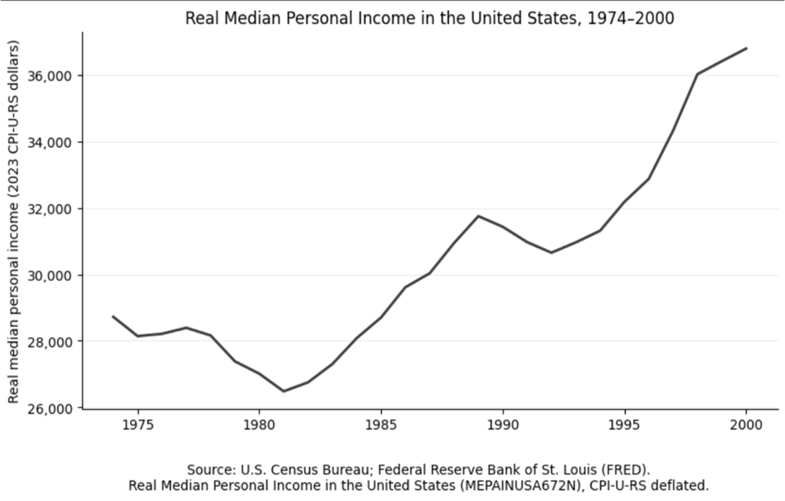
Economic policy does not operate in isolation, and some of the favorable conditions that shaped the 1980s expansion did not emerge overnight. Several important reforms and institutional shifts predated the Reagan program, including the Broadhead Amendment’s 1978 reduction in the capital gains rate, Carter-era deregulation in transportation, communications, and energy, and the onset of Paul Volcker’s disinflation campaign. All occurred before the Reagan tax reforms and proved indispensable to the decade’s economic performance. At the same time, the Reagan years were not without setbacks: the deep early recession, the 1987 market crash, the savings-and-loan crisis, and a sharp rise in federal debt. These episodes reinforce that expansions rarely proceed uninterrupted; shocks and reversals are inherent to every economic cycle. Recognizing the multiple contributors to the decade’s gains does not diminish the importance of the Reagan-era reforms but places them in proper context.
When evaluated within the historical arc traced throughout this study, the tax reforms of the 1980s represent the most consequential test of incentive-based policy since the Revenue Acts of the 1920s and 1960s. The reforms sharply reduced marginal rates, eliminated long-standing shelters, expanded exemptions, raised standard deductions, and compressed brackets. Incentives to work, invest, and report income strengthened; avoidance strategies narrowed, and the taxable base broadened. As the IRS data show, these behavioral responses help explain the rise in reported income and the upward shift in tax payments among higher-income filers. At the same time, lower statutory rates and indexing preserved real incomes for ordinary workers and better aligned the tax code with productive activity rather than avoidance.
The interplay of forces during the Reagan era was complex, but the empirical pattern is not. Across the major incentive-driven reforms of the twentieth century—the Mellon, Kennedy, and Reagan programs—the response of taxpayers has been consistent: higher reported incomes, strong revenue performance, and a measurable shift in the tax burden away from lower-income households. The 1980s complete that pattern and reinforce this study’s central finding: marginal tax rates shape how income is earned and reported by influencing incentives to work, invest, and produce. Revenue outcomes follow from these behavioral responses—though the appropriate margin of analysis is the health of the economy and the living standards it sustains, not the maximization of tax receipts.
Tax Policy in the 1990s
President George H. W. Bush entered office pledging “no new taxes” but ultimately accepted the Omnibus Budget Reconciliation Act of 1990, enacted under Democratic majorities in both chambers. Effective in 1991, OBRA-90 raised the top marginal rate from 28 to 31 percent and introduced a new 28-percent bracket, while also increasing selected excise and payroll taxes. These changes coincided with a mild recession beginning in mid-1990, driven primarily by monetary tightening and the oil-price shock associated with the Gulf War. Relative to the major reforms of 1981 and 1986, OBRA-90 represented a modest upward adjustment to the rate schedule rather than a structural redesign, but it established the statutory baseline inherited by the Clinton administration.
President Bill Clinton was elected in 1992 following the brief recession in the early 1990s. At the time, both the Congressional Budget Office and the Office of Management and Budget projected persistent federal budget deficits extending through much of the decade. Anyone familiar with the history of such forecasts understands their limits. This is not a criticism of the CBO or OMB; it simply reflects the difficulty of projecting economic conditions several years ahead, let alone over a decade. Predicting the economic path of a nation, shaped by trillions of decentralized decisions and innumerable contingencies, is inherently uncertain.
Amid concerns over long-run fiscal imbalance, President Clinton signed the Omnibus Budget Reconciliation Act of 1993. The law raised the top personal marginal tax rates to 36 percent for incomes above $140,000 and to 39.6 percent for incomes above $250,000. The measure passed the House by a one-vote margin, 218–216 and cleared the Senate only through Vice President Al Gore’s tie-breaking vote.78 No Republican supported the bill. This narrow legislative outcome marked the beginning of the modern partisan divide over the federal income tax. Examining tax receipts shows that federal revenues rose during the Clinton presidency, and advocates of higher taxes on upper-income earners often cite this period as evidence that raising rates on the affluent reliably increases revenue. On the surface, the 1990s appear to support that claim. In practice, however, other forces exerted greater influence; the policy context differs materially from earlier episodes examined in this study.
The top statutory rate rose to 39.6 percent—an increase of 8.6 percentage points from its prior level and 11.6 points above the 1988–1990 rate. Yet even after this change, the top rate remained historically low by the standards of the modern income tax. It was still 10.4 percentage points below the fully phased-in top rate under the Economic Recovery Tax Act of 1981 and 31.4 points lower than the top rate following the Revenue Act of 1964. Since World War I, comparably low top rates had existed only in the brief intervals of 1925–1931 and 1988–1992. Moreover, the increase of 1993 bears little resemblance to the rate shocks of earlier eras. Against that historical backdrop, the Clinton increase was modest. The general economic environment—including rapid productivity growth, relatively restrained federal spending, and exceptional gains in corporate profits and equity valuations—played a more decisive role in shaping revenue performance than the marginal rate adjustment alone.
IRS data for 1992–94 show a familiar pattern: a pronounced rise in top wages ahead of the 1993 rate increase, followed by declines in 1993 and again in 1994. In real terms, top salaries in 1994 remained below their 1988 level. These movements are consistent with anticipatory income shifting ahead of the OBRA-93 rate increase and with reduced reported income once higher marginal rates were in place. Although OBRA-93 produced measurable avoidance behavior—most clearly in the surge of top wages in 1992—the scale of the response was smaller than in earlier episodes of large rate increases. These dynamics are demonstrated in Table 32.
Table 32
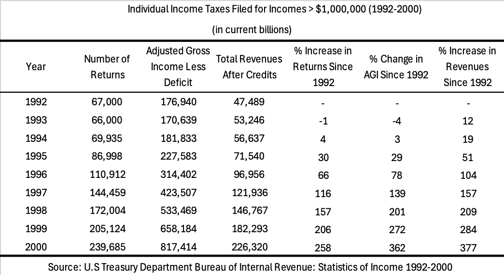
Table 32.1
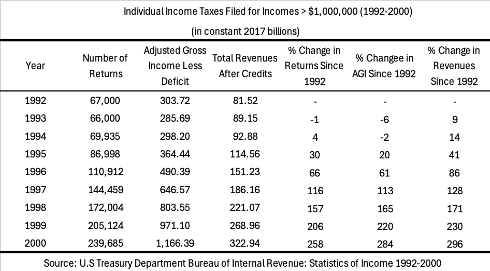
Reported activity accelerated in the latter half of the decade, but it does not follow that the late-1990s influx of top-end reported income can be attributed to higher marginal rates. IRS and BEA data instead show that the tax base narrowed substantially in the years surrounding the 1993 rate increase. Between 1988 and 1994, adjusted gross income declined from roughly 90 percent of national personal income to about 86.6 percent.79 Over the same period, taxable income—AGI net of exemptions and deductions—fell from nearly 50 percent of personal income to approximately 44.5 percent.
Much of the eventual increase reflected extraordinary and non-repeatable conditions: a technology-driven equity boom, widespread stock-option exercises, and a strong dollar that supported capital inflows and elevated asset valuations. Reported income and receipts rose abruptly after the 1997 reduction in the capital gains rate, not following the 1993 rate increase. These episodic forces, rather than higher statutory rates, explain the late-decade acceleration in reported income and tax receipts among top earning tax units.
Following the enactment of the Tax Reform Act of 1986, business income as a share of top-decile income rose markedly, averaging roughly 26 percent of reported income among apex earners across Clinton’s presidency.80 This shift reflects changes in the form in which income was reported rather than a commensurate expansion of underlying economic activity. Routing income through business forms expanded opportunities for recharacterization, deferral, and deduction, lowering effective tax burdens relative to wage income. As a result, a growing share of income—particularly at the top of the distribution—either entered the tax base in altered form or did not enter it immediately at all.
A further structural factor shaped the revenue pattern. OBRA-93 imposed a $1 million cap on deductible executive compensation under IRC §162(m), with an exception for performance-based pay. Intended to restrain high salaries, the provision instead altered how compensation was structured and reported. Firms shifted away from cash wages toward stock options and other equity-linked pay, which expanded rapidly in its wake. When those options were exercised, compensation was reported as wage income, while subsequent gains reflected in the sale of shares were taxed as capital gains. The policy thus redirected compensation into forms with greater timing flexibility and preferential treatment, producing effects opposite to its stated aim. This episode underscores the capacity of high-income earners to recharacterize income in response to targeted measures, even when nominal compensation limits are tightened. Combined with the 1997 reduction in the capital gains rate, this change in compensation structure contributed materially to the late-1990s surge in realizations and high-end reported income. The episode illustrates how base and reporting dynamics, not higher statutory rates, were central to the decade’s revenue outcomes. Tables 33 and 34 document these movements in capital gains, reported incomes, and receipts across the decade.
Table 33
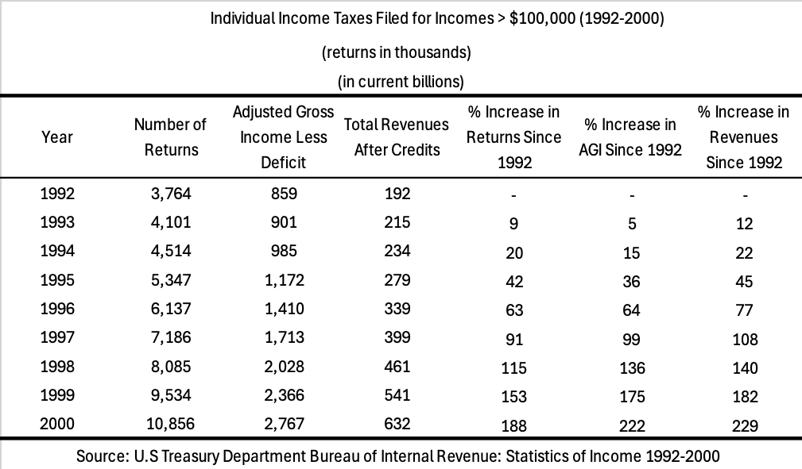
Table 33.1
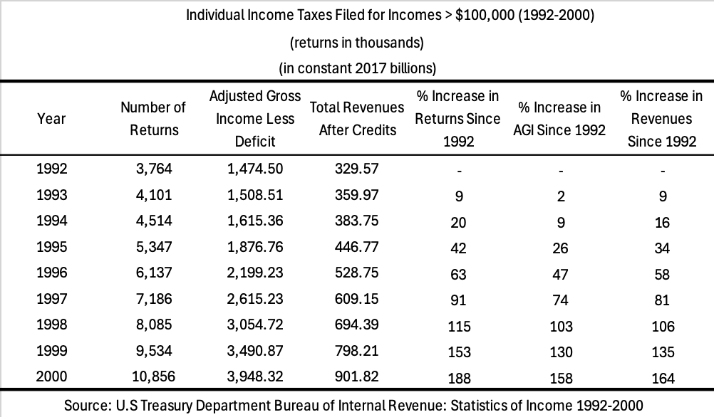
Evidently, revenues did trend upward, but this does not imply that higher top-end rates had greater effectiveness in promoting economic expansion or sustaining revenue growth. From 1993 through 1996, total federal receipts averaged 17.67 percent of GDP, virtually identical to the 17.68 percent average during the Reagan years. Individual income tax revenues averaged 7.8 percent of GDP during Clinton’s first term, compared with roughly 8.2 percent under Reagan. Removing the timing-sensitive bracket creep years of 1981 to 1982 and isolating 1987 to 1988 after TRA-86 substantially reduced the top marginal rate amplifies these phenomena. The individual income tax averaged roughly 8 percent of GDP while total federal receipts averaged about 17.8 percent, levels higher than the mid-1990s.
In 1997, the statutory long-term capital gains rate was reduced from 28 percent to 20 percent, with additional holding-period adjustments that left many realized gains subject to even lower effective rates. Following the rate reduction, realizations accelerated. Individual income tax receipts subsequently rose to 9.3 percent of GDP during Clinton’s second term and averaged 8.55 percent over his presidency as a whole. Even allowing for the extraordinary asset-market gains of the late 1990s, the increase in revenues occurred after the rate cut rather than immediately after the preceding increase. Measured against GDP, federal receipts during the mid-1990s were comparable to those observed during the Reagan years, despite materially different marginal rate structures. Although top marginal rates were higher for much of the Reagan presidency, capital gains rates were materially lower, and isolating the post-TRA-86 steady state yields revenue levels that remain above those observed in the mid-1990s. As throughout this study, revenue outcomes are not treated as a proxy for economic health, but solely as a basis for cross-period comparison.
Using static scoring, it is trivially true that revenues would have been lower absent the 1993 rate increases. Static scoring is designed to produce that conclusion: by construction, any rate reduction “loses” revenue and any rate increase “raises” it, regardless of what actually happens. This is not an empirical finding; it is an accounting identity. Ignoring behavioral responses (ETI) yields distorted revenue projections and a history of serial forecasting errors. If statutory rates were cut in half and receipts doubled, static scoring would still record a “revenue loss.” The same holds in reverse when rates increase. The evidence reviewed here reveals the central problem: a framework that forbids behavioral change cannot illuminate how tax policy affects real-world revenue. Table 34 shows the revenue trends across Clinton’s presidency.
Table 34

Table 34.1
Aggregate federal receipts follow the same trend. Revenue growth in the first half of the 1990s was modest following the 1993 rate increase, rising in line with a recovering economy but showing no distinctive acceleration attributable to higher marginal rates. The sharp upward break occurred later in the decade, coinciding with the 1997 capital gains rate reduction, the technology-driven equity boom, and unprecedented realizations. Corporate receipts increased as profits expanded during the late-1990s boom, though their trajectory was more volatile than that of individual income taxes. By FY 2000, real total federal revenue had climbed to roughly $2.9 trillion, reflecting the apex of the dot-com cycle and behavioral responses to the late 1990s legislative changes.
Just as it is essential to recognize that President Reagan governed with a Democratic House, it is equally important to recall the congressional landscape of the Clinton years. Democrats controlled both chambers during Clinton’s first two years; for the remaining six, Republicans held majorities in the House and Senate—ushering in the first Republican-controlled House in forty years. Congress played a decisive role in reshaping fiscal incentives during this period. Among its most consequential legislation was the Personal Responsibility and Work Opportunity Reconciliation Act of 1996, a bipartisan welfare-reform measure enacted by the 104th Congress. The broader fiscal environment also differed sharply from earlier eras. With no major military conflicts and the effective completion of the Savings and Loan resolution process by the mid-1990s, both defense spending and total federal outlays declined as a share of GDP throughout Clinton’s presidency. These institutional and budgetary conditions contributed materially to the fiscal results of the late 1990s and must be considered when assessing the revenue trajectory of the period.
Among the major legislation enacted by the 105th Congress was the Taxpayer Relief Act of 1997 (TRA-97). The law excluded up to $250,000 in gains from the sale of a primary residence for each spouse, created Roth IRAs, and—most consequentially—reduced capital gains tax rates. That change played a central role in the surge of realized gains and the associated rise in federal receipts in the latter half of the decade. A separate but related development, the 1996 welfare-reform act, also strengthened work incentives and contributed to the general labor-market improvements of the period.
As noted, Clinton’s first term raised the top marginal rate, but his second term moved in the opposite direction. Major legislation during this period lowered the overall tax burden. Although the administration did not articulate a distinct economic doctrine, the prevailing mix of policy—lower investment taxes, strengthened work incentives, restrained spending, and sound monetary policy—created favorable conditions for productivity and growth. The late-1990s expansion emerged in this environment. With robust output gains, rising productivity, and congressional limits on outlays, the federal budget recorded surpluses from 1998 through 2001. Because appropriations originated in a Republican-controlled Congress during Clinton’s final six years, these surpluses were inherently bipartisan; assigning credit between the administration and Congress is ultimately interpretive. A wider confluence of conditions shaped the exceptional performance of the late decade; Table 35 highlights the primary indicators during this period.
Table 35
The data from the 1990s complete the empirical arc traced throughout the twentieth century. The decade’s strongest gains in income, employment, and federal receipts occurred not in the aftermath of the 1993 rate increase but following the 1997 reductions in investment taxes, amid rising productivity and a stable monetary environment. As in earlier episodes, taxpayers adjusted their behavior predictably when marginal rates changed, and high-end realizations responded sharply to lower capital gains rates. The late-1990s expansion thus aligns with the historical pattern documented across this study: fiscal capacity is strengthened not by imposing higher statutory burdens but by reducing the penalties on work, reporting, and investment in an environment of monetary stability.
By 2000, the income tax had been tested under nearly every configuration a statutory system can encounter: steeply progressive wartime schedules, peacetime surcharges, broad-based cuts, structural reforms, bracket creep, indexing, and shifts in the definition of taxable income itself. These contrasts supply the variation needed to evaluate how the system behaves in practice. The conclusion turns from episodes to the evidentiary patterns they collectively reveal.
Conclusions and Implications
This study concludes its analysis in the year 2000. The subsequent twenty-five years add remarkably little to what the prior century has already made clear. The behavioral patterns identified here continue to appear in the subsequent decades. But the post-2000 period introduces a series of smaller, more frequent policy adjustments and significant macroeconomic shocks that make it less suitable for isolating the effects of structural reform. For a study concerned with the long-run consequences of major reforms, 2000 offers the last analytically clean point at which the effects of earlier legislation can be evaluated without the confounding influences that dominate the subsequent decades.
What began as a minimal, uniform duty designed to finance the essential functions of the federal government has evolved into something far removed from its original conception. The constitutional standard of uniformity was set aside by statute in 1913 and replaced by a new framework grounded in “ability to pay.” Within five years, top marginal rates exceeded 70 percent—levels that would prevail, with only brief interruptions, for most of the next sixty-five years. World War I supplied the initial rationale for extending the burden downward, and the emergency rates that followed became a semi-permanent feature of the modern code. The corrective interval from 1925 to 1931 briefly restored a narrower tax base in which only the affluent bore a meaningful income tax liability, but by the early 1930s, exemptions had again fallen, rates had climbed, and the reach of the tax resumed its downward expansion.
To be sure, the economic and institutional context of the earlier periods examined bears little resemblance to that of the present day. Federal responsibilities have expanded substantially, and the scope of public provision has widened across successive regimes. Yet the magnitude and direction of these shifts underscore how far the system has moved from the original principles of uniformity, narrow application, and minimal intrusion that characterized its earliest form. Over much of this period, tax policy has rested more on theoretical commitments than on observed results. And when nearly a century’s worth of raw filing data is examined side by side with the statutory changes that produced it, the same sweeping conclusions emerge again and again. The behavioral responses visible in the data are not novel discoveries; they are the very reactions anticipated by thinkers from Hume and Smith to Mellon, Coolidge, and Keynes. The modern record has simply made those earlier insights measurable over a century of varying policy regimes.
In spite of the empirical record, current debates over fiscal policy continue to rest on premises already articulated during the 1930s, without sufficient attention to the limits of taxation itself. Much of the modern redistributive case assumes that pretax inequality has widened to such a degree that aggressive fiscal intervention is both necessary and corrective. But the evidence assembled here shows how readily apparent inequality can be overstated—or misattributed—when structural shifts in the tax base, changes in reporting behavior, and timing responses to rate changes are conflated with changes in underlying economic well-being. When reported top-end income reflects reclassification, accelerated realizations, or the migration of business entities into the individual tax system, the tax code is being asked to correct a condition the data do not clearly substantiate.
This is not to deny the existence of genuine economic disparities, nor to offer a comprehensive account of the inequality literature. It is to emphasize that tax return data, particularly during periods of major statutory change, do not furnish a stable measure of those disparities. Expansions of the tax base, the removal of deductions and shelters, and atypical concentrations of realizations will mechanically widen observed distributional gaps even when the underlying resources available to others have not changed commensurately. At the same time, large and growing shares of transfer payments, in-kind benefits, and employer-provided benefits received at the lower end of the distribution fall outside pretax income altogether, further narrowing the measured base. Much of what appears as increased concentration is therefore an artifact of tax reform itself rather than a deterioration in the economic position of lower-income Americans. Treating such artifacts as evidence of structural inequality places an interpretive burden on the data that they cannot bear and risks assigning redistributive power to a tool that the historical record shows to be ill-suited to resolve pretax inequalities.
Over the past half century, technological change, globalization, and rising returns to skill and capital have materially altered the dispersion of market incomes. These forces, however, operate largely outside the tax system itself and cannot be inferred mechanically from tax return data—particularly during periods in which statutory changes, reporting incentives, and entity classification are in flux. The argument here is therefore not that inequality is merely a statistical mirage, but that the income tax is a blunt and often misleading instrument for identifying its magnitude or sources. Once this distinction is observed, claims that tax reductions themselves generate socially harmful inequality require a further assumption about how additional after-tax income is deployed. Absent evidence of systematic rent extraction or distortion, it cannot be assumed that greater after-tax income dispersion implies welfare destruction, as voluntary exchange ordinarily links income to mutually agreed transactions.
Notwithstanding the evidence that a particular mix of monetary restraint and incentive-based tax policy has repeatedly aligned with strong economic outcomes across three major American iterations, it cannot be claimed that tax cuts alone “caused” the subsequent expansions. What can be concluded—consistently and without qualification—is that taxpayers adjust their behavior when incentives change. Across each episode, lower marginal rates were associated with substantially more income being reported by upper-income tax units, alongside higher income tax collections from that group. At the other end of the distribution, tax liability declined for less affluent tax units. This two-sided pattern appears in every major reform analyzed in this study and remains durable across differences in era, political environment, and broader economic conditions.
If this still seems counterintuitive, a further empirical regularity warrants attention. Since 1944, individual income tax receipts have averaged roughly 7.9 percent of GDP despite top marginal rates that have ranged from 94 percent to 28 percent. Across radically different statutory structures and economic environments, the income tax has persistently yielded roughly the same share of national output. If elevated marginal tax rates reliably expanded fiscal capacity, this figure would have moved decisively. Evidently, it has not.
Figure 6

Figure 6 highlights additional features of the historical record often overlooked in contemporary debate. The frequently celebrated “golden age” of 1947–1973 did not generate unusually high individual income tax receipts; they averaged only about 7.4 percent of GDP. The common feature across these episodes is not merely elevated statutory rates but the contraction of the high-income tax base they induce: punitive rates suppress top-level income reporting, reducing revenues from the very cohort they are intended to target. Long before the modern income tax, David Hume warned of the futility and counterproductive effects of such systems: “But the most pernicious of all taxes are those which are arbitrary. They are commonly converted by their management into punishments on industry; and also by their unavoidable inequality are more grievous than by the real burden which they impose. It is surprising, therefore, to see them have place among any civilized people.” 81
By contrast, the lower-rate regime of the Reagan era produced revenues of roughly 8.2 percent of GDP—on a much larger economic base. That average includes 1981 and 1982, when bracket creep was still unwinding and inflation remained elevated. Excluding those two transition years, individual income tax receipts from 1983 through 1988 averaged about 7.8 percent of GDP—above the 1947–1973 figure and essentially identical to the longer-run post-1944 mean. Peaks in revenue share coincide not with high statutory rates but with extraordinary or unstable conditions: the financing of World War II; the inflationary surge of the late 1960s; the stagflation years culminating in 1982; and the post-COVID rebound driven by one-time realizations and acute nominal growth. The late 1990s stand out as the only period in which revenues rose markedly amid a relatively stable macroeconomic environment with exceptional gains in real output. Over a century of data underscore that tax receipts are not a proxy for underlying economic health, a distinction maintained throughout this analysis.
These phenomena have been recognized abroad. Across advanced economies, the shift toward lower marginal rates was not confined to the United States. As the OECD documents, the OECD-wide average top statutory personal income tax rate fell from 66 percent in 1981 to 42 percent in 2010.82 Although some countries introduced modest increases following the global financial crisis of 2008–2009, none of the G7 economies has returned to the 60–70 percent top-rate structure that prevailed before the 1980s.
International comparisons reveal behavioral responses consistent with those identified in this study. While such comparisons cannot, by themselves, identify precise causal mechanisms absent detailed institutional reconstruction, the repeated association between marginal rate reductions and improved growth and revenue performance across diverse countries strongly suggests that incentive effects are not uniquely American. The U.S.-based analysis presented here demonstrates those mechanisms directly using primary data, while the international evidence indicates that they recur across a wide range of institutional settings.
The data undermine the common assertion that higher statutory rates are the most effective means of ensuring that the affluent pay their “fair share.” Redistribution hinges not on statutory rates themselves but on whether the tax structure expands the base available to be taxed or suppresses it. Systems that encourage greater reporting at the top necessarily generate more revenue for any redistributive purpose. Policies grounded in incentive-based principles strengthen marginal returns to reporting income, work, saving, and investment, thereby expanding the economic base and, as a secondary consequence, raising fiscal capacity while reducing deadweight loss. With the individual income tax persistently yielding roughly 7.9 percent of GDP, durable increases in resources available for public purposes depend on sustained growth in output itself. Disagreements over how to apportion statutory burdens will persist, but they do not alter this arithmetic constraint or the practical limits of fiscal policy.
It is not implied that fiscal or monetary policy can be reduced to a single lever, nor that the episodes examined here function as controlled experiments. The 1920s, early 1960s, 1980s, and late 1990s differed in circumstances, scale, and political context. Yet they share a family resemblance: each featured lower marginal tax rates alongside restored monetary stability and a policy orientation aimed at growth. Such recurrences do not constitute experimental proof, but they do provide consistent indications of underlying behavioral regularities. This repeated alignment between incentives and outcomes is what separates a principle from a mere assertion. As Armen Alchian and William Allen put it: “Principles form a ‘science’ if people can deduce from those principles consequences as a result of specified initial events. If those implied consequences happen reliably, that set of principles is a ‘science.’” 83
This study has not attempted to overturn the extensive literature on income distribution or to substitute a new theory of taxation for the old. Its aim has been more modest and, in some respects, more fundamental: to examine what the tax record shows when the mechanics of reporting, the incentives embedded in statute, and definitional shifts within the tax base are carefully accounted for. Across the historical episodes reviewed here, from the reinstitution of the income tax in 1913 to the reforms of the 1990s, tax data consistently reflect the statutory frameworks that generate them. Each episode tells its own story, but in every case the law itself has been inseparable from the observed results. Reported income is not an independent barometer of economic conditions; it is a behavioral and statutory construct. When the rules change, the data change. Any interpretation that treats the resulting figures as neutral measures of economic reality risks mistaking artifacts of policy design for underlying trends.
What this inquiry adds is a systematic accounting of how those mechanisms operate cumulatively across the twentieth-century income tax: the reclassification of income in response to marginal rates; the timing of realizations when capital gains schedules shift; the migration of business income across entities; changes in participation as brackets expand or contract; and the erosion and reconstruction of the tax base itself. These dynamics have long been acknowledged in principle but rarely traced through the full historical record. The evidence presented here suggests that many familiar narratives about who gained, who lost, and why revenues rose or fell are incomplete without attention to these underlying forces. This study does not propose a preferred tax system. It instead establishes empirical constraints on what income taxation has historically been able to achieve. Any future proposal that assumes stable reporting, neutral participation, or mechanically progressive outcomes must reconcile those assumptions with the record documented here. A clearer record does not resolve every debate, nor does it eliminate uncertainty. But by distinguishing the structural from the behavioral, and the real from the statistical, it provides a more accurate foundation for assessing what tax policy has accomplished, what it has not, and what it cannot.
1 Congressional Globe, 38th Cong., 1st sess. (1864), 1940.
2 Richard T. Ely, Taxation in American States and Cities (New York: Thomas Y. Crowell, 1888), 131.
3 Alexander Hamilton, James Madison, and John Jay, The Federalist, No. 10 (New York: Modern Library, 1937), 40.
4 Thomas Jefferson, “Letter to Joseph Milligan, April 6, 1816,” in The Writings of Thomas Jefferson, ed. Andrew A. Lipscomb and Albert Ellery Bergh, vol. 14 (Washington: Thomas Jefferson Memorial Association, 1905), 466.
5 David Hume, Political Discourses, with an introduction by William Bell Robertson (London: The Walter Scott Publishing Co., Ltd., n.d.), 81.
6 Adam Smith, An Inquiry into the Nature and Causes of the Wealth of Nations, ed. Edwin Cannan (London: Methuen, 1904), 712.
7 Ibid, 727.
8 U.S. Congress, Congressional Record, 63rd Cong., 1st sess., August 28, 1913, pt. 4, 3840.
9 Calvin Coolidge, “Text of President Coolidge’s Address to Congress on the Affairs of the Nation,” New York Times, December 7, 1923, 4.
10 Congressional Record, 67th Cong., 2d sess., December 7, 1921, 105.
11 Robert M. La Follette and Burton K. Wheeler, The Facts: La Follette–Wheeler Campaign Text-Book (Chicago: La Follette–Wheeler Campaign Headquarters, 1924), 77, 80–81.
12 Calvin Coolidge, “Inaugural Address,” March 4, 1925, in The Public Papers of the Presidents: Calvin Coolidge, 1923–1929 (Washington: Government Printing Office, 1934), 551–52.
13 Andrew W. Mellon, Taxation: The People’s Business (New York: The Macmillan Company, 1924), quoted in Thomas Sowell, “‘Trickle Down’ Theory and ‘Tax Cuts for the Rich’” (Hoover Institution, 2012), 4.
14 Louis Johnston and Samuel H. Williamson, “What Was the U.S. GDP Then?” MeasuringWorth, 2025, https://www.measuringworth.com/datasets/usgdp/. No official BEA national income accounts exist for these years; GDP figures are derived from backward-extended historical reconstructions and should be treated as approximate.
15 Gene Smiley and Richard Keehn, “Federal Personal Income Tax: 1916–1929,” Research in Economic History 6 (1981): 121–167.
16 Stanley Lebergott, “Annual Estimates of Unemployment in the United States, 1900–1954,” in The Measurement and Behavior of Unemployment, Universities–National Bureau Committee for Economic Research (Princeton: Princeton University Press, 1957), 215. No contemporaneous Bureau of Labor Statistics unemployment series exists for this period; interwar unemployment estimates are necessarily reconstructed and should be treated as approximate.
17 Alan Reynolds, Supply-Side Economics after 30 Years (presentation at Vanderbilt University, Nashville, TN, January 23, 2003), 8.
18 U.S. Department of the Treasury, “Historical Debt Outstanding,” Fiscal Data, https://fiscaldata.treasury.gov/datasets/historical-debt-outstanding/historical-debt-outstanding.
19 National Bureau of Economic Research, Unemployment Rate for the United States (monthly series), series M0892AUSM156SNBR, Federal Reserve Economic Data (FRED), Federal Reserve Bank of St. Louis, accessed January 24, 2024, https://fred.stlouisfed.org/series/M0892AUSM156SNBR.
20 U.S. Department of the Treasury, Revenue Act of 1932 (Washington, DC: Government Printing Office, 1932), 21–22.
21 Federal Reserve Board, Index of Industrial Production; Federal Reserve historical accounts of banking and credit conditions.
22 Franklin D. Roosevelt, Message to Congress on Tax Revision, June 19, 1935, in The American Presidency Project, ed. Gerhard Peters and John T. Woolley
23 Alan Reynolds, “Hillary Parties Like It’s 1938,” Wall Street Journal, September 2, 2015.
24 Calculations based on U.S. Treasury Department, Internal Revenue Service, Statistics of Income: Individual Income Tax Returns, various years, 1922–1944, tables on net long-term capital gains by income class.
25 Calendar-year SOI figures reflect assessed liabilities, which rose sharply between 1935 and 1936. Fiscal-year OMB receipts, recorded on a July–June basis, increased more modestly over the same period (from $527 million to $674 million), as most 1936 liabilities were collected in subsequent fiscal years.
26 Adjusted Compensation Payment Act of 1936, Pub. L. No. 74-425, 49 Stat. 1099.
27 Henry Morgenthau Jr., remarks on federal fiscal policy, Congressional Record, House of Representatives, 76th Cong., 1st sess., May 9, 1939, 4420.
28 Arthur F. Burns, Prosperity without Inflation (Buffalo, NY: Economica Books, 1958), 27-28.
29 U.S. Congress. Joint Committee on Internal Revenue Taxation. Federal Tax Treatment of Family Income. 82nd Cong., 1st sess. Joint Committee Print. Washington, DC: U.S. Government Printing Office, 1951.
30 Franklin D. Roosevelt, “Message to Congress on Tax Evasion Prevention,” June 1, 1937, in The American Presidency Project, ed. Gerhard Peters and John T. Woolley.
31 All analyses of income below $3,000 treat this group as a single category. For 1941–1943, the IRS Statistics of Income reported simplified-return (Form 1040A) filers only in aggregate, rather than by detailed income brackets. Because SOI does report total filers, net income, and tax liability for this group, the aggregate comparisons used in this study are unaffected.
32 John Maynard Keynes, “Open Letter to President Roosevelt,” New York Times, December 31, 1933, Section Special, p. 2.
33 U.S. Department of the Treasury, Internal Revenue Service, Statistics of Income Data Release: Personal Exemptions and Individual Income Tax Rates, 1913–2002 (Washington, D.C.: U.S. Government Printing Office, 2003), 4–5.
34 Paul A. Samuelson, Economics: An Introductory Analysis (New York: McGraw-Hill, 1948), 151.
35 John F. Kennedy, “Special Message to the Congress on Tax Reduction and Reform,” January 24, 1963, in Public Papers of the Presidents of the United States: John F. Kennedy, 1963 (Washington, D.C.: Government Printing Office, 1964).
36 Roll call votes on conference adoption: U.S. Congress, House Roll Call Vote 88-131, H.R. 8363, Conference Report on the Revenue Act of 1964; U.S. Congress, Senate Roll Call Vote 88-267, H.R. 8363, Conference Report on the Revenue Act of 1964, GovTrack.us.
37 Robert A. Mundell, “The Dollar and the Policy Mix: 1971,” Essays in International Finance, no. 85 (Princeton, NJ: International Finance Section, Princeton University, May 1971), 24.
38 John Maynard Keynes, The Means to Prosperity (London: Macmillan, 1933), 7.
39 James N. Giglio, The Presidency of John F. Kennedy (Lawrence: University Press of Kansas, 1991), 126–27.
40 Walter W. Heller, New Dimensions of Political Economy (Cambridge, MA: Harvard University Press, 1966), 72.
41 John F. Kennedy, “Special Message to the Congress on Taxation,” April 20, 1961, in The American Presidency Project, ed. Gerhard Peters and John T. Woolley
42 C. Douglas Dillon, Oral History Interview—JFK #6, September 21, 1964, by Harvey Brazer, John F. Kennedy Library Oral History Program, 121–121a
43 C. Douglas Dillon, Oral History Interview—JFK #2, November 10, 1964, by Dixon Donnelley, John F. Kennedy Library Oral History Program, 28–29.
44 Alan S. Blinder, A Monetary and Fiscal History of the United States, 1961–2021 (Princeton, NJ: Princeton University Press, 2022), 2.
45 John Maynard Keynes, A Tract on Monetary Reform (London: Macmillan, 1923), 49.
46 John Maynard Keynes, The General Theory of Employment, Interest, and Money (London: Macmillan, 1936), 372.
47 Austin Robinson, “John Maynard Keynes: Economist, Author, Statesman,” Economic Journal 82, no. 326 (June 1972): 531–46.
48 Minor discrepancies of less than $1 billion occur between OMB’s 1963–1978 Treasury review and the OMB Historical Tables data.
49 John F. Kennedy, “Address and Question and Answer Period at the Economic Club of New York,” December 14, 1962, in The American Presidency Project, ed. Gerhard Peters and John T. Woolley
50 Kennedy, “Special Message to the Congress on Tax Reduction and Reform.”
51 Alan Reynolds, “Hello Supply Side,” National Review Online, May 13, 2010.
52 U.S. Bureau of Economic Analysis, NIPA Interactive Data Tables, Table 2.1, “Personal Income and Its Disposition,” per capita personal income, 1964; U.S. Census Bureau, Historical Income Tables: Families, Table F-7, “Median Money Income of Families in Current Dollars,” 1964.
53 Kennedy, “Address and Question and Answer Period at the Economic Club of New York.”
54 Office of Management and Budget, Historical Tables, Budget of the U.S. Government, Table 1.1, “Summary of Receipts, Outlays, and Surpluses or Deficits by Fiscal Year.
55 Kennedy, “Address and Question and Answer Period at the Economic Club of New York.”
56 Alan Reynolds, “What Supply-Side Economics Means,” Creators Syndicate, April 25, 2007.
57 Ronald Reagan, “Inaugural Address,” January 20, 1981, in The American Presidency Project, ed. Gerhard Peters and John T. Woolley.
58 Ronald Reagan, “Address on Federal Tax Reduction Legislation,” July 27, 1981, Ronald Reagan Presidential Library.
59 In this discussion, “price stability” refers to the return to low and predictable inflation and the collapse of inflation volatility, not to a reversal of the cumulative increase in the price level inherited from the 1970s.
60 Congressional Budget Office, An Analysis of the Roth–Kemp Tax Cut Proposal (October 1978), 21.
61 Ronald Reagan, “Address Before a Joint Session of the Congress on the Program for Economic Recovery,” February 18, 1981, Public Papers of the Presidents of the United States: Ronald Reagan, 1981 (Washington, D.C.: Government Printing Office, 1982).
62 Roll call votes on final conference adoption, August 1981: U.S. Congress, House Roll Call Vote 97-198, H.R. 4242, Conference Report on the Economic Recovery Tax Act of 1981; U.S. Congress, Senate Roll Call Vote 97-295, H.R. 4242, Conference Report on the Economic Recovery Tax Act of 1981, GovTrack.us.
63 Reagan, “Address Before a Joint Session of the Congress on the Program for Economic Recovery.”
64 Ibid
65 Federal Reserve Board, Effective Federal Funds Rate and Bank Prime Loan Rate, accessed via Federal Reserve Economic Data (FRED), Federal Reserve Bank of St. Louis.
66 James D. Gwartney and Richard L. Stroup, Economics: Private and Public Choice (edition), as reproduced in the Georgia Southern University Digital Archive (pages 281–82).
67 Dylan Matthews, “Where Does the Laffer Curve Bend?” Ezra Klein’s Wonkblog, Washington Post, August 9, 2010, quoting Martin Feldstein.
68 Arthur Laffer and Charles W. Kadlec, “Has the Fed Already Put Itself on a Price Rule?” Wall Street Journal, October 28, 1982.
69 Gallup, Presidential Job Approval Ratings for Ronald Reagan, January 1983.
70 Reagan, “Address Before a Joint Session of the Congress on the Program for Economic Recovery.”
71 Roll call votes on final conference adoption, October 1986: U.S. Congress, House Roll Call Vote 99-818, H.R. 3838, Conference Report on the Tax Reform Act of 1986; U.S. Congress, Senate Roll Call Vote 99-818, H.R. 3838, Conference Report on the Tax Reform Act of 1986, GovTrack.us.
72 Ronald Reagan, “Radio Address to the Nation on Tax Reform,” May 25, 1985, The American Presidency Project, ed. Gerhard Peters and John T. Woolley.
73 Social Security Administration, “National Average Wage Index,”
74 Thomas Piketty and Emmanuel Saez, “Income Inequality in the United States,” updated series, World Inequality Database, business income share of adjusted gross income for the top 1 percent.
75 U.S. Bureau of Economic Analysis, Personal Current Transfer Payments, W211RC1, retrieved from FRED, Federal Reserve Bank of St. Louis, January 7, 2026.
76 Jerry Tempalski, Revenue Effects of Major Tax Bills, OTA Working Paper 81 (U.S. Department of the Treasury, September 2006), 17.
77 U.S. Bureau of Economic Analysis, National Income and Product Accounts, Table 1.1.5, Gross Domestic Product. Office of Management and Budget, Historical Tables, Table 4.1.
78 Roll call votes on final conference adoption of the Omnibus Budget Reconciliation Act of 1993: U.S. House of Representatives, Roll Call 406, H.R. 2264, August 5, 1993; U.S. Senate, Roll Call 247, H.R. 2264, August 6, 1993, conference report agreed to (50–50, Vice President voting in the affirmative).
79 Internal Revenue Service, Statistics of Income, Individual Income Tax Returns, various years; U.S. Bureau of Economic Analysis, National Income and Product Accounts, Table 2.1, Personal Income.
80 Piketty and Saez, “Income Inequality in the United States.”
81 Hume, “Of Taxes,” in Political Discourses, 81.
82 OECD, Trends in Top Incomes and Their Taxation in OECD Countries, OECD Social, Employment and Migration Working Paper No. 159 (2014), 11.
83 Armen A. Alchian and William R. Allen, Universal Economics, ed. Jerry L. Jordan (Carmel, IN: Liberty Fund, 2018), 24.